Electronica analogică
Table of Contents
- 1. Amplificatoare
- 2. Fizica semiconductorilor
- 2.1. Fizica cuantică
- 2.2. Valenţa şi structura cristalină
- 2.3. Teoria benzilor de energie
- 2.4. Electroni şi goluri
- 2.5. Joncţiunea P-N
- 2.6. Dioda
- 2.7. Tranzistorul bipolar cu joncţiune (BJT)
- 2.8. Tranzistorul cu efect de câmp (JFET)
- 2.9. Tranzistorul cu efect de câmp cu poartă izolată (MOSFET)
- 2.10. Tiristorul
- 3. Dioda
- 4. Tranzistorul
- 4.1. Introducere
- 4.2. Tranzistorul pe post de întrerupător
- 4.3. Verificarea tranzistorului cu ohmmetrul
- 4.4. Zona activă de funcţionare a tranzistorului
- 4.5. Amplificator cu tranzistor în conexiune emitor comun
- 4.6. Amplificator cu tranzistor în conexiune colector comun
- 4.7. Amplificator cu tranzistor în conexiune bază comună
- 4.8. Amplificatoare clasa A, B, AB, C şi D
- 4.9. Punctul static de funcţionare al tranzistorului
- 4.10. Metode de polarizare ale tranzistorului
- 4.11. Cuplajul de intrare şi cuplajul de ieşire
- 4.12. Amplificatoare cu reacţie
- 5. Dispozitive multijonctiune
- 6. Amplificatorul operational
- 6.1. Introducere
- 6.2. Amplificatorul cu potenţial de referinţă şi amplificatorul
- 6.3. Amplificatorul operaţional
- 6.4. Reacţia negativă
- 6.5. Reacţia prin divizor de tensiune
- 6.6. Amplificatorul tensiune-curent
- 6.7. Circuite sumatoare şi de mediere
- 6.8. Realizarea unui amplificator diferenţial
- 6.9. Amplificatorul de instrumentaţie
- 6.10. Circuite de derivare şi integrare
- 6.11. Reacţia pozitivă
1 Amplificatoare
1.1 Circuite electrice şi circuite electronice
Circuitele electrice reprezintă conexiuni ale conductorilor electrici cu elemente de circuit, în cadrul cărora are loc o deplasare uniformă de electroni. Circuitele electrice adaugă o nouă dimensiune circuitelor electrice, prin faptul că deplasarea electronilor este controlată, într-o oarecare măsură, de un semnal electric adiţional, fie sub formă de curent, fie sub formă de tensiune.
Controlul curentului nu este neapărărat specific electronicii. Întrerupătoarele şi potenţiometrele controlează şi ele deplasarea electronilor. Prin urmare, diferenţa dintre electric şi electronic este dată de modul în care acest control este exercitat în circuit, şi nu neapărat de existenţa sa absenţa acestuia. Întrerupătoarele şi potenţiometrele controlează curentul mecanic, printr-un element acţionat de o anumită forţă fizică externă circuitului. În electronică, pe de altă parte, avea de a face cu elemente speciale, capabile să controleze curentul cu ajutorul unui alt curent, sau prin aplicarea unei tensiuni statice. Cu alte cuvinte, într-un circuit electronic, curentul controlează curentul.
Din punct de vedere istoric, precursorul electronicii moderne a fost inventat de Thomas Edison în 1880 pe când dezvolta becul cu incandescenţă. Edison a descoperit că există un curent electric între filamentul becului şi o placă metalică instalată în interiorul învelişului vidat (figura de jos (b)). Astăzi, acest comportament este cunoscut sub numele de „efectul Edison”. Bateria este necesară doar pentru încălzirea filamentului. Dacă am folosi orice altă modalitate de încălzire a filamentului, efectul ar fi acelaşi.
În 1904, John Flemming a descoperit că introducerea în circuit a unui curent extern (bateria ataşată plăcii, figura de mai sus (b)) se poate realiza doar într-o singură direcţie, de la filament la placă, dar nu şi invers. Această inveţie este cunoscută sub numele de „dioda cu vid”, folosită pentru transformarea (redresarea) curentului alternativ în curent continuu. Adăugarea celui de al treilea electrod de către Lee DeForest (figura de mai sus (c)), a făcut posibil controlul curentului de la filament la placă cu ajutorul unui semnal mai mic. Inveţia tubului cu vid de către DeForest a marcat practic începutul erei electronice.
Tehnologia electronici a cunoscut o revoluţie în anul 1948, odată cu invenţia tranzistorului. Acest component electric minuscul joacă acelaşi rol ca şi un tub cu vid, dar ocupă un loc mult mai mic şi este mult mai ieftin. Tranzistorii realizează controlul curentului cu ajutorul materialelor semiconductoare şi nu prin vid.
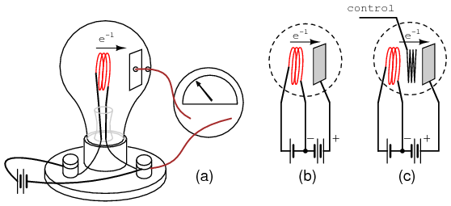
Figure 1: efectul Edison
Sumar:
1.2 Elemente active şi elemente pasive
Un element de circuit activ este orice tip de component ce poate controla deplasarea electronilor (curentul) pe cale electrică. Pentru ca un circuit să poarte numele de circuit electronic, aceste trebuie să conţină cel puţin un asfel de element activ. Componentele ce nu pot controla curentul prin intermediul unui alt semnal electric, sunt denumite elemente de circuit pasive. Rezistorii, condensatoarele, bobinele, transformatoarele şi chiar şi diodele, toate sunt considerate elemente de circuit pasive. Elementele active includ, printre altele, tuburile cu vid, tranzistoarele, redresoarele cu semiconductoare, şi triacurile.
Toate dispozitivele active controlează curentul prin ele. Unele dispozitive active realizează acest lucru prin intermediul unei tensiuni, iar altele prin intermediul curentulu. Cele care utilizează o tensiune statică ca şi semnal de control, sunt denumite dispozitive controlate în tensiune. Cele care folosesc un alt curent pentru controlul curentului în cauză sunt cunoscute sub numele de dispozitive controlate în curent. Tuburile cu vid sunt dispozitive controlate în tensiune iar tranzistoarele pot fi de ambele tipuri.

Sumar:
1.3 Amplificatorul
Practic, elementele active sunt folosite pentru proprietatea lor de amplificare. Indiferent dacă dispozitivul în cauză este constrolat în tensiune sau în curent, puterea necesară pentru semnalul de control este de obicei mult mai mică decât puterea disponibilă în curentul controlat. Cu alte cuvinte, un element activ nu permite pur şi simplu controlul curentului de către curent, ci, face posibil controlul unui curent mare de către un curent mic.
Datorită acestei diferenţă dintre puterea controlată şi puterea controlatoare, elementele active de circuit pot fi folosite pentru comanda unei cantităţi mari de putere (controlată) de către o cantitate mică de putere (controlatoare). Acest comportament poartă numele de amplificare.
O lege fundamentală a fizicii, cea a conservării energiei, spune că energia nu poate fi creată dar nici distrusă. Dacă această lege este adevărată, atunci construirea unui dispozitiv care să ia o cantitate mică de energie şi să o transforme într-o cantitate mare de energie, pe cale magică, nu este posibilă. Toate maşinile, incluzând circuitele electrice şi electronice, au o eficienţă maximă de 100%. În cele mai fericite cazuri, puterea de intrare este egală cu puterea de ieşire:
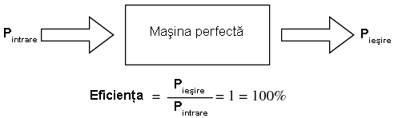
Figure 3: eficienţa unei maşini ideale este de 100%, dar nu poate fi mai mare de atât
În realitate însă, de cele mai multe ori, maşinile nu ating nici măcar această limită superioară, deoarece o parte din energia de intrare se pierde sub formă de căldură radiată în spaţiul din jur, iar această energie pierdută nu se regăseşte în valoarea energiei de ieşire.
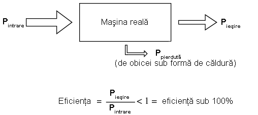
Figure 4: eficienţa unei maşini reale este sub 100%, datorită pierderilor sub formă de căldură
Au existat numeroase încercări, fără succes însă, de a proiecta şi construi o maşină a cărei putere de ieşire să fie mai mare decât puterea de intrare. Acest lucru nu doar că ar viola legea conservării energiei, dar ar duce lumea într-o revoluţie tehnologică fără precedent, deoarece acest tip de maşină s-ar putea alimenta singură, într-o buclă circulară, şi ar putea genera putere „gratuită”. Această maşină este cunoscută sub numele de perpetuum mobile.

Figure 5: eficienţa unui perpetuum mobile este de peste 100%
Deşi au existat multe încercări în acest domeniu, până acum nu s-a reuşit construirea unei maşini capabile să se alimenteze singură, cu propria ei energie plus generarea unei energii suplimentare.
Totuşi, există o gamă de maşini denumite amplificatoare, în cadrul cărora, semnalele de putere mică de la intrare sunt „transformate” (cu ajutorul unei surse externe de putere) în semnale de ieşire de o putere mult mai mare. Pentru a înţelege cum pot amplificatoarele să existe fără a viola legea conservării energiei, trebuie să înţelegem modul de funcţionare al dispozitivelor active.
Pentru că elementele active de circuit pot controla cantităţi mari de putere electrică cu ajutorul unei cantităţi mici de putere electrică, acestea pot fi utilizate în circuite pentru duplicarea formei semnalului de intrare cu ajutorul unei surse externe de putere electrică. Rezultatul este un dispozitiv ce pare a transforma pe cale magică un semnal electric de putere mică într-un semnal identic, dar de o putere/amplitudine mai mare. Legea conservării energiei nu este violată, deoarece puterea adiţională este întrodusă în circuit de o sursă externă, de obicei o baterie de curent continuu sau o sursă echivalentă. Amplificatorul nu crează şi nici nu distruge energie, ci doar o „remodelează” într-o formă de undă dorită:
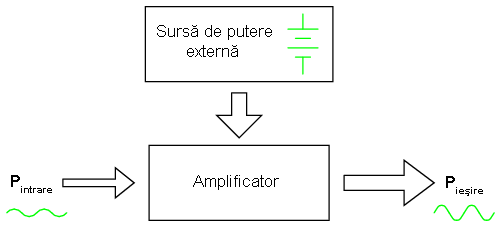
Figure 6: schema bloc de principiu al unui amplificator electronic
Cu alte cuvinte, abilitatea de control al curentului pe care elementele active le posedă, este folosită pentru „transformarea” puterii de curent continuu dintr-o sursă externă în aceeiaşi formă de undă precum a semnalului de intrare, forma semnalului produs la ieşire fiind în acest caz identică cu cea de la intrare, dar de o amplitudine mult mai mare. Tranzistorul, sau alte dispozitive active conţinute într-un amplificator, formează pur şi simplu o copie a formei de undă a semnalului de intrare cu ajutorul sursei externe de curent continuu „brute”.
Eficienţa amplificatoarelor, precum este cazul tuturor maşinilor, este limitată la un maxim de 100%. De obicei, amplificatoarele electronice au o eficienţă mult sub acest nivel, datorită pierderilor considerabile de energie sub formă de căldură.
Sumar:
1.4 Factorul de amplificare
Deoarece amplificatoarele pot să mărească amplitudinea semnalului de intrare, ar fi foarte util dacă am descrie această proprietatea a lor printr-un raport ieşire/intrare, raport ce poartă numele de factor de amplificare, sau amplificare. Acest factor nu are unitate de măsură, fiind un raport dintre două mărimi cu aceeiaşi unitate de măsură. Matematic, simbolul amplificării este „A”.
De exemplu, dacă la intrarea unui amplificator avem un semnal de tensiune alternativă efectivă de 2 V, iar la ieşire avem o tensiune alternativă efectivă de 30 V, spunem că factorul de amplificare în tensiune al amplificatorului este de 15, adică 30 împărţit la 2.

Figure 7: calcule matematice
Prin aceeiaşi metodă, dacă ştim factorul de amplificare şi amplitudinea semnalului de intrare, putem calcula amplitudinea semnalului de ieşire. De exemplu, dacă un amplificator cu un factor de amplificare în curent alternativ de 3.5, are la intrare un semnal de 28 mA efectiv, semnalul de ieşire va fi 98 mA efectiv, sau 3.5 * 28 mA.

Figure 8: calcule matematice
În exemplele de mai sus, toate semnalele şi amplificările au fost considerate în curent alternativ. Trebuie menţionat un principiu important: amplificatoarele electronice răspund diferit semnalelor de intrare în curent alternativ şi curent continuu, iar amplificarea celor două poate să fie diferită. Înainte de a putea face calculele amplifcărilor, trebuie să înţelegem cu ce semnale avem de a face în primul rând, alternative sau de continue.
Dacă conectăm mai multe amplificatoare în etaje, factorul de amplificare totale va fi egal cu produsul amplificărilor individuale. În figura de mai jos, un semnal de 1 V este aplicat intrării unui amplificator cu factorul de amplificare 3. Ieşirea acestuia, de 3 V, este introdusă la intrarea unui amplificator cu factorul de amplificare 5, semnalul de la ieşire fiind 15 V:
etaje; amplificarea finală este produsul amplificărilor individuale

Sumar:
1.5 Decibelul
În cea mai simplă formă, factorul de amplificare al amplificatorului este un raport dintre semnalul de ieşire şi cel de intrare, fiind o mărime fără unitate de măsură. Totuşi, există o unitate de măsură pentru reprezentarea amplificării, şi anume, bel-ul.
Ca şi unitate, bel-ul a fost folosit pentru reprezentarea pierderilor de putere din liniile telefonice, şi nu pentru reprezentarea amplificărilor. Unitatea poartă numele inventatorului scoţian, Alexander Graham Bell, a cărui muncă fundamentală a dus la dezvoltatea sistemelor telefonice. Sub forma sa originală, bel-ul reprezenta cantitatea de semnal pierdută datorită rezistenţei pe o anumită lungime de conductor electric. Acum, acesta este definit ca logaritm din baza zece a raportului dintre semnalul de ieşire şi cel de intrare:

Figure 9: formula de calcul pentru bel
Deoarece bel-ul este o unitate logaritmică, acesta este ne-liniar. Să considerăm următorul tabel, ca şi o comparaţie între pierderile de putere exprimate sub formă de raport şi aceleaşi pierderi exprimate sub formă de bel:
formă de raport şi aceleaşi pierderi de putere exprimate în beli 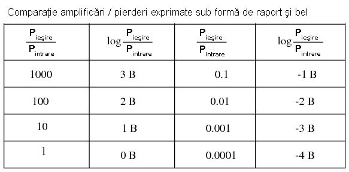
Mai târziu a fost realizat faptul că bel-ul este o unitate de măsură prea mare pentru a fi utilizată direct; prin urmare, a îceput să fie folosit tot mai des prefixul metric deci (1/10, sau 10-1), şi anume /deci/bel-ul, sau dB. Astăzi, expresia „dB” este atât de răspândită încât majoritatea nu relaizează că aceasta este o combinaţie dintre „deci” şi „bel”, sau că măcar există o unitate de măsură numită „bel”. Următorul tabel este asemănător celui precedent, dar de data aceasta valorile sunt exprimate în dB:
formă de raport şi aceleaşi pierderi de putere exprimate în decibeli

Sumar:
2 Fizica semiconductorilor
2.1 Fizica cuantică
Invenţia dispozitivelor semiconductoare a constituit cu siguranţă o nouă revoluţie industrială. Aceste dispozitive au făcut posibilă miniaturizarea aparatelor electronice, încluzând calculatoarele personale, dezvoltarea echipamentelor medicale de diagnoză şi tratament, apariţia dispozitivelor de telecomunicaţii moderne şi multe altele.
Dar în spatele acestor realizări remarcabile se află o altă revoluţie a ştiinţei în general: fizica cuantică. Fără această nouă înţelegere a lumii, dezvoltarea dispozitivelor semiconductoare nu ar fi fost posibilă. Fizica cuantică este însă un domeniu al ştiinţei extrem de complicat, iar acest capitol reprezintă doar o mică introducere. Fără o înţelegere de bază a fizicii cuantice, sau cel puţin o înţelegere a descoperirilor ştiinţifice ce au dus la formularea acesteia, este imposibilă inţelegerea funcţionării dispozitivelor electronice semiconductoare. Majoritatea textelor de electronică încearcă să explice semiconductorii cu ajutorul fizicii „clasice”, lucru ce duce la o confuzie şi mai mare, nu la înţelegerea subiectului.
- Modelul atomului
Majoritatea dintre noi am văzut modele ale atomului care arată aproximativ asfel:
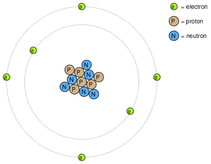
Figure 10: modelul lui Rutherford al atomului; electronii orbitează în jurul unui mic nucleu pozitiv
Acesta este cunoscut sub numele de „modelul lui Rutherford”. Centrul atomului este format din particule de materie minuscule denumite protoni şi neutroni; electronii orbitează în jurul nucleului precum planatele în jurul Soarelui. Nucleul prezintă o sarcină electrică pozitivă datorită prezenţei protonilor, neutronii neavând sarcină electrică, iar electronii ce orbiteză în jurul nucleului poartă o sarcină negativă, întreg ansamblul fiind asfel echilibrat din punct de vedere al sarcinilor electrice. Electronii sunt atraşi de protoni la fel cu planetele sunt atrase prin intermediu gravitaţiei de Soare, dar orbitele sunt stabile datorită mişcării electronilor. Acest model extrem de popular al atomului a fost prezentat pentru prima dată de Ernest Rutherford, ce a determinat pe cale experimentală, în jurul anului 1911, că sarcinile pozitive ale atomului sunt concentrate într-un nucleu dens şi de dimensiuni reduse, în contradicţie cu modelul propus de J.J. Thompson, care susţinea că aceste sarcini sunt distribuite egal în interiorul atomului.
Experimentul de împrăştiere al lui Rutherford a presupus bombardarea unei folii subţiri de aur cu particule Alfa, încărcate pozitiv. Rezultatele au fost neaşteptate. O mică parte din particule au fost deviate la unghiuri foarte mari. Câteva dintre particulele Alfa au fost deviate înapoi, la aproape 180o, dar majoritatea particulelor au trecut pur şi simplu prin folia de aur nedeviate, indicând faptul că cea mai mare parte a foliei era compusă din aer. Faptul că o mică parte a particulelor Alfa au fost deviate la unghiuri foarte mare nu se putea explica decât prin prezenţă unui nucleu minuscul, încărcat cu sarcină pozitivă.
unei foiţe de aur cu particule Alfa încărcate pozitiv

Cu toate că acest model al atomului era mai precis decât cel al lui Thompson, totuşi, nici acesta nu era perfect. Au fost întreprinse, prin urmare, noi experimente pentru determinarea structurii atomice corecte, iar aceste eforturi au dus la descoperirile bizare al fizicii cuantice. Astăzi, modelul atomului, aşa cum este el înţeles cel puţin, este destul de complex. Totuşi, comparaţia atomului „lui Rutherford” cu sistemul solar continuă să domine chiar şi în mediile academice.
De exemplu, următoarea descriere este luată dintr-o carte de electronică:
/Electronii negativi ce orbitează în jurul nucleului pozitiv sunt atraşi de acesta, ceea ce ne face să ne întrebăm: de ce eletronii nu cad pe nucleul atomului? Răspunsul este că electronii rămân pe orbitele lor stabile datorită existenţei celor două forţe egale şi de sens contrar: forţa centrifugă exercitată asupra electronilor aflaţi în mişcare pe orbite ce anulează forţa centripetă ce atrage elecronii spre nucleu datorită sarcinilor opuse./
Urmând modelul lui Rutherford, autorul consideră electronii ca fiind bucăţi solide de materie ce se deplasează pe orbite circulare, atracţia faţă de nucleul încărcat cu o sarcină de semn contrar fiind balansată de mişcarea lor. Referirea la „forţa centrifugă” nu este corectă din punct de vedere tehnic (nici chiar pentru planete), dar este uşor de trecut cu vedere datorită popularităţii ei. În realitate, nu există nicio forţă care să împingă un corp, orice corp, departe de centrul orbitei acestuia. „Iluzia” este dată de faptul că un corp ce are inerţie tinde să se deplaseze în linie dreaptă, iar din moment ce o orbită este o deviaţie (acceleraţie) a deplasării în linie dreptă, există tot timpul o opoziţie faţă de forţa de atracţia a corpului spre centrul orbitei, fie că este forţă gravitaţională, atracţie electrostatică, sau orice altă forţă.
Însă, adevărata problemă a acestei explicaţii este idea că orbitele electronilor sunt circulare. Faptul că sarcinile electrice accelerate emit radiaţie electromagnetică se ştie încă de pe vremea lui Rutherford, iar acest lucur se poate dovedi pe cale experimentală. Din moment ce mişcare orbitală este o formă de acceleraţie (corpul ce orbitează este într-o accelarţie constantă faţă de mişcarea normală, liniară), electronii aflaţi în stare de orbitare ar trebui să „arunce” radiaţie precum o roată aflată în noroi. Dacă electronii ar pierde energie în acest mod, acesţia s-ar apropia din ce în ce mai mult de nucleu, rezultatul fiind o coliziune cu nucleul pozitiv. Totuşi, acest lucru nu se întâmplă în general în atomi. Într-adevăr, orbitele electronilor sunt extrem de stabile.
Mai mult decât atât, experimentele cu atomi „excitaţi” au demonstrat că energia electromagnetică emisă de un atom posedă doar anumite frecvenţe specifice. Atomii excitaţi de influenţe externe, precum lumina, absrob această energie şi emit unde electromagnetice de frecvenţe specifice. Când energia emisă de un atom este descompusă în frecvenţele sale (culori) cu ajutorul unei prisme, spectrul culorilor este compus din linii distincte, acestea fiind unice elementului respectiv. Acest fenoment este în general folosit pentru identificarea elementelor atomice, şi chiar şi pentru determinarea proporţiilor fiecărui element dintr-o compoziţie chimică. Conform modelului lui Rutherford şi a legilor fizicii clasice, domeniu frecvenţelor acestor atomi excitaţi ar trebui să fie practic nelimitat. Cu alte cuvinte, dacă modelul lui Rutherford ar fi fost corect, spectrul luminii emise de oricare atom ar apărea ca o bandă continuă de culori şi nu doar sub forma câtorva linii distincte.
Niels Bohr a încercat să îmbunătăţească modelului lui Rutherford după ce a studiat o perioadă de câteva luni în laboratorul acestuia în 1912. Încercând să armonizeze şi descoperirile celorlalţi fizicieni, precum Max Plank şi Albert Einstein, Bohr a sugerat că fiecare electron posedă o anumită energie specifică, iar orbitele lor sunt cuantificate asfel că fiecare dintre electroni poate ocupa doar anumite locuri în jurul nucleului. Pentru a scăpa de implicaţiile mişcării electronilor datorită legilor electromagnetismului şi a particulelor accelerate, Bohr a considerat aceste orbite (orbitali) ca fiind staţionare.
Cu toate că încercarea lui Bohr de reconstruire a structurii atomului în termeni cât mai apropiaţi de rezultatele experimentale, a constituit un pas foarte împortant pentru fizică, acesta nu a fost totuşi complet. Analizele sale matematice au condus la predicţii mult mai bune a evenimentelor experimentale decât modelele precedente ale atomului, dar câteva întrebări despre modul ciudat al comportamentului electronilor încă nu îşi găsiseră răspunsul. Susţinerea faptului că electroni existau în stări staţionare şi cuantificate în jurul nucleului era un pas înainte, dar motivul pentru care electronii se comportau asfel nu era încă cunoscut. Răspunsul acestor întrebări avea să-l dea un alt fizician, Louis de Broglie., cu aproximativ zece ani mai târziu.
De Broglie a propus că electronii, precum fotonii (particule de lumină), manifestă atât proprietăţi ale particulelor cât şi proprietăţi ale undelor. Bazându-se pe această interpretare, acesta a sugerată că o analiză a orbitalilor electronilor din punct de vedere al undelor şi nu al particulelor, ar răspunde mai multor întrebări legate de natura lor. Într-adevăr, acesta a reprezentat un nou pas în dezvoltarea unui model al atomului.
Ipoteza lui de Broglie a făcut posibilă introducerea suportului matematic şi analogiilor fizice pentru stările cuantificate al electronilor dintr-un atom, dar nici modelul acestuia nu era complet. În decurs de câţiva ani însă, fizicientii Werner Heisenberg şi Erwin Schrodinger, fiecare lucrând individual, au creat un model matematic mult mai riguros pentru particulele subatomice, plecând de la conceptul dualităţii undă-particulă a lui de Broglie.
Avansul teoretic de la modelul staţionar al undei propus de Brogile la modelul matricial al lui Heisenber la ecuaţiile diferenţiale ale lui Schrodinger, este cunoscut sub numele de mecanică cuantică şi introduce o carcateristică aparent şocantă a lumii particulelor subatomice, şi anume probabilitatea sau incertitudinea. Conform teoriei mecanicii cuantice, poziţia exacţă şi momentul exact al particulelor sunt imposibil de determinat în acelaşi timp. Explicaţa acestui „principiu al incertitudinii” constă într-o eroare de măsură cauzată de obicei de procesul de măsurare, şi anume, prin încercarea de măsurare exactă a poziţiei unui electron, are loc o interferenţă cu momentul acestuia şi prin urmare nu putem şti care a fost momentul acestuia înainte de efectuarea măsurătorii, şi invers. Implicaţia suprinzătoare a mecanicii cuantice este că particulele nu au de fapt o poziţie şi un moment precis, ci aceste două cantităţi sunt echilibrate asfel încât incertitudinea lor combinată nu scade niciodată sub o anumită valoare minimă.
Valoarea minimă a incertitudinii poziţiei şi momentului unei particule, exprimată de Heisenberg şi Schrodinger, nu are nimic de a face cu aparatele de măsură „neperformante”, ci este o proprietate intrinsecă a dualităţii undă-particulă. Electronii, prin urmare, nu există în orbitele lor ca şi „bucăţi” de materie precis delimitate, şi nici măcare sub formă de unde bine delimitate, ci sub formă de nori cu o distribuţie de probabilităţi, ca şi cum fiecare electron ar fi „împrăştiat” pe o suprafaţă mare de poziţii şi momente.
Poziţia radicală conform căreia, electronii existau sub formă de nori, părea să vină în contradicţie cu principiile originale a stărilor cuantificate ale electronilor: faptul că electronii există sub forma „orbitelor” discrete şi bine definite în jurul nucelului atomului. Această din urmă explcaţia a fost cea care a dus constituit, până la urmă, punctul de placare al mecanicii cuantice. Totuşi, comportamtenul „cuantic” al electronilor nu depinde de o anumită poziţie şi moment, ci depinde de cu totul altă proprietate, numerele cuantice. Pe scurt, mecanica cuantică înlătură noţiunile „clasice” de poziţie şi moment absolut înlocuindu-le pe acestea cu noţiuni ce nu au nicio analogie în viaţa reală.
Cu toate că electronii există sub formă de „nori” cu probabilităţi distribuite şi nu sub formă de materie discretă, aceşti nori au unele caracteristicei ce sunt discrete. Oricare electron dintr-un atom poate fi descris de patru numere cuantice, şi anume: număr cuantic principal, orbital, magnetic şi de spin. Toate aceste numere luate împreună determină starea unui electron la un moment dat.
- Numărul cuantic principal
Simbolizat prin litera n, acest număr descrie stratul pe care se află un electron. Învelişul electronic este un spaţiu din jurul nucleului atomului, format din straturi, ce determină poziţiile în care electronii pot exista. Electronii se pot deplasa de pe un strat pe altul, dar nu pot exista în regiunile dintre straturi.
Numărul cuantic principal al electronului este un număr întreg pozitiv (1, 2, 3, 4…). Asfel, fiecare electron poate exista pe unul dintre aceste straturi, în funcţia de componenţa atomului. Aceste valori nu au fost alese arbitrar, ci ca urmare a experimentelor cu spectre de lumină: diferitele frecvenţe ale luminii emise de atomii de hidrogen excitaţi, urmează o secvenţă matematică ce depinde de anumite valori întregi.
Fiecare strat poate susţine mai mulţi electroni. O analogie a acestei aşezări poate fi imaginată dacă luăm în considerare un amfiteatru. Fiecare persoană trebuie să aleagă un rând în care să se aşeze (nu se poate aşeza între rânduri); la fel, fiecare electro trebuie să „aleaga” un anumit strat în care să se „aşeze”. Ca şi în cazul amfiteatrealor, stratul exterior poate susţine mai mulţi electroni decât stratul interior, din apropierea nucleului. De asemenea, electroni tind să se „aşeze” pe cel mai jos strat disponibil, la fel cum într-un amfiteatru, oamenii caută să se aşeze cât mai aproape de scenă (în primul rând). Cu cât numărul stratului (numărul cuantic principal, n) este mai mare, cu atât energia electronilor ce-l ocupă este mai mare.
Numărul maxim de electroni dintr-un strat este descris de ecuaţia 2n2, unde este este numărul cuantic principal. Asfel, primul strat (n=1) poate fi ocupat de doar 2 electroni, cel de al doilea strat (n=2) de 8 electroni, al treilea (n=3) de 18 electroni.

Figure 11: numărul cuantic principal şi numărul maxim de electroni pe fiecare strat conform relaţiei 2n\2
Straturile electronice (de la electron) ale unui atom au fost notate cu litere nu cu cifre. Primul strat (n=1) se notează cu litera K, al doilea (n=2) cu L, al treilea (n=3) cu M, al patrulea (n=4) cu M, al cincilea (n=5) cu O, al şaselea (n=6) cu P şi al şaptelea (n=7) cu Q.
- Numărul cuantic orbital
Fiecare strat este compus din substraturi. Substraturile sunt regiuni spaţiale ce descriu locul în care pot exista „nori” electronici iar forma lor este diferită de la un substrat la altul. Primul substrat are forma unei sfere, dacă îl privim sub forma unui nori de electroni ce „înveleşte” tridimensional nucleul atomic. Cel de al doilea substrat însă, este compus din doi „lobi” conectaţi împreună într-un singur punct în apropierea centrului atomului. Al treilea substrat este format dintr-un set de patru „lobi” aranjaţi în jurul nucleului.
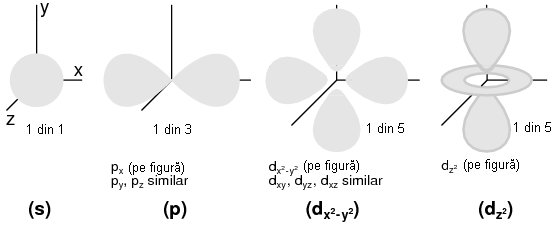
Figure 12: reprezentarea substraturilor sub formă orbitală
Numărul orbital este un număr întreg, la fel ca şi numărul principal, doar că înclude şi zero. Aceste numere sunt simbolizate prin intermediul literei l. Numărul substraturilor dintr-un strat este egal cu numărul cuanti orbital. Asfel, primul strat (n=1) are un substrat, numerotat cu 0; al doilea strat (n=2) are două substraturi, 0 şi 1; al treilea strat (n=3) are trei substraturi, 0,1 şi 2. O altă convenţie, foarte des întâlnită, este numerotarea substraturilor prin s (l=0), p (l=1), d (l=2) şi f (l=3)
reprezentarea substraturilor atomului de Ag; notaţia spectroscopică

- Numărul cuantic magnetic
Numărul cuantic magnetic al unui electron determină orientarea formei substratului. „Lobii” substraturile pot fi orientăţi în mai multe direcţii. Aceste orientării diferite poartă numele de orbitali. Primul substrat (s; l=0) este o sferă fără posibilitatea de existenţă a unei direcţii, prin urmare, în acest caz, avem doar un orbital. Pentru al doilea substrat (p; l=1) din fiecare strat, „lobii” acestora pot avea trei direcţii diferite.
Simbolul numărului magnetic este ml. Pentru a calcula numărul de orbitali din fiecare strat, înmulţim numărul substratului şi adăugăm 1 (2*l + 1). De exemplu, priumul substrat (l=0) al oricărui strat, conţine un singur orbital, numerotat cu 0; al doilea substrat (l=1) al oricărui strat conţine trei orbitali, -1, 0, 1; al treilea substrat (l=2) conţine cinci orbitali, numerotaţi cu -2, -1, 0, 1 şi 2; etc.
- Numărul cuantic de spin
Proprietatea de „spin” a electronilor a fost descoperită pe cale experimentală. O observaţie mai atentă a liniilor spectrale a reliefat faptul că fiecare linie este de fapt o pereche de linii foarte apropiate una de cealaltă, ipoteza fiind că această structură este rezultatul spin-ului fiecărui electron în jurul propriei sale axe. Atunci când sunt excitaţi, electronii cu spin diferit vor emite energie sub frecvenţe diferite.
Numărul de spin este simbolizat prin ms. În fiecare orbital, din fiecare substrat al fiecărui strat, pot exista doi electroni, unul cu spin +1/2, iar celălalt cu spin -1/2.
- Principiul de excluziune al lui Pauli
Explicarea aşezării electronilor în atom cu ajutorul acestor numere cuantice poartă numele de principiul de excluziune al lui Pauli. Acest principiu spune că, în acelaşi atom, nu pot exista doi electronic care să ocupe exact aceleaşi stări cuantice. Cu alte cuvinte, fiecare electron al unui atom posedă un set unic de numere cuantice. Acest lucru impune o limită numărului de electroni ce pot ocupa orice orbital, substrat sau strat.
Mai jos este este prezentat aranjamentul electronic al atomului de hidrogen:

Figure 13: aranjamentul electronic al atomului de hidrogen
Cu nucleul format dintr-un singur proton, este suficient un electron pentru ca atomul să atingă achilibrul electrostatic (sarcina electrică pozitivă a protonului este în echilibru cu sarcina electrică negatică a electronului). Acest electron ocupă stratul cel mai de jos (n=1), primul substrat (l=1), în singurul orbital (orientarea spaţială) al acelui substrat (ml=0), cu un spin de 1/2. O metodă practică şi des întâlnită de descriere a acestui aranjament constă în scrierea electronilor în funcţie de straturile şi substraturile ocupate; această convenţie portă numele de notaţia spectroscopică. Sub această notaţie, numărul stratului este un număr întreg pozitiv, substratul este o literă (s, p, d, f), iar numărul total de electroni dintr-un substrat (toţi orbitalii şi spinii incluşi) este reprezentat printr-un indice superior. Asfel, hidrogenul, având doar un singur electron în stratul inferior, se poate descrie prin notaţia 1s1.
Trecând la următorul atom (în ordinea numărului atomic), avem elementul heliu:

Figure 14: aranjamentul electronic al atomului de heliu
Nucleul unui atom de heliu are în compoziţia sa doi protoni, iar acest lucru necesită existenţa a doi electroni pentru a echilibra sarcina electrică totală a atomului. Din moment ce ambii electroni, unul cu spin 1/2, celălalt cu spin -1/2, „încap” pe un singur orbital, configuraţia atomului de heliu nu necesită substraturi sau straturi suplimentare pentru cel de al doilea electron.
Totuşi, un atom ce conţine trei sau mai mulţi electron, va necesita substraturi adiţionale pentru toţi acei electroni, din moment ce pe stratul inferior (n=1) încat doar doi electron. Să considerăm următorul atom, cel de litiu.
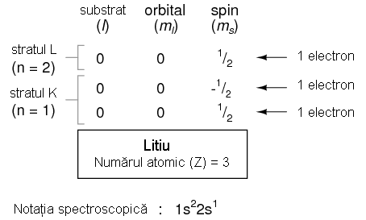
Figure 15: aranjamentul electronic al atomului de litiu
Un atom de litiu foloseşte doar o fracţiune din capacitatea stratului L (n=2), capacitatea totală a acestuia fiind de opt electroni (capacitatea maximă a stratului = 2n2, unde n este numărul stratului). Dacă examinăm aranjamentul electronic al unui atom cu stratul L completat, putem vedea cum toate combinaţiile de substraturi, orbitali şi spini sunt ocupate de electroni. Elementul ce corespunde acestei configuraţii este neonul.

Figure 16: aranjamentul electronic al atomului de neon
Adesea, atunci când se foloseşte notaţia spectroscopică a unui atom, toate straturile ce sunt ocupate complet sunt ignorate, fiind scrise doar straturile neocupate sau stratul ocupat superior. De exemplu, neonul (prezentat mai sus), ce are două straturi complet ocupate, poate fi descris pur şi simplu prin 2p6 în loc de 1s22s22p6. Litiul, având stratul K complet ocupat, şi doar un singur electron în stratul L, poate fi descris prin notaţia 2s1 în loc de 1s22s1.
„Ignorarea” straturilor inferioare, complet ocupate, nu este doar o convenţie de scriere, ci ilustrează foarte bine un principiu de bază al chimiei: comportamentul chimic al unui element este determinat în primul rând de straturile sale neocupate. Atât hidrogenul cât şi litiul posedă un singur electron în straturile superioare (1s1 şi 2s1), iar acest lucru se traduce printr-un comportament similar al celor două elemente. Ambele elemente sunt reactive, şi au o reactivitate similară. Contează mai puţin faptul că litiul posedă un strat complet (K) în plus faţă de hidrogen. Comportamentul său chimic este determinat de stratul său neocupat, L.
Elementele a căror straturi superioare sunt ocupate complet, sunt clasificate ca elemente nobile, fiind aproape non-reactive faţă de celelalte elemente. Aceste elemente au fost clasificate în trecut ca inerte, crezându-se că sunt complet non-reactive, dar acestea pot forma compuşi cu alte elemente în condiţii specifice.
Sumar:
- Electronii există în atomi sub formă de „nori” ai probabilităţilor distribuite, şi nu sub forma unor corpuri discrete ce orbitează în jurul nucelului precum sateliţii în jurul planetelor
- Fiecare electron din jurul nucleului atomului are o „stare” unică descrisă de patru numere cuantice: numărul cuantic principal, cunoscut sub numele de strat; numărul cuantic orbital, cunoscut sub numele de substrat; numărul cuantic magnetic, ce descrie orbitalul (orientarea stratului); numărul cuantic de spin, sau pur şi simplu spin. Aceste stări sunt cuantificate, adică electronul nu poate exista „între” aceste stări ce sunt definite de numerotaţia cuantică
- Numărul cuantic principal (n) descrie stratul pe care se află electronul. Cu cât acest număr este mai mare, cu atât raza norului electronic este mai mare faţa de nucleul atomului, şi cu atât este mai mare energia electronului. Aceste numere sunt numere întregi pozitive
- Numărul cuantic orbital (l) descrie forma norului electronic dintr-un anumit strat şi este cunoscut adesea sub numele de substrat. Numărul substraturilor (formelor norilor electronici) din oricare strat este egal cu număru cuantic orbital. Acestea sunt numere întregi pozitive ce încep de la zero şi se termină la n-1 (n - numărul cuantic principal)
- Numărul cuantic magnetic ml descrie orientarea substratului (forma norului electronic). Numărul orientărilor substraturilor este de 2l + 1 (l - numărul cuantic orbital). Fiecare orientare unică poartă numele de orbital. Aceste numere sunt întregi, cu valor între -l şi l
- Numărul cuantic de spin ms descrie o altă proprietate a electronului, iar valoarea acestuia poate să fie +1/2 sau -1/2
- Principiul de excluziune al lui Pauli spune că, într-un atom, nu există doi electroni cu acelaşi set de numere cuantice. Prin urmare, numărul maxim de electroni pe fiecare orbital este de 2 (spin=1/2 şi spin=-1/2), de exemplu
- Notaţia spectroscopică este o convenţie folosită pentru descrierea configuraţiei electronilor dintr-un atom. Straturile sunt descrise de numere întregi, urmate de substraturi, descrise cu ajutorul literelor (s, p, d, f), iar un indice superior este folosit pentru indicarea numărului total de electroni de pe fiecare substrat în parte
- Comportamentul chimic al unui atom este complet determinat de electronii din straturile neocupate complet. Straturile inferioare ocupate complet nu au aproape niciun efect asupra formării legăturilor chimice ale elementelor
2.2 Valenţa şi structura cristalină
- Valenţa
Electronii din stratul exterior, sau stratul de valenţă, sunt cunoscuţi sub numele de electroni de valenţă. Aceşti electroni sunt responsabil de proprietăţile chimice ale elementelor. Aceştia sunt electronii ce participă la reacţiile chimice cu celelalte elemente. Conform unei reguli chimice simplificate, aplicabilă reacţiilor simple, atomii încearcă să-şi completeze toate locurile libere ale stratului exterior cu electroni. Atomii pot ceda câţiva elecroni pentru a „descoperi” un strat complet, sau pot accepta câţiva electroni pentru a completa ultimul strat (stratul exterior). Ambele procese duc la formarea ionilor. Atomii pot chiar să împartă electroni între ei în încercarea de completare a stratului exterior, ducând la formarea legăturilor moleculare, adică, atomii se asociază pentru formarea unei molecule.
De exemplu, elementele din grupa I din tabelul periodic, Li, Na, K, Cu, Ag şi Au au doar un singur electron de valenţă (numărul de electroni de pe ultimul strat). Toate aceste elemente posedă proprietăţi chimice similare. Aceşti atomi cedează un electron pentru a reacţiona cu alte elemente, iar această proprietatea face ca aceste elemente să fie conductoare excelente de electricitate.
valenţă, electron care este cedat în reacţia cu alte elemente chimice

Elementele din grupa VIIA, Fl, Cl şi BR, au toate câte 7 electroni în stratul exterior (stratul de valenţă). Aceste elemente acceptă un electron pentru completarea stratului de valenţă la 8 electroni. În cazul în care aceste elemente acceptă un electron, ele formează ioni negativi. Din moment ce nu cedeazăelectroni, aceste elemente sunt foarte buni izolatori electrici.
valenţă, prin urmare, acestea acceptă un electron pentru completarea
Figure 17: stratului de valenţă
De exemplu, un atom de Cl acceptă un electron al unui atom de Na devenind ion negativ Cl-, iar atomul de Na devine ion pozitiv, Na+. Un ion este un atom, moleculă sau grupare de atomi care are un exces de sarcină electrică pozitivă sau negativă. Acesta este modul în care Na şi Cl se combină pentru formarea NaCl, sarea de masă, care este defapt o pereche de ioni, Na+Cl-. Fiindcă sarcinile celor doi ioni sunt de semn contrar, cei doi se atrag reciproc.

Figure 18: Atomul de Na doneazăun electron atomului de Cl, formând ioni pozitivi şi negativ de Na, respectiv Cl
Structura cristalină a clorurii de sodiu (NaCl) este prezentată în figura de mai jos.
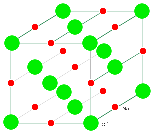
Figure 19: structura cristalină a clorurii de sodiu (NaCl)
Elementele din grupa a VIIIA, He, Ne, Ar, Kr şi Xe au toate câte 8 electroni pe stratul de valenţă. Acest lucru înseamnă că aceste elemente nici nu donează dar nici nu acceptă electroni, neparticipând la reacţii chimice cu alte elemente. Toate sunt izolatori electrici şi se găsesc sub formă de gaz la temperatura camerei.
stratul de valentă, prin urmare, aceste elemente nu cedează şi nici nu acceptă electroni, ceea ce înseamnă ca nu pot participa la reacţii

Figure 20: chimice
Elementele din grupa IVA, C, Si şi Ge au toate câte 4 electroni în stratul de valenţă. Aceste elemente formează compuşi cu alte elemente, dar nu formează ioni. Acest tip de legătură este cunoscută sub numele de legătură covalentă. Se poate observa că atomul din centru are completat stratul de valenţă prin punerea în comun a electronilor atomilor. Figura de mai jos este o reprezentare bi-dimensională a unui aranjament tri-dimensional. Elementele din această grupă prezintă proprietăţile semiconductoare pe care le vom studia în continuare.
de valenţă; aceste elemente sunt studiate în electronică pentru

Figure 21: proprietăţile lor semiconductoare
- Structura cristalină
Majoritatea substanţelor inorganice formează o structură ordonată denumită cristal atunci când se formează legături între atomii sau ionii acestora. Chiar şi metalele sunt compuse din cristale, la nivel microscopic. Practic însă, toate metalele industriale au o strucutră policristalină, în afară de materialele semiconductoare ce sunt monocristaline.
Majoritatea metalelor sunt moi şi uşor deformabile pe cale industrială. În timpul prelucrării, microcristalele sunt deformate, iar electronii de valenţă sunt liberi să se deplaseze prin reţeaua cristalină, şi de la cristal la cristal. Electronii de valenţă nu aparţin unui atom anume, ci tuturor atomilor.
Structura cristalină rigidă a NaCl prezentată mai sus, este compusă dintr-o structură regulată repetitivă formată din ioni pozitivi de Na şi ioni negativ de Cl. Odată ce atomii de Na şi Cl formează ionii de Na+ şi Cl- prin transferul unui electron de la Na la Cl, fără existenţa electronilor liberi, electronii nu sunt liberi să se deplaseze prin reţeaua cristalină, o diferenţa mare faţă de metale. Nici ionii nu sunt liberi. Ionii sunt liberi să se deplaseze doar dacă NaCl este dizolvata în apă, dar în acest caz, cristalul nu mai există. Materialele ionice formează structuri cristaline datorită atracţiei electrostatice puternice dintre ionii încărcaţi cu sarcini opuse.
Materialele semiconductoare din grupa IV (C, Si, Ge), formează de asemenea cristale. Fiecare atom formează o legătură chimică covalentă cu alţi patru atomi. Cristalul format este practic o singură moleculă. Structura cristalină este relativ rigidă şi rezistă deformaţiilor. Există un număr relativ mic de electroni liberi prin cirstal.
Sumar:
- Atomii încearcă să-şi completeze stratul exterior, de valenţă, cu toţi cei 8 electroni (2 electroni pentru stratul inferior). Atomii pot dona, accepta sau împărţi electroni pentru a completa un strat
- Atomii formează adesea structuri ordonate şi rigide denumite cristale
- Un ion pozitiv se formează prin cedarea unui elentron de către un atom neutru
- Un ion negativ se formează prin acceptarea unui elentron de către un atom neutru
- Elementele semiconductoare din grupa IVA, C, Si şi Ge au o structură cristalină de tip diamant. Fiecare atom al cristalului este parte a unei molecule gigantice, formând legături cu alţi patru atomi
- Majoritatea dispozitivelor semiconductoare sunt confecţionate din monocristale
2.3 Teoria benzilor de energie
Fizica cuantică descrie starea electronilor dintr-un atom cu ajutorul celor patru numere cuantice. Aceste numere descriu stările permise ale electronilor dintr-un atom. Dacă revenim la analogia amfiteatrului, numerele cuantice descriu numărul rândurilor şi a locurilor existente. Electronii individuali pot fi descrişi printr-o combinaţie de numere cuantice, precum un spectator într-un amfiteatru primeşte un anumit rând şi număr.
La fel ca spectatorii dintr-un amfiteatru, ce se pot deplasa liberi între scaune şi rânduri, şi electronii îşi pot modifica starea dacă există destulă energie şi loc pentru deplasarea acestora. Din moment ce nivelul stratului este strâns legat cu cantitatea de energie a unui electron, „salturile” între straturi (şi chiar substraturi) necesită un transfer de energie. Pentru ca un electron să se poată deplasa într-un strat mai înalt, acesta are nevoie de energie adiţională dintr-o sursă externă. Folosind analogia amfiteatrului, pentru a ajunge într-un rând de scaune superior, este nevoie de o energie din ce în ce mai mare, deoarece persoana trebuie să urce la o înălţime tot mai mare ce necesită învingerea forţei gravitaţionale. De asemenea, dacă un electron coboară pe un strat inferior, acesta cedează energie. Aceste nivele poartă numele de nivele energetice
Nu toate „salturile” sunt însă egale, cele dintre straturi necesită cel mai mare schimb de energie, pe când salturile dintre substraturi sau dintre orbitali necesită un schimb de energie mai mic.
Când atomii se combină pentru formarea substanţelor, straturile, substraturile şi orbitalii exterior se combină între ele, ducând la creşterea energiei disponible pentru electroni. Când un număr foarte mare de atomi sunt foarte aproape unul de celălalt, aceste nivele de energie disponibile formează o bandă de electroni aproape continuă, bandă pe care electroni se pot deplasa cu uşurinţă.

Figure 22: suprapunerea benzilor energetice în cazul metalelor
Lăţimea acestor benzi şi distanţa dintre ele determină mobilitatea electronilor în cazul aplicării unui câmp electric asupra lor. În substanţele metalice, benzile libere se suprapun cu benzile ce conţin electroni, ceea ce înseamnă că electronii unui singur atom se pot deplasa la un nivel energetic mai mare necesitând foarte puţină energie externă sau chiar deloc. Asfel, electronii din stratul exterior sunt cunoscuţi sub numele de electroni liberi şi se pot deplasa foarte uşor dacă sunt supuşi unui câmp electric exterior.
Suprapunerea benzilor nu are loc însă în toate substanţele, indiferent de numărul atomilor ce se află în proximitate. În cazul unor substanţe, există o distanţa considerabilă între banda de valenţă (nivelul energetic cel mai mare) şi următoarea bandă goală, denumită banda de conducţie. Prin urmare, electronii de valenţă sunt „legaţi” de atomii lor şi nu pot deveni mobili în cadrul substanţelor fără ajutorul unei energii externe considerabile. Aceste substanţe formează materialele izolatoare (dielectrice).

Figure 23: separarea benzilor energetice în cazul dielectricilor
Însă, materialele din categoria semiconductorilor au o „distanţă energetică” îngustă între benzile de valenţă şi cele de conducţie. Asfel, cantitatea de energie necesară pentru trecerea electronilor de valenţă în banda de conducţie, de undă devin mobil, este destul de modestă.
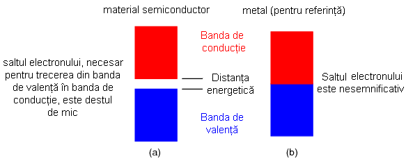
Figure 24: separarea benzilor energetice în cazul materialelor semiconductoare
La temperaturi joase, energia termică disponibilă pentru „împingerea” electronilor de valenţă peste spaţiul dintre banda de valenţă şi cea conducţie este foarte mică, iar materialul semiconductor se comportă precum un izolator. La temperaturi înalte însă, energia termică devine suficient de mare pentru a forţa electronii peste „distanţa energetică”, iar materialul se va comporta precum un material conductor.
Sumar:
- Pentru îndepărtarea unui electron din banda de valenţă spre o bandă neocupată, superioară, denumită bandă de conducţie, este nevoie de o anumită energie exterioară. Pentru deplasarea electronilor între straturi este nevoie de o energie mai mare decât pentru deplasarea lor între substraturi.
- Datorită faptului că banda de valenţă şi cea de conducţie se suprapun în cazul metalelor, energia necesară pentru deplasarea unui electron este mică. Prin urmare, metalele sunt conductori de electricitate foarte buni
- Spaţiul foarte mare existent între banda de valenţă şi cea de conducţie în cazul materialelor izolatoare, necesită o energie foarte mare pentru deplasare electronilor între aceste benzi. Din această cauză, aceste materiale sunt bune izolatoare şi nu conduc electricitate
- Materialele semiconductoare au un spaţiu relativ mic între banda de valenţă şi banda de conducţie. Semiconductorii puri nu sunt nici buni izolatori, nici buni conductori
2.4 Electroni şi goluri
Materialele semiconductoare pure sunt izolatori relativ buni, în comparaţie cu metalele, dar nu sunt la fel de bune precum sticla, de exemplu. Pentru a putea fi folosit în aplicaţii cu semiconductori, materialul semiconductor pur, nedopat, nu trebuie să conţină mai mult de o impuritatea la 10 miliarde de atomi semiconductori. Acest lucru este analog unei impurităţi sub formă de „un fir de praf într-un sac de zahăr”. Materialele semiconductoare impure sunt conductoare mult mai bune, dar nu la fel de bune precum metalele. De ce se întâmplă acest lucru? Pentru a putea răspunde acestei întrebări, trebuie să ne uităm la structura electronică a acestor materiale.
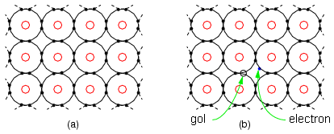
Figure 25: strucutra electronică a materialelor semiconductoare; reprezentarea electronilor şi a golurilor
În figura de sus (a), cei patru electroni din stratul de valenţă a unui material semiconductor formează legături covalente cu alţi patru atomi. Toţi electronii unui atom sunt formează legături covalente. Electronii nu se pot deplasa liber în structura cristalului. Prin urmare, semiconductorii puri (intrinseci) sunt izolatori relativ buni în coparaţie cu metalele. Energia termină poate elibera ocazional un electron din structura cristalină a semiconductorului. Acest electron se poate deplasa liber prin structura cristalului (electron liber). Când acest electron a fost eliberat cu ajutorul unei energii exterioare, a lăsat în urma lui un loc liber cu sarcină pozitivă în structura cristalului, sarcină cunoscută sub numele de gol. Acest gol nu este nici el fix, ci se poate deplasa liber. Atât electronul, cât şi golul contribuie la conducţia electrică a cristalului. Electronul este liber până în moment în care „cade” într-un gol, proces cunoscut sub numele de recombinaţie. Dacă se aplică un câmp electric extern asupra semiconductorului, electronii şi golurile se vor deplasa în direcţii opuse. Creşterea temperaturii duce le creşterea numărului de electroni şi goluri şi la descreşterea rezistenţei. Acest lucru este exact opus comportamentului metalelor, unei rezistenţa creşte cu creşterea temperaturii datorită creşterii coliziunilor dintre electroni şi structura cristalină. Numărul de electroni şi goluri într-un semiconductor intrinsec este egal. Totuşi, viteza de deplasare ai celor doi purtători de sarcină (electroni şi goluri) nu este egală la aplicarea unui câmp electric extern. Cu alte cuvinte, mobilitatea celor doi purtători de sarcină nu este aceeiaşi.
Materialele semiconductoare pure nu sunt foarte folositoare. Acestea trebuie să prezintă un nivel înalt de puritate înainte de adăugarea impurităţilor specifice.
Materialele semiconductoare pure (1 parte la 10 miliarde), pot fi „murdărite” cu aproximativ 1 parte la 10 milioane pentru creşterea numărului de purtători de sarcină. Adăugarea unei impurităţi precise unui material semiconductor este cunoscută sub numele de dopare. Doparea creşte conductivitatea semiconductorului, pentru ca acesta să se comporta mai mult ca un metal decât ca un izolator.
- Impuritatea donoare de tip N
Creşterea numărului sarcinilor electrice negative din structura cristalină a unui material semiconductor se poate realiza prin doparea cu electroni a unui material donor precum fosforul. Materialele donatoare de electroni, cunoscute şi sub numele de „materiale de /tip N/”, includ elemente din grupa VA a tabelului periodic: N (azot), P (fosfor), As (arsenic) şi Sb (stibiu sau antimoniu). Azotul şi fosforul sunt folosite ca dopanţi de tipul N pentru diamant, iar fosforul, arsenicul şi stibiul sunt folosite pentru siliciu.
Structura cristalină din figura de mai jos conţine atomi având câte patru electroni în stratul de valenţă, formând câte patru legături covalente cu atomii adiacenţi. Aceasta este structura anticipată a materialului semiconductor. Adăugarea unui atom de fosfor cu cinci electroni în stratul de valenţa întroduce un electron suplimentar în structura materialului, în comparaţie cu atomul de siliciu (figura de mai jos (b)). Impuritatea petavalentă formează patru legături covalente cu patru atomi de siliciu cu ajutorul a patru electroni din cei cinci disponibili. Structura asfel formată va dispune de un electron liber, rămas de la atomul de fosfor, ce nu are o legătură foarte strânsă cu cristalul la fel cu au ceilalţi electroni de siliciu, fiind liber să se deplaseze în cristal. Din moment de am dopat semiconductorul cu un atom de fosfor la fiecare 10 milioane de atomi de siliciu, există relativ puţini electroni liberi creaţi prin dopaj, dacă face o comparaţie cu numărul de atomi de siliciu prezenţi în structură. Totuşi, dacă facem o comparaţie între numărul de electroni liberi ai materialului dopat cu materialul pur, numărul de electroni liberi este relativ mare. Aplicarea unui câmp electric extern produce o conducţie electrică puternică a materialului semiconductor dopat în banda de conducţie. Un nivel de dopaj mai ridicat, produce o conducţie şi mai puternică. Asfel, un material conductor cu o conductivitate scăzută, a fost „transformat” într-un material conductor destul de bun.
acceptorului de tip P (bor) şi a siliciului (pentru referinţă) (b)impuritatea donorului de tip N crează electroni liberi; (c)impuritatea acceptorului de tip P crează goluri 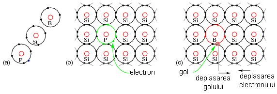
- Impuritatea acceptoare de tip P
De asemenea, este posibilă introducerea unei purităţi cu trei electroni în stratul de valenţă, adică un electron în minus faţă siliciu. Acest lucru duce la formarea unui gol, un purtător de sarcină pozitivă. Atomul de bor (B), ce are trei electroni pe stratul de valentă, încearcă să realizeze patru legături covalente cu atomii de siliciu, iar pe parcursul acestui proces, cei trei electroni se vor deplasa încercând să formeze aceste legături (figura de mai sus (c)). Acesta lucru duce la impresia că golul se deplasează. Mai mult, atomul trivalent de bor poate împrumuta un electron de la un atom de siliciu adiacent (sau distant) pentru formarea celor patru legături covalente. Dar acest lucru înseamnă ca atomul de siliciu are un deficit de un electron. Cu alte cuvinte, golul s-a „deplasat” pe un atom de siliciu vecin. Golurile se regăsesc în banda de valenţă, cu un nivel mai jos decât banda de conducţie. Doparea cu un acceptor - un atom ce poate accepta un electron - crează o deficienţă de electroni în structura materialului, sau un exces de goluri (cele două exprimări sunt echivalente). Din moment ce golurile sunt purtători de sarcină pozitivă, un dopant acceptor de electroni poartă numele de „dopant de tip P. Elementele dopante de tip P includ elementele din grupa IIIA a tebelului periodic: B (bor), Al (aluminiu), Ga (galiu) şi In (indiu). Borul este folosit pe post de dopant pentru siliciu şi diamant, iar indiul pentru germaniu.
- Deplasarea electronilor şi a golurilor
Există o strânsă legătură, în analogia „mărgelelor dintr-un tub”, între deplasarea golurilor şi deplasarea electronilor. Mărgelele reprezintă electronii dintr-un conductor. Deplasarea electronilor de la stânga la dreapta într-un semiconductor de tip N se poate explica asfel: electronul intră în tub prin partea stângă şi iese prin partea dreaptă. Deplasarea electronilor de tip N are loc în banda de conducţie. Putem compara această deplasare cu deplasarea golurilor în banda de valenţă.

Figure 26: analogia mărgelelor dintr-un tub pentru deplasarea electronilor şi a golurilor
Ceea ce trebuie înţeles este că electroni se deplasează în direcţia contrare de deplasare a golurilor. Golurile nu sunt altceva decât absenţa electronilor din banda de valenţă, având prin urmare o sarcină pozitivă, sarcină datorată prezenţei protonilor din nucleu, şi de fapt aceasta este sarcina „imaginară” pe care o reprezentăm cu ajutorul golurilor.
Deplasarea electronilor (curent) într-un semiconductor de tip N este similară deplasării electronilor dintr-un conductor metalic. Atomii materialului dopant de tip N furnizează electroni pentru conducţie. Aceşti electroni poartă numele de purtători de sarcină majoritari. Dacă aplicăm un câmp electric între două puncte ale unui material semiconductor, electronii intră prin partea negativă (-) a materialului, traversează structura acestuia şi ies prin partea dreaptă (+), terminalul pozitiv al bateriei.
tip N; (b) (a) deplasarea electronilor într-un material semiconductor de
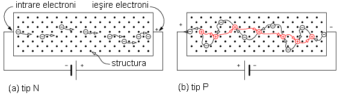
Figure 27: tip P
Sumar:
- Materialele semiconductoare pure, cu un procent de 1 parte la 10 miliarde, nu sunt bune conductoare
- Materialele semiconductoare de tip N sunt dopate cu o impuritate petavalentă pentru crearea electronilor liber. Un asfel de material este conductor, iar purtătorii de sarcină majoritari sunt în acest caz electronii
- Materialele semiconductoare de tip P sunt dopate cu o impuritate trivalentă şi duce la crearea unei abundenţe de goluri în structura semiconductorului. Un asfel de material este conductor, iar purtătorii de sarcină majoritari sunt în acest caz golurile
2.5 Joncţiunea P-N
Dacă un bloc de material semiconductor de tip P este adus în contact cu un bloc de material semiconductor de tip N (figura de mai jos (a)), rezultatul este nesatisfăcător. Vom avea două blocuri conductoare aflate în contact unul cu celălalt, dar fără proprietăţi unice. Problema constă în existenţă a două corpuri cristaline distincte şi separate. Numărul de electroni este echilibrate de numărul de electroni în ambele blocuri. Asfel, niciunl dintre cele două blocuri nu are o sarcină netă.
Totuşi daca un singur cristal semiconductor este confecţionat (dopat) cu un material de tip P la un capăt, şi un material de tip N la celălalt capăt, combinaţia respectivă prezintă unele proprietăţi unice. În materialul de tip P, majoritatea purtătorilor de sarcină sunt goluri, aceştia putându-se deplasa liberi prin structura cristalului. În materialul de tip N majoritatea purtătorilor de sarcină sunt electroni, şi aceştia putându-se deplasa liberi prin structura cristalului. În jurul joncţiunii însă (intersecţia dintre cele două tipuri de materiale), electronii materialului N trec peste joncţione şi se combină cu golurile din materialul P (figura de jos, (b)). Regiunea materialului P din apropierea joncţiunii capătă o sarcină nagativă datorită electronilor atraşi, iar Regiunea materialului N din apropierea joncţiunii capătă o sarcină pozitivă datorită electronilor cedaţi. Stratul subţire a acestei structuri cristaline, dintre cele două sarcini de semne contrare, va fi „golit” de majoritatea purtătorilor de sarcină, prin urmare, acesta este cunoscută sub numele de zona de golire, şi devine un material semiconductor pur, non-conductor. De fapt, aproape că avem un material izolator ce separă cele două regiuni conductive P şi N.
proprietate remarcabilă; (b) un singur cristal dopat atât cu impurităţi
P cât şi cu impurităţi N duce la formarea unei bariere de potenţial

Această separare de sarcini în jurul joncţiunii P-N (zona de golire) constituie în fapt o barieră de potenţial. Această barieră de potenţial trebuie să fie „învinsă” de o sursă de tensiune externă pentru a se putea comporta precum un material conductor. Formarea joncţiunii şi a barierei de potenţial are loc în timpul procesului de fabricaţie. „Înălţimea” barierei de potenţial depinde de materialele folosite pentru fabricarea acestuia. Joncţiunile PN din siliciu au o barieră de potenţial mai ridicată decât joncţiunile fabricate din germaniu.
- Polarizarea directă a joncţiunii PN
În figura de mai jos (a), bateria este poziţionată asfel încât electronii să se deplaseze dinspre terminalul negativ înspre materialul de tip N. Aceşti electroni se adună în jurul joncţiunii. Terminalul pozitiv înlătură electronii din materialul semiconductor de tip P, ceea ce duce la crearea golurilor ce se îndreaptă şi ele spre joncţiune. Dacă tensiunea bateriei este suficient de mare pentru a depăşi potenţialul joncţiunii (0.6 V în cazul siliciului), electronii materialului N şi golurile materialului P se combină şi se anihilează reciproc. Acest lucru duce la crearea unui spaţiu liber în structura materialului ce poate susţine o deplasare şi mai mare de purtători de sarcină spre joncţiune. Asfel, curenţii purtătorilor de sarcină majoritari de tip N (electroni) şi de tip P (goluri) se deplasează înspre joncţiune. Recombinaţia ce are loc la joncţiune permite curentului bateriei să se „deplaseze” prin joncţiunea PN a unei asfel de diode. În acest caz, spunem că o asfel de joncţiune este polarizată direct.
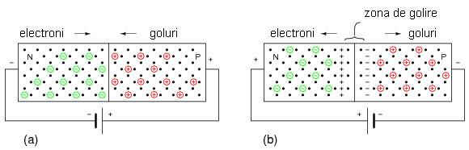
Figure 28: polarizarea directă a joncţiunii PN
- Polarizarea inversă a joncţiunii PN
Dacă polaritatea bateriei este inversată (figura de sus (b)), majoritatea purtătorilor de sarcină vor fi atraşi dinspre joncţiune spre terminalii bateriei. Terminalul pozitiv al bateriei atrage purtătorii de sarcină majoritari (electronii) ai materialului N, iar terminalu negativ al bateriei atrage purtătorii de sarcină majoritari (golurile) ai materialului P. Acest fapt duce la creşterea grosimii zonei de golire non-conductive. Nu are loc nicio recombinare a purtătorilor de sarcină, prin urmare, nu are loc nicio conducţie. În acest caz, spunem că joncţiunea PN este polarizată invers.
Ceea ce am creat mai sus prin doparea aceluiaşi cristal atât cu material de tip N cât şi cu material de tip P, este o diodă.
Sumar:
- Joncţiunile PN sunt fabricate dintr-o bucată monocristalină de material semiconductor şi conţin atât regiuni dopate cu materiale de tip P cât şi regiuni dopate cu materiale de tip N, regiuniu separate printr-o joncţiune
- Transferul electronilor de la materialul de tip N spre golurile materialului de tip P, produce o barieră de potenţial în jurul joncţiuni. Valoarea acesteia este de 0.6-0.7 V pentru siliciu, dar poate varia în cazul altor semiconductoare
- Joncţiunea PN polarizată direct, conduce curent electric
- Joncţiunea PN polarizată învers, nu conduce aproape deloc curent
2.6 Dioda
După cum am precizat şi în secţiunea precedentă, dioda este realizată prin introducerea de impurităţi de tip N şi P în acelaşi cristal semiconductor. Simbolul schematic al diodei este prezentat în figura de mai jos (b), şi corespune semiconductorului dopat de la (a). Dioda este un dispozitiv unidirecţional (vezi joncţiunea PN). Deplasarea electronilor se poate realiza doar într-o singură direcţie, învers faţă de direcţia săgeţii, atunci când dioda (joncţiunea PN) este polarizată direct. Catodul, din reprezentarea diodei, reprezintă semiconductorului de tip N, iar anodul corespune materialului dopat de tip P.

Figure 29: (a) joncţiunea PN; simbolul diodei; caracteristica curent-tensiune a diodei
Dacă dioda este polarizată direct, curentul creşte foarte puţin pe măsură ce tensiune creşte de la 0 V. În cazul în care materialul semiconductor din care este confecţionată dioda este siliciu, curentul începe să crească doar după ce tensiunea atinge valoarea de 0.6 V (figura de mai sus (c)). Dacă tensiunea creşte peste valoarea de 0.6 V, valoarea curentului creşte foarte repede. O tensiune peste 0.7 V poate foarte uşor să ducă la distrugerea diodei. Această tensiune de „deschidere” a diodei în jurul valorii de 0.6 V, poartă numele de tensiune de polarizare directă a diodei. Sub această valoare, dioda este „inchisă”, şi nu există curent pe la bornele acesteia. Deşi pentru siliciu tensiunea de polarizare directă este de 0.6-0.7 V, pentru germaniu aceasta este de 0. V, iar pentru LED-uri de câţiva volţi. Curentul ce străbate dioda la polarizarea directă poartă numele de curent direct, iar acesta poate lua valori curpinse între câţiva mA, până la sute sau mii de amperi pentru diodele de putere.
Dacă dioda este polarizată invers, curentul invers va avea o valoarea foarte mică, care în condiţiile cele mai extreme poate ajunge la un maxim de 1 µA (figura de mai sus (c), stânga). Valoarea acestui curent nu creşte semnificativ odată cu creşterea tensiunii de polarizare inversă, decât la atingerea punctului de străpungere. Când punctul de străpungere este atins, curentul prin diodă creşte la o valoare atât de mare, încât poate duce la distrugerea diodei dacă nu există un rezistor serie pentru limitarea curentului prin diodă. De obicei se alege o diodă a cărei tensiune de străpungere este mai mare decât valoarea tensiunilor aplicate la bornele sale. Diodele din siliciu au de obicei tensiuni de străpungere de la 50, 100, 200, 400, 800 V sau chiar mai mare.
Am menţionat mai sus că există un curent de dispersie de sub un µA, pentru diodele de siliciu, la polarizarea inversă. Explicaţia constă în faptul că energia termică produce câteva perechi de electroni-găuri, ce duc la apariţia unui curent de dispersie până la recombinaţie. Practic, acest curent previzibil este doar o parte a curentului de dispersie total. O mare parte a acestui curent se datorează conducţiei de suprafaţă datorită impurităţilor de la suprafaţa conductorului. Ambele tipuri de curenţi de dispersie cresc odată cu creşterea temperaturii. În cazul germaniului, curentul de dispersie este de câteva ori mai mare decât în cazul siliciului.
- Dioda cu joncţiune
Deşi la început, cea mai folosită diodă a fost diodă cu contact punctiform (figura de mai jos, (a)), majoritatea diodelor folosite astăzi sunt diode cu joncţiune (figura de mai jos (b)). Deşi joncţiunea PN din figură este puţin mai complexă decât o joncţiune normală, aceasta este tot o joncţiune PN. Pornind de la catod, N+ indică faptul că această regiune este dopată puternic, şi nu are legătură cu polaritatea. Acest lucru reduce rezistenţa serie a diodei. Regiunea N- din nou, nu are nicio legătură cu polaritatea, ci indică faptul că această regiune este mai puţin dopată, ceea ce duce la o diodă a cărei tensiune de străpungere inversă este mult mai mare, lucru important pentru diodele de putere folosite în rederesare.
(c) simbolul diodei; (d) modul de împachetare al unei diode

Diodele de puteri mai mici, chiar şi redresoarele de putere de tensiuni mai mic, vor avea pierderi de polarizare directă mult mai mici datorită dopajului mai puternic. Cel mai mare nivel de dopaj este folosit pentru diodele Zener, proiectate pentru tensiune de străpungeri mici. Totuşi, un dopaj puternic duce la creşterea curentului invers de disperise. Regiunea P+ de la anod, reprezintă un material semiconductor, puternic dopat, de tip P, o foarte bună strategie pentru realizarea contactului. Diodele de joncţine mici, încapsulate în sticlă, pot conduce curenţi de ordinul zecilor sau sutelor de mA. Diodele de putere redresoare, încapsulate în plastic sau ceramică, pot conduce curenţi de ordinul miilor de amperi.
Sumar:
2.7 Tranzistorul bipolar cu joncţiune (BJT)
Primul tranzistor bipolar a fost inventat la „Bell Labs” de către William Shockley, Walter Brattain, şi John Bardeen în 1948 (de fapt, 1947, dar invenţia a fost publicată doar în 1948). Pentru această descoperire, cei trei au fost recompensaţi cu premiul Nobel pentru fizică în anul 1956.
Tranzistorul bipolar cu joncţiune este un semiconductor format din trei straturi, două de tip N şi unul de tip P (NPN). Contactele celor trei straturi poartă numele de emitor şi colector pentru semiconductorii de tip N, şi bază pentru semiconductorul de tip P. Configuraţia este asemănătoare unei diode, doar că mai există un strat N în plus. Stratul din mijloc însă, baza, trebuie să fie cât mai subţire cu putinţă, fără a afecta suprafeţele celorlalte două straturi, emitorul şi colectorul.
Dispozitivul din figura de jos (a) este format din două joncţiuni, una între emitor şi bază, iar cealaltă între bază şi colector, aceste joncţiuni formând două zone de golire:
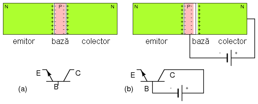
Figure 30: (a) tranzistor bipolar cu joncţiune NPN; (b) polarizarea inversă a joncţiunii bază-colector
În mod normal, joncţiunea bază-colector a tranzistorului este polarizată învers (figura de sus (b)). Acest lucru duce la creşterea regiunii de golire. Această tensiune poate fii de câţiva volţi până la zeci de volţi pentru majoritatea tranzistorilor. În acest caz, nu există curent în circuitul colectorul, exceptând curentul de dispersie de o valoarea foarte mică.
Putem adăuga o sursă de tensiune şi în circuitul emitor-bază al tranzistorului (figura de mai jos (a)). În mod normal, joncţiunea emitor-bază este polarizată direct, în încercarea de depăşire a barierei de potenţial de aproximativ 0.6 V. Acest lucru este similar polarizării directe a joncţiunii diodei. Tensiune acestei surse trebuie să depăşească valoarea de 0.6 V pentru ca majoritatea purtătorilor de sarcină (electroni pentru NPN) să treacă din emitor spre bază, devenind purtători de sarcină minoritari în semiconductorul de tip P.
Dacă regiunea bazei ar fi mult mai mare, ca în cazul poziţionării spate-în-spate a două diode, tot curentul ce intră în bază prin emitor, ar ieşi prin contactul bazei spre borna pozitivă a bateriei.
Totuşi, tranzistoarele sunt confecţionate cu o bază foarte subţire. O mică partă a purtătorilor de sarcină majoritari din emitor, injectăţi ca şi purtători de sarcină minoritari în bază, se recombină cu golurile acesteia(figura de jos (b)). De asemenea, o mică parte a electronilor ce intră în bază pe la emitor trec direct prin bază spre borna pozitivă a bateriei. Dar majoritatea curentului din emitor trec prin suprafaţă subţire a bazei direct în colector. Mai mult, modificarea curentului mic al bazei duce la modificări importante ale curentului din colector. Dacă tensiunea bazei scade sub aproximativ 0.6 V, curentul emitor-colector scade la zero.
joncţiunii colector-bază: (a) polarizarea directă a joncţiunii bază-emitor duce la (b) apariţia unui curent de bază mic şi a unui

Figure 31: curent emitor-colector mare
Să privim însă mai în deaproape la acest mecanism de amplificare al curentului (figura de jos). Considerăm o joncţiune NPN mărită, cu accentul pus pe bază. Chiar dacă nu sunt prezentate în figură, presupunem că joncţiunea emitor-bază este polarizată direct de o sursă de tensiune, iar joncţiunea bază-colector este polarizată invers. Electronii, purtătorii de sarcină majoritari, intră în emitor de la borna negativă a bateriei. Deplasarea electronilor dinspre bază corespunde cu deplasarea acestor dinspre bază spre borna pozitivă a bateriei. Acesta este un curent foarte mic faţă de curentul din emitor.
emitor: (a) pierduţi datorită recombinării cu golurile bazei; (b) se deplasează spre contactul bazei şi înspre borna pozitivă a sursei de aplimentare; (c) moajoritatea trec prin zona îngustă de golire bază-colector înspre colector; (d) electronii sunt atraşi de câmpul
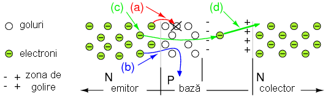
Figure 32: electric al zonei de golire înspre colector
Majoritatea purtătorilor de sarcină în emitorul de tip N sunt electronii, ce devin purtători de sarcină minoritară la intrarea în baza de tip P. Aceşti electroni au patru posibilităţi după ce intră în baza de tip P. O mică parte „cad” în goluri (figura de sus (a)), lucru ce contribuie la curentul înspre terminalul pozitiv al bateriei. Deşi nu este reprezentată pe figură, golurile pot trece din bază spre emitor, unde se recombină cu electronii, contribuind şi aceştia la curentul bazei. O altă mică parte din electroni (b) trec direct prin bază înspre terminalul pozitiv al bateriei, ca şi cum baza ar fi un rezistor. Atât (a) cât şi (b) contribuie curentului foarte mic al bazei. Curentul bazei este aproximativ 1% din curentul emitor-colector, pentru tranzistoarele mici. Majoritatea electronilor din emitor însă (c), trec direct prin zona îngustă de golire, înspre colector. Putem observa polaritatea zonei de golire ce înconjoară electronul (d). Câmpul electric intens „trage” electronul rapid în colector. Puterea câmpului electric este direct proporţională cu tensiunea de alimentare a bateriei. Asfel, 99% din curentul emitorului trece în colector. Această „trecere” este însă controlată de curentul bazei, ce reprezintă aproximativ 1% din curentul emitorului. Acest lucru reprezintă o amplificare de curent de 99, reprezentat de raportul dintre curentul colectorului şi curentul bazei (IC/IB), cunoscut şi ca β.
Difuzia electronilor emitorului prin bază şi înspre colector, este posibilă doar dacă baza este foarte subţire. Ce s-ar întâmpla cu aceşti purtători de sarcină dacă baza ar fi de 100 de ori mai groasă. Este foarte posibil ca majoritatea dintre ei, 99% in loc de 1%, să cadă în goluri, nemaiajungand la colector. Prin urmare, curentul de bază poate constrola 99% din curentul emitorului, doar dacă 99% din curentul emitorului trece înspre colector. Dacă întreg curentul iese pe la bază, controlul nu este posibil.
Un alt motiv pentru care 99% dintre electronii trec din emitor, peste bariera de potenţial şi în colector, este că joncţiunile bipolare reale folosesc un emitor mic dopat puternic. Concentraţia mare a electronilor din emitor forţează trecerea acestora în bază. Concentraţia mică a dopajului din bază înseamnă că există mult mai puţine goluri ce trec în emitor (lucru ce doar ar creşte curentul bazei). Difuzia purtătorilor de sarcină dintre emitor spre bază, este puternic favorizată.
Faptul că baza este subţire iar emitorul puternic dopat, ţin foarte sus eficienţa emitorului, 99% de exemplu. Acest lucru corespunde ramificaţiei curentului emitorului de 100% în 1% bază şi 99% colector. Eficienţă emitorului este cunoscută ca şi α = IC/IE.
- Joncţiunea PNP
Tranzistoarele bipolare pot fi confencţionate şi sub forma PNP. Diferenţa dintre PNP şi NPN poate fi văzută în figura de mai jos:

Figure 33: diferenţa dintre tranzistorul NPN (a) şi tranzistorul PNP (b)
Diferenţa constă în polaritea joncţiunilor bază-emitor, polaritatea semnalată cu ajutorul săgeţii emitorului în simbolul tranzistorului. Direcţia săgeţii este asemenea direcţiei anodului joncţiunii unei diode, împotriva sensului real de deplasare al electronilor. Pentru tranzistorii NPN, direcţia săgeţii este dinspre bază spre emitor, iar în cazul tranzistorilor PNP, direcţia este dinspre emitor spre bază. Colectorul nu este reprezentat în niciunul dintre cazuri cu ajutorul vreunei săgeţi. Totuşi, polaritatea joncţiunii bază-colector este aceeiaşi cu polaritatea joncţiunii bază-emitor în comparaţie cu o diodă.
- Structura
Emitorul tranzistorului bipolar cu joncţiune de mai jos este puternic dopat, după cum indică şi notaţia N+. Baza are un nivel de dopaj P normal, dar aceasta este mult mai subţire în realitate decât este prezentat în această figură (a).
(b) simbol; (c) secţiune transversală într-un circuit integrat

Procentul de dopaj al colectorului este scăzut, după cum indică notaţia N-, pentru ca tensiunea de străpungere a joncţiunii colector-bază să fie cât mai mare, ceea ce înseamnă că sursa de tensiune poate alimenta tranzistorul la tensiuni mai mari. Tranzistoarele de siliciu mici, au o tensiune de străpungere de 60-80 V, dar poate ajunge la sute de volţi pentru tranzistoarele de tensiune înaltă. Dar, colectorul trebuie să fie în acelaşi timp dopat puternic pentru minimizarea pierderilor ohmice (datorită rezistenţelor), în cazul în care tranzistorul trebuie să conducă curenţi mari. Îndeplinirea acestor cerinţeo contradictorii se realizează prin doparea mai puternică a colectorului spre partea de contact metalic, şi doparea mai uşoară a colectorului în apropierea bazei în comparaţie cu emitorul. Tensiunea de străpungere a joncţiunii emitor-bază scade până la aproximativ 7 V datorită dopării puternice a emitorului, în tranzistorii mici. Şi tot datorită acestei dopări puternice, joncţiunea emitor-bază se comportă precum o diodă Zener polarizată invers.
Fabricarea mai multor tranzistoare pe acelaşi cip dă naştere unui circuit integrat, o reprezentare aproximativă a acestuia este dată în figura de mai sus (c).
Calitatea tranzistorilor discreţi de tip PNP este aproape la fel de bună precum cea a tranzistorilor NPN. Totuşi, tranzistorii PNP integraţi nu sunt la fel de buni precum cei de tipul NPN, prin urmare, circuitele integrate folosesc tranzistori de tipul NPN în marea lor majoritate.
Sumar:
- Tranzistorii bipolari conduct curentul folosind ca purtători de sarcină atât electroni cât şi goluri în cadrul aceluiaşi circuit. De aici şi denumirea de „bipolar”
- Funcţionarea corectă a unui tranzistor bipolar ca şi amplificator de curent necesită polarizarea inversă a joncţiunii colector-bază şi polarizarea directă e joncţiunii emitor-bază
- Diferenţa dintre un tranzistor şi două diode montate cap-la-cap, constă în faptul că stratul de mijloc, baza, este foarte subţire. Acest lucru permite purtătorilor de sarcină majoritari din emitor (electronii) să treacă ca şi purtători de sarcină minoritari prin bază în zona de golire joncţiunii bază-colector, de unde câmpul electric foarte puternic îi „colectează” înspre colector
- Eficienţa emitorului este îmbunătăţite printr-un dopaj puternic faţă de dopajul colectorului. Eficienţa emitorului se exprimă prin α = IC/IE, iar valoarea acesteia este de 0.99 (sau 99%) pentru tranzistorii mici
- Amplificarea în curent a tranzistorului este exprimată prin relaţia β=IC/IB, iar valoarea ei este de la 100 la 300 pentru tranzistorii mici
2.8 Tranzistorul cu efect de câmp (JFET)
Tranzistorul cu efect de câmp a fost propus de Julius Liliendfel în 1926 şi 1933 sub formă de patent. Shockley, Brattain şi Bardeen au investigat şi e tranzistorul cu efect de câpm în 1947, dar dificultăţile întâmpinate în realizarea acestuia i-au dus în schimb la dezvoltarea tranzistorului bipolar. Teoria tranzistorului cu efect de câmp a lui Shockley a fost publicată în 1952, dar tehnologia de procesare a materialelor nu era sufificent de bine dezvoltată, asfel că doar în anul 1960 s-a reuşit fabricarea unui dispozitiv funcţional de către John Atalla.
Un tranzistor cu efect de câmp (FET - field effect transistor), este un dispozitiv unipolar, ceea ce înseamnă că existenţa curentului depinde de un singur tip de purtători de sarcină. Dacă dispozitivul se bazează pe un material semiconductor de tip N, purtătorii de sarcină sunt electroni. Invers, pentru unul de tip P, purtătorii de sarcină sunt golurile.
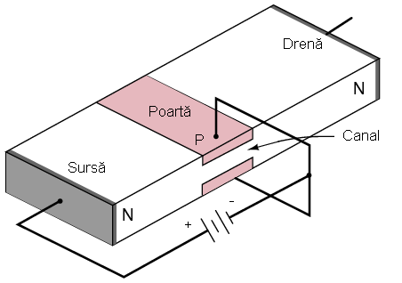
Figure 34: tranzistor cu efect de câmp cu joncţiune (JFET); secţiune transversală
La nivelul circuitului, funcţionarea tranzistorilor cu efect de câmp este simplă. O tensiune aplicată pe poartă, elementul de intrare, controlează rezistenţa unei regiuni unipolare dintre sursă şi drenă denumită canal; într-un dispozitiv de tip N, această regiune este reprezentată de un material semiconductor dopat de tip N-, cu terminale la ambele capete. Sursa şi drena sunt terminale echivalente cu emitorul şi colectorul într-un tranzistor bilpolar. Cu alte cuvinte, sursa este locul de plecare al purtătorilor de sarcină, iar drena este locul înspre care aceştia se deplasează. Poarta este echivalentă bazei tranzistorului bipolar, iar în cadrul unui dispozitiv de tip N, este reprezentată de o regiune de tip P+ (dopată puternic) prezentă pe ambele laturi şi în jurul canalului din centrul semicondcutorului.
Curăţenia este absolut necesară în cazul producerii tranzistorilor cu efect de câmp. Deşi este posibilă producerea tranzistorilor bipolari în afara unui spaţiu perfect curat, nu acelaşi lucru se poate spune şi despre cei cu efect de câmp. Tranzistorul cu efect de câmp este mult mai simplu din punct de vedere conceptual decât cel bipolar, dar este foarte greu de produs.
În figura de mai sus, este prezentat un tranzistor cu efect de câmp cu joncţiune (JFET). Poarta constituie o joncţiune, şi este polarizată invers pentru funcţionarea corectă a dispozitivului. Curentul dintre sursă şi drenă poate exista în ambele direcţii.
În figura de mai jos este reprezentată zona de golire a joncţiunii porţii, datorită difuziei golurilor din regiunea de tip P (poartă) în regiunea de tip N (canal). Această difuzie duce la separarea purtătorilor de sarcină în zona joncţiunii şi o zonă de golire non-conductivă la joncţiune.
(a) zona de golire a porţii; (b) creşterea zonei de golire la
polarizarea inversă; (c) zona de golire creşte tot mai mult cu creşterea
tensiunii de polarizare inversă; (d) blocarea canalului sursă-drenă
(S-D) datorită creşterii tensiunii de polarizare inversă

Grosimea zonei de golire poate fi crescută prin aplicarea unei tensiuni moderate de polarizare inversă (figura de mai sus(b)). Acest lucru duce la creşterea rezistenţei canalului sursă-drenă prin îngustarea acestuia. Creşterea în continuare a tensiunii de polarizare inversă duce la creşterea zonei de golire, scăderea grosimii canalului şi creşterea rezistenţei acestuia (c). Peste un anumit nivel (d), tensiunea de polarizare inversă, VGS va bloca curentul prin canal, rezistenţa acestuia fiind foarte mare. Tensiunea de blocare, VP este de câţiva volţi în majoritatea cazurilor. Pe scurt, rezistenţa canalului sursă-drenă poate fi controlat cu ajutorul valorii de polarizarea inversă a porţii.
Sursa şi drena sunt interschimbabile, ceea ce înseamnă că există posibilitatea deplasării electronilor în oricare dintre direcţii pentru o tensiune mică a bateriei drenei (0.6 V). Cu alte cuvinte, bateria drenei poate fi înlocuită cu o sursă de tensiune scăzută în curent alternativ. Pentru valori mai mari a tensiunii drenei, de ordinul zecilor de volţi pentru dispozitive mici, polaritatea alimentării este cea prezentată în figura de mai jos (a). Atenţie, în unele cărţi de specialitate, poarta (P) mai este denumită şi grilă (G), sau cele două notaţii sunt folosite chiar concomitent. Am ales în această carte să rămânem la denumirea de poartă, iar aceasta este notată corespunzător pe desene cu P. În orice caz, cele două exprimări sunt echivalente.
tip N: (a) secţiune transversală; (b) simbolul schematic

Această sursă de tensiune a drenei, ce nu este prezentă în figurile precedente, distorsionează zona de golre, mărind-o înspre partea drenei. Aceasta este o reprezentare mult mai corectă o tensiunilor de curent continuu ale drenei, de la câţiva volţi la zeci de volţi. Pe măsură ce tensiunea drenă-sursă (UDS) creşte, zona de golire dinspre drenă creşte spre această. Acest lucru duce şi la creşterea lungimii canalului, cu efecte asupra rezistenţei (creşte) acestuia. Totuşi, această creştere a rezistenţei datorată creşterii lungimii canalului este foarte mică în comparaţie cu rezistenţa datorată polarizării inverse a porţii. În figura de mai sus (b) este prezentat şi simbolul schematic al unui tranzistor cu efect de câmp cu canal de tip N. Săgeata porţii indică aceeiaşi direcţia ca şi joncţiunea diodei, şi corespunde regiunii de tip P. Celelalte două extremităţi (S şi D), ce nu conţin nicio direcţie, corespund materialului semiconductor de tip N.
În figura de mai sus este reprezentată şi direcţia curentului de la terminalul (-) a bateriei spre sursă (S), apoi spre drenă (D) şi înspre terminalul (+) al bateriei. Acest curent poate fi controlat prin variaţia tensiunii de polarizare înversă a porţii (P). O sarcină conectată în serie cu bateria „vede” o versiune amplificată a variaţiei tensiunii de pe poartă.
- Tranzistorul cu efect de câmp cu canal de tip P
Tranzistoarele cu efect de câmp pot fi realizate şi cu canal de tip P, ceea ce înseamnă ca poarta este realizată dintr-un material semiconductor dopat de tip N+ (dopat puternic). Toate sursele de tensiune sunt inversate într-un circuit cu JFET de tip P faţa de cel cu canal de tip N (figura de mai jos (a)). Săgeata în acest caz este îndreptată dinspre poartă înspre sursa de polarizare inversă (figura de mai jos (b)).
surselor de alimentare sunt inversată faţă de tranzistorul cu canal de tip N; (b) simbolul schematic - direcţia săgeţii porţii este inversată 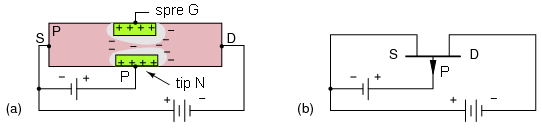
Modul de funcţionare este asemănător tranzistorului cu efect de câmp cu canal de tip N prezentat mai sus.
- Modul de confecţionare
Dispozitivele discrete sunt confecţionate conform figurii de mai jos (a), iar circuitele integrate cu tranzistoare cu efect de câmp, sunt confecţionate conform figurii de mai jos (b). Poarta este dopată puternic, P+, pentru obţinerea unei zone de golire cât mai mari. Sursa şi drena acestui dispozitiv de tip N sunt şi ele dopate puternic, N+, pentru obţinerea unei rezistenţe de conexiune cât mai mici. Totuşi, canalului din jurul porţii este dopat uşor, N-, pentru a permiter trecerea golurilor dinspre poartă înspre canal.
transversală printr-un dispozitiv discret; (b) simbolul schematic; (c)

Figure 35: secţiune transversală printr-un circuit integrat
Sumar:
- Conducţia canalului unui tranzistor (unipolar) cu efect de câmp (FET sau JFET) se datorează unui singur tip de purtător de sarcină
- Sursa, poarta şi drena unui JFET corespund emitorului, bazei şi colectorului unui tranzistor bipolar
- Polarizarea inversă a porţii duce la variaţia rezistenţei canalului prin extinderea zonei de golire
2.9 Tranzistorul cu efect de câmp cu poartă izolată (MOSFET)
Tranzistorul cu efect de câmp cu poartă izolată (IGFET), cunoscut şi sub numele de „tranzistor cu efect de câmp cu metal oxid” (MOSFET), este un dispozitiv derivat al tranzistorului cu efect de câmp (FET). În prezent, majoritatea tranzistorilor folosiţi în circuitele integrate sunt de acest tip, cu toate că tranzistorii bipolari cu joncţiune (BJT) discreţi sunt mult mai numeroşi decât dispozitivele discrete de tip MOSFET. Numărul de tranzistori MOSFET dintr-un circuit integrat poate ajunge la cateva sute de milioane. Dimensiunea unui MOSFET individual este sub un micron.
Sursa, poarta şi drena sunt asemănătoare cu cele de la FET-uri. Totuşi, contactul porţii nu realizează o conexiune directă cu materialul semiconductor, cum era cazul FET-urilor. Poarta unui MOSFET reprezintă un strat metalic sau de polisiliciu aşezat peste un strat de dioxid de siliciu (SiO2) izolator. Poarta seamănă foarte mult cu un condensator de tip MOS (figura de mai jos).
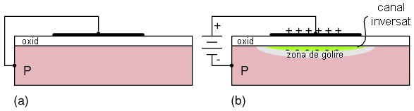
Figure 36: codensator MOS cu canal de tip N: (a) nepolarizat; (b) polarizat
La polarizare, polaritatea armăturilor condensatorului va deveni cea a terminalilor bateriei. Armătura inferioară, de tip P formează un canal inversat datorită excesului de electroni din apropierea oxidului format prin respingerea electronilor terminalului negativ al bateriei înspre oxid şi atragerea acestora spre armătura pozitivă. Acest canal duce şi la formare unei zone de golire ce izolează canalul de restul substratului de siliciu.
În figura de mai jos, un condenstor de tip MOS este plasat între o pereche de material semiconductor de tip N aflată într-un substrat de tip P. Când nu există sarcină pe condensator (a), poarta nu este polarizată, iar sursa, drena şi cele două regiuni de tip N rămân izolate din punct de vedere electric.
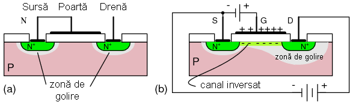
Figure 37: MOSFET cu canal N: (a) poartă nepolarizată; (b) polarizarea directă a porţii
Aplicarea unei polarizări directe duce la încărcarea condensatorului (porţii) (figura de mai sus (b)). Poarta de deasupra stratului de oxid se încarcă pozitiv de la baterie. Substratul de tip P de sub poartă se încarcă negativ. Sub poarta oxidului se va forma o regiune inversată cu un exces de electroni. Această regiune conectează sursa şi drena de tip N, formând o regiune continuă de tip N între cele două. Asfel, MOSFET-ul, ca şi FET-ul, este un dispozitiv unipolar. Doar un singur tip de purtător de sarcină este responsabil pentru conducţie. Exemplul de mai sus este un MOSFET cu canat de tip N. Conducţia unui curent mare este posibilă prin aplicarea unei tensiuni între sursă şi drenă. Un circuit practic ar avea conectată o sarcină în serie cu bateria drenei.
MOSFET-ul, ca şi FET-ul, este un dispozitiv controlat în tensiune. O tensiune aplicată porţii controlează curentul dinspre sursă spre drenă. Poarta nu necesită un curent permanent, ci are nevoie doar de un curent iniţial pentru încărcarea condensatorului porţii.
- Modul de confecţionare
Secţiunea transversală a unui MOSFET de tip N este prezentată în figura de mai jos (a). Sursa şi drena sunt dopate puternic, N+, pentru reducerea pierderilor rezistive datorită curenţilor dinspre sursă spre drenă. N- indică o regiune cu dopaj scăzut. Regiunea P de sub poartă, aflată între sursă şi drenă, poate fi inversată prin aplicarea unei tensiuni de polarizare directă. Simbolul MOSFET-ului este reprezentat în figura de mai jos (b).
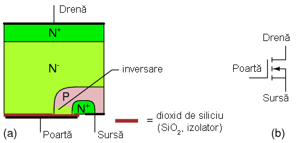
Figure 38: MOSFET cu canal N: (a) secţiune transversală; (b) simbolul schematic
MOSFET-urile sunt dispozitive cu patru terminale: sursă, poartă, drenă şi substrat. Substratul este conectat la sursă în cazul MOSFET-urilor discrete, asfel încât dispozitivul final are doar trei terminale. MOSFET-urile realizate într-un circuit integrat au un substrat comun tuturor dispozitivelor. Această conexiune comună se regăseşte de obicei la ieşirea cipului şi se conectează la împământare sau la o sursă de tensiune.
O altă variantă a MOSFET-ului, V-MOS, este de fapt un MOSFET de putere îmbunătăţit, şi este prezentat în figura de mai jos. O altă variantă, similară, U-MOS, este mult mai uşor de produs.

Figure 39: V-MOS cu canal N: (a) secţiune transversală; (b) simbolul schematic
Sumar:
- MOSFET-urile sunt dispozitive unipolare, precum FET-urile sau BJT-urile
- MOSFET-ul este un dispozitiv controlat în tensiune, precum FET-ul. O tensiune de intrare pe poartă controlează curentul dinspre sursă spre drenă
- Poarta MOSFET-ului nu necesită prezenţa unui curent în timpul funcţionării, ci doar prezenţa unui curent iniţial pentru încărcarea „condensatorului”
2.10 Tiristorul
Tiristoarele reprezintă o plajă largă de dispozitive semiconductoare bipolare folosind patru (sau mai multe) straturi alternante N-P-N-P. În categoria tiristoarelor intră: redresoare controlate pe bază de siliciu (SCR), TRIAC-uri, DIAC-uri, tiristoare tip GTO, tranzistoare uni-joncţiunie (UJT), tranzistoare uni-joncţiune programabile (PUT). Vom analiza aici doar SCR-ul, deşi vom menţiona şi GTO-ul.
Tiristorul cu patru straturi a fost propus de Shockley în 1950, deşi practic, acesta a fost construi mulţi ani mai târziu de către General Electric. Puterile suportate de SCR ajung până la ordinul MW.
Redresorul controlat pe bază de siliciu este o diodă cu patru straturi şi o poartă, asemenea figurii de mai jos (a):
modul de dopare al straturilor; (b) circuit cu tranzistoare bipolare cu

Figure 40: joncţiune echivalent
Dacă este „pornit”, acesta se comportă precum o diodă, pentru o singură polaritate a curentului. Dacă nu este „pornit”, nu conduce curent. Modul de funcţionare poate fi exmplicat cu ajutorul conexiunii echivalente realizate din tranzistoare bipolare cu joncţiune din figura de mai sus (b). Un semnal de pornire pozitiv este aplicat între poartă şi catod. Tranzistorul NPN echivalent va începe să conducă curent ceea ce va duce şi la declanşarea conducţiei tranzistorului PNP. În acest moment, tranzistorul NPN va conduce curent chiar şi în absenţa semnalului pe poartă, Odată ce un dispozitiv SCR începe să conducă, o va face atâta timp cât este prezentă o tensiune pe anod (infinit, în cazul circuitului cu baterie de mai sus).
- Modul de confencţionare
Catodul unui SCR, ce corespunde emitorului echivalent al tranzistorului NPN este puternic dopat, N+. Anodul, ce corespunde emitorului echivlanet al tranzistorului PNP, este şi el puternic dopat, P+. Celelalte două regiuni din mijloc, ce corespund bazei şi colectorului tranzistoarelor echivalente, sunt dopate mai uşor, N- şi P (figura de mai jos (a)). Simbolurile tiristoarelor SCR şi GTO sunt prezentate de asemenea în figura de mai jos ((b) respectiv (c)).
al redresorului controlat pe bază de siliciu (SCR) (c) simbolul

Figure 41: tiristorului de tip GTO
Sumar:
- SCR sunt cele mai des întâlnite dispozitive din familia tiristoarelor
- „Pornirea” conducţiei SCR-ului se realizează prin aplicarea unui impuls pozitiv porţii. Conducţia continuă chiar şi după ce impulsul asupra porţii încetează. Conducţia poate fi oprită doar dacă tensiunea dintre anod şi catod atinge valoarea zero
- SCR sunt folosite de obicei cu surse de tensiune de curent alternativ (sau de curent continuu pulsatorii) datorită conducţiei continue
- Un dispozitiv GTO poate fi oprit prin aplicarea unui puls negativ asupra porţii
3 Dioda
3.1 Principiul de funcţionare
Dioda este un dispozitiv electric ce permite trecerea curentului doar într-o singură direcţie. Cea mai folosită diodă în circuitele electrice este cea semiconductoare, deşi există şi alte tehnologii (vezi fizica dispozitivelor semiconductoare!). Simbolul diodelor semiconductoare este prezentat în figura de mai jos (săgeţile indică deplasarea reală a electronilor prin diodă):
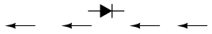
Figure 42: simbolul schematic al diodei semiconductoare: săgeţile indică direcţia de deplasare a electronilor
La conectarea într-un circuit simplu, format dintr-o baterie şi o lampă, dioda fie va permite trecerea curentului spre lampă, fie o va bloca, în funcţie de polaritatea tensiunii aplicate.
diodei - trecerea curentului este permisă; (b) dioda este polarizată

Figure 43: invers - trecerea curentului este blocată
Atunci când polaritatea bateriei este asfel încât este permisă trecerea electronilor prin diodă, spunem că dioda este polarizată direct. Invers, când trecerea electronilor este blocată datorită inversării bateriei, spunem că dioda este polarizată invers. Putem să ne gândim la diodă ca la un întrerupător: „închisă”, când este polarizată şî „deschisă” când este polarizată invers.
Comportamentul diodei este analog comportamentului dispozitivului hidraulic denumit supapă de închidere. O supapă de închidere permite trecerea fluidului doar într-o singură direcţie:
(a) supapa este deschisă şi permite trecerea fluidului; (b) supapa este

Figure 44: blocată şi nu permite trecerea fluidului
Supapele de închidere sunt de fapt dispozitive controlate cu ajutorul presiunii: acestea se deschid şi permit trecerea fluidului dacă „polaritatea” presiunii pe suprafaţă lor este corectă. Dacă „polaritatea” presiunii este de sens contrar, diferenţa de presiune pe suprafaţa valvei va duce la închiderea acesteia, iar curgerea fluidului nu mai este posibilă.
Acelaşi lucru este valabil şi în cazul diodelor, doar ca în acest caz presiunea este reprezentată de tensiune. Să reluăm circuitul de mai sus, dar folosind de această dată un aparat de măsură pentru determinarea căderilor de tensiune pe diferite componente ale circuitului.
diodă: (a) polarizarea directă a diodei; (b) polarizarea inversă a
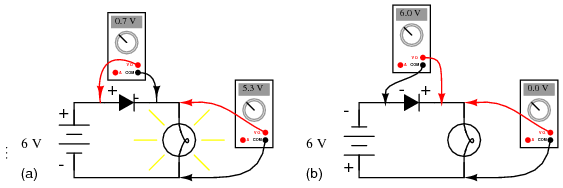
Figure 45: diodei
O diodă polarizată direct conduce curent şi prezintă o cădere mică de tensiune la bornele sale, asfel încât majoritatea tensiunii disponibile la bornele sursei de alimentare se regăseşte pe lampă (sarcină). Dacă polaritatea bateriei este inversată, dioda devine polarizată invers, şi toată tensiunea disponibilă la bornele sursei de alimentare se regăseşte pe diodă, iar căderea de tensiune pe sarcină va fi egală cu zero. Putem considera dioda ca fiind un întrerupător „automat” (se închide când este polarizat direct şi se deschide când este polarizat invers). Singura diferenţă notabilă este căderea de tensiune mult mai mare la bornele diodei (0.7 V), faţa de căderea de tensiune pe un întrerupător mecanic (câţiva mV).
Această cădere de tensiune de polarizare directă se datorează acţiunii zonei de golire formată de joncţiunea P-N sub influenţa tensiunii aplicate. Dacă nu există nicio tensiune aplicată la bornele diodei semiconductoare, eixstenţa zonei de golire înguste în jurul joncţiunii P-N previne apariţia curentului (figura de mai jos (a)). Purtătorii de sarcină aproape că lipsesc în zona de golire, şi prin urmare aceasta se comportă precum un izolator.

Figure 46: reprezentarea diodei: (a) joncţiunea P-N; (b) simbolul schematic; (c) aspectul real al diodei
Dacă dioda este polarizată invers, zona de golire se extinde şi blochează şi mai bine trecerea curentului prin dispozitiv.
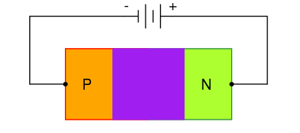
Figure 47: polarizarea inversă a diodei duce la creşterea zonei de golire şi la blocarea acesteia
Dacă dioda este polarizată direct însă, zona de golire devine mult mai subţire (figura de mai jos (a), polarizare parţială), iar rezistenţa faţă de curent scade. Pentru funcţionarea corectă a diodei însă, zona de golire trebuie să dispară complet. Acest lucru se poate realiza prin aplicarea unei anumite tensiuni minime, denumită tensiune de polarizare directă (figura de mai jos (b)), care pentru diodele de siliciu este în mod normal 0.7 V, iar pentru cele de germaniu de doar 0.3 V.

Figure 48: polarizarea directă a diodei: (a) parţială; (b) completă
Căderea de tensiune la bornele diodei rămâne aproximativ constantă pentru o gamă largă de curenţi prin diodă. Pentru analiza circuitelor electronice simplificate, putem considera căderea de tensiune pe diodă ca fiind constantă (nu depinde de valoarea curentului prin diodă).
Ecuaţia exactă ce descrie curentul printr-o diodă poartă numele de ecuaţia diodei:

Figure 49: ecuaţia diodei
Termenul q/KT descrie tensiunea produsă în joncţiunea P-N datorită acţiunii temperaturii, şi poartă numele de tensiune termică, sau Vt. La temperatura camerei, această temperatură este de aproximativ 26 mV. Cunoscând acest fapt, şi considerând factorul de idealitate ca fiind 1, putem simplifica ecuaţia de mai sus şi să ajungem la următoarea relaţie:
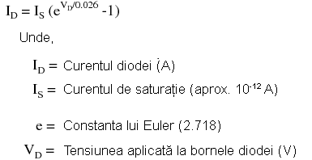
Figure 50: ecuaţia diodei simplificată
Această ecuaţie nu trebuie neapărat luată în considerare la analiza circuitelor simple cu diode, ci este menţionată aici doar pentru a înţelege faptul că există o variaţie a căderii de tensiune la bornele diodei pentru diferite valori ale curenţilor prin diodă. Această variaţie este foarte mică, aceasta fiind şi motivul pentru care se consideră că, la bornele diodei, căderea de tensiune rămâne constantă la 0.7 (siliciu) sau 0.3 V (germaniu). Totuşi, unele circuite folosesc în mod intenţionat relaţia curent/tensiune a joncţiunii P-N, şi ele pot fi înţelese doar în contextul acestei ecuaţii. De asemenea, din moment ce temperatura este un factor în ecuaţia diodei, o joncţiune P-N polarizată direct poate fi folosită ca un dispozitiv de determinare a temperaturii, iar această utilizarea poate fi înţeleasă doar dacă înţelegem în primul rând ecuaţia diodei de mai sus.
Deşi o diodă polarizată invers, nu permite curentului să treacă prin ea datorită extinderii zonei de golire, în realitate există un mic curent de scurgere ce trece prin diodă chiar şi la polarizarea inversă, iar acest curent poartă numele de curent invers. Curentul invers poate fi însă ignorat pentru majoritatea aplicaţiilor. Dioda nu poate suporta o tensiune de polarizare inversă infinit de mare. Dacă această tensiune devine prea mare, dioda va fi distrusă datorită unei condiţii denumită străpungere. Această tensiune inversă maximă poartă numele de tensiune de străpungere (inversă), notată cu Vs. Tensiunea de străpungerea creşte odată cu creşterea temperaturii şi scade cu scăderea temperaturii - exact invers faţă de tensiunea de polarizare directă. Mai jos este prezentat graficul curent-tensiune al diodei:

Figure 51: graficul curent-tensiune al diodei
Sumar:
- Dioda este un component electric ce se comportă precum o valvă uni-direcţională de curent
- Spunem că dioda este polarizată direct atunci când aceasta permite trecerea curentului prin diodă
- Spuenm că dioda este polarizată invers atunci când trecerea curentului prin diodă este blocată
- Căderea de tensiune la bornele unei diode polarizate direct poartă numele de tensiune de polarizare directă, şi este de 0.7 V pentru diodele din siliciu şi 0.3 V pentru cele din germaniu. Această tensiune variază foarte puţin pentru diferite valori ale curentului şi temperaturii
- Tensiunea de polarizare inversă maximă pe care o poate suporta o diodă fără apariţia fenomenului de „străpungere” ce duce inevitabil la distrugerea acesteia, se numeşte tensiune de străpungere, Vs
3.2 Verificarea diodei cu ajutorul ohmmetrului
Din moment ce o diodă nu este nimic altceva decât o valvă uni-direcţională de curent, putem verifica acest lucru folosind un ohmmetru alimentat în curent continuu (cu baterie). La conectarea diodei într-o anumită direcţie, aparatul de măsură ar trebui să indice o rezistenţă foarte mică (figura de mai jos (a)), iar la conectarea inversă, aparatul ar trebui să indice o rezistenţă foarte mare (figura de mai jos (b)). („OL” reprezintă o valoarea prea mare ce nu poate fi indicată de aparatul de măsură (din engl. Over-Limit); în acest caz, putem considera rezistenţa ca fiind infinită).
măsură: (a) rezistenţa mică între anod şi catod indică polarizarea
directă a diodei; (b) inversarea sondelor aparatului de măsură duce la
polarizarea inversă a diodei, indicată de rezistenţa foarte mare
(infinită) 
Desigur, determinarea polarităţii diodei (care terminal este anodul şi care catodul) necesită ca în primul rând să cunoaştem care din sondele aparatului de măsură este cea pozitivă (+) şi care sondă este cea negativă (-), atunci când aparatul este trecut pe funcţia „Ω”. La majoritatea multimetrelor digitale, sonda roşie reprezintă terminalul pozitiv iar sonda neagră reprezintă terminalul negativ, atunci când aparatul setat pe măsurarea rezistenţelor. Totuşi, acest lucru nu este valabil pentru toate multimetrele, existând posibilitatea ca sonda neagră să fie pozitivă (+) şi cea roşie negativă (-).
Problema folosirii unui ohmmetru pentru verificarea unei diode, este că indicaţia afişajului are doar valoare calitativă, nu şi cantitativă. Cu alte cuvinte, un ohmmetru poate doar să ne spune dacă dioda funcţionează (dacă aceasta conduce curent), dar valoarea rezistenţei obţinute din măsurătoare nu ne este de niciun folos. Dacă un ohmmetru indică o valoare de 1.73 Ω la polarizarea directă, această valoarea nu este folositoare unui tehnician sau celui care proiectează circuitul. Această valoare nu reprezintă nici căderea de tensiune la polarizarea directă şi nici rezistenţa materialului semiconductor din diodă, ci este o mărime dependentă de ambele cantităţi şi variază substanţial în funcţie de ohmmetrul folosit pentru efectuarea citirii.
Din acest motiv, unele multimetre digitale sunt prevăzute cu o funcţie specială de „verificare a diodei” ce indică tensiunea reală de polarizare directă a diodei, în volţi, în loc de o rezistenţă în ohmi. Principiul de funcţionare a acestor aparate de măsură constă în forţarea unui curent mic prin diodă şi măsurarea căderii de tensiune dintre cele două borne ale diodei.
folosind un multimetru digital echipat cu funcţia de verificare a

Figure 52: diodelor
Totuşi, valoarea tensiunii de polarizare directă indicată de aceste aparate va fi de obicei mai mică decât valoarea „normală” de 0.7 V, deoarece curent furnizat de aparatul de măsură prin diodă este foarte mic. Dacă nu avem la dispoziţie un multimetru cu funcţie de verificare a diodelor, sau dacă vrem să măsurăm tensiuena de polarizarea directă a diodei folosind un curent mai mare, putem realiza un circuit electric precum în figura de mai jos, folosind o baterie, un rezistor şi un voltmetru:
un aparat de măsură (voltmetru), o baterie şi un rezistor: (a) schema
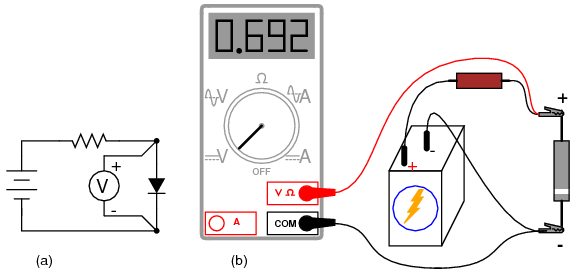
Figure 53: electrică; (b) schema practică
Sumar:
- Putem folosi un ohmmetru pentru verificarea calitativă a diodei. Rezistenţa măsurată într-o anumită direcţie ar trebui să fie foarte mică şi foarte mare când inversăm direcţia de măsurare. Atenţia la polaritatea sondelor aparatului de măsură!
- Unele multimetre digitale oferă o funcţie de „verificare a diodei” ce indică tensiunea de polarizare directă a diodei atunci când aceasta conduce curent. Asfel de aparate de măsură indică de obicei o tensiune de polarizare direcţa mai mică decât valoarea normală a unei diode, datorită curentului foarte mic generat de aparat prin diodă în timpul măsurătorii
3.3 Parametrii diodei
Pe lângă tensiunea de polarizare directă (Vf) şi tensiunea de străpungere (Vs), mai există mulţi alţi parametrii importanţi ai diodelor pentru proiectarea circuitelor şi alegerea componentelor. Producătorii de dispozitive semiconductoare oferă aceste specificaţii ale produselor în publicaţii denumite cataloage. Cataloagele producătorilor de componente pot fi găsite în cărţi de specialitate sau pe interne.
Pentru simplicarea explicaţiilor, am folosit în unele situaţii „tensiunea directă” în loc de „tensiunea de polarizare directă” sau „curentul direct” în loc de „curentul de polarizare direct”. Cele două exprimări sunt însă echivalente.
Principalele caracteristici ale diodelor, trecute în cataloage, sunt următoarele:
VRRM - tensiunea inversă repetitivă maximă, este tensiunea maximă inversă la care poate rezista dioda, atunci când această tensiune este atinsă în mod repetat. Ideal, această valoare ar fi infinită.
VR sau VDC - tensiunea maximă inversă de curent continuu, este valoarea maximă a tensiunii la care dioda poate funcţiona neîntrerupt, fără distrugerea acesteia. Ideal, această valoare a fi infinită.
VF - tensiunea (de polarizare) directă maximă, de obicei este specificată împreună cu valoarea curentului direct. Ideal, această valoare ar fi zero: ideal, dioda nu ar prezenta niciun fel de opoziţie în faţa deplasării electronilor. În realitate, tensiunea directă este descrisă de ecuaţia diodei.
IF(AV) - valoarea maximă (medie) a curentului direct, valoarea maximă medie a curentului pe care bobina o poate suportă la polarizarea directă. Această limitarea este practic o limitare termincă: câtă căldură poate „suporta” joncţiunea P-N, având în vedere că puterea disipată reprezintă produsul dintre curent şi tensiune, iar tensiunea de polarizare directă depinde atât de curent cât şi de temperatura joncţiunii. Ideal, această valoare ar fi infinită.
IFSM sau if(vârf) - curentul de polarizare directă maxim, reprezintă curentul de vârf maxim pe care dioda îl poate conduce la polarizare directă, fără ca aceast curent să ducă la distrugerea diodei. Din nou, această valoare este limitată de capacitatea termică a joncţiunii diodei, şi este de obicei mult mai mare decât valoarea curentului mediu datorită inerţiei termice. Ideal, această valoare ar fi infinită.
PD - puterea maximă disipată totală, reprezintă valoarea puterii (în watt) pe care dioda o poate disipa fără ca această putere să ducă la distrugerea diodei. Această valoare este limitată de capacitatea termică a diodei. Ideal, această valoare ar fi infinită.
TJ - temperatura de functionare a joncţiunii, reprezintă temperatura maximă admisă a joncţiunii P-N a diodei, valoare dată de obicei în ^{o}C. Căldura reprezintă punctul critic al dispozitivelor semiconductoare: acestea trebuie menţiunute la o temperatură cât mai apropiată de temperatura camerei pentru funcţionarea lor corectă şi o durată de funcţionare cât mai lungă.
TSTG - temperatura de depozitare, reprezintă valoarea temperaturii de stocare a diodelor (nepolarizate).
R(Θ) - rezistenţa termică, reprezintă diferenţa dintre temperatura joncţiunii şi temperatura aerului exteriori diodei (R(Θ)JA), sau dintre joncţiune şi contacte (R(Θ)JL), pentru o anumită putere disipată. Valoarea este exprimată în ^{o}C/W. Ideal, această valoare ar fi zero, ceea ce ar înseamna că învelişul (carcasa) diodei ar fi un conductor şi radiator termic perfect, fiind capabil să transfere energiea sub formă de căldură dinspre joncţiune spre mediul exterior (sau spre contacte) fără nicio diferenţă de temperatură existenţa în grosimea carcasei. O rezistenţă termică ridicată se traduce prin faptul că dioda va stoca o temperatură excesivă în jurul joncţiunii (punctul critic), în ciuda eforturilor susţinute de răcire a mediului exterior diodei; acest lucru duce la limitarea puterii maxime disipate.
IR - curentul maxim de polarizare inversă, reprezintă valoarea curentului prin diodă la polarizarea inversă şi aplicarea tensiunii de polarizare inversă maximă de curent continuu(VDC). Mai este cunoscut şi sub numele de curent de scăpări. Ideal, această valoare ar fi zero, deoarece o diodă perfectă ar bloca toţi curenţii atunci când este polarizată inversă. În realitate, această valoarea este mică în comparaţie cu valoarea curentului maxim de polarizare directă.
CJ - capacitatea tipică a joncţiunii, reprezintă capacitatea intrinsecă joncţiunii, datorită comportării zonei de golire precum un dielectric între anod şi catod. Această valoare este de obicei foarte mică, de ordinul picofarazilor (pF).
trr - timpul de revenire invers, reprezintă durata de timp necesară „stingerii” diodei atunci când tensiunea la bornele sale alternează între polarizare directă şi polarizare inversă. Ideal, această valoare ar fi zero: dioda se „stinge” imediat după inversarea polarităţii. Pentru o diodă redresoare tipică, timpul de revenire este de oridinul zecilor de microsecunde (ms); pentru o diodă de comutaţie rapidă, acest timp poate ajunge la doar câteva nanosecunde (ns).
Majoritatea acestor parametrii variază cu temperatura sau alte condiţii de operare, prin urmare, o singură valoarea nu poate descrie complet niciun parametru. Prin urmare, producătorii pun la dispoziţie grafice ale variaţiilor parametrilor cu temperatura (sau alte variabile).
3.4 Circuite redresoare
Cea mai populară aplicaţia e diodelor este redresarea. Pe scurt, redresarea reprezintă transformarea curentului alternativ în curent continuu. Acest lucru implică folosirea unui dispozitiv ce permite trecerea electronilor doar într-o singură direcţie, iar dioda realizează tocmai acest lucru.
- Redresorul monoalternanţă
Cel mai simplu circuit de redresare îl reprezintă redresorul monoalternanţă. Acesta permite doar trecerea unei jumătăti a formei de undă de curent alternativ înspre sarcină:
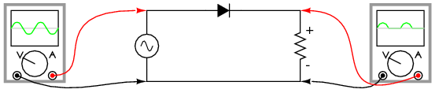
Figure 54: redresorul monoalternanţă
Pentru majoritatea aplicaţiilor de putere însă, redresarea monoalternanţă nu este suficientă. Conţinutul armonic al undei de ieşire este foarte mare şi prin urmare dificil de filtrat. Mai mult, sursa de tensiune alternativă este „văzută” de sursă doar odată la fiecare jumătate de perioadă, ceea ce înseamnă că mare parte din capacitatea sursei nu este folosită. Redresarea monoalternanţă este totuşi o modalitatea foarte uşoară de reducere a puterii generate pe o sarcină rezistive. Unele comutatoare cu rezistenţă reglabilă folosite la lămpi, aplică întreaga tensiune de curent continuu pe filamentul „lămpii” în poziţia „maxim”, şi doar o jumătate (folosind un redresor monoalternanţă) din tensiunea maximă disponibilă pe celalaltă poziţie, pentru o intensitate luminoasă mai scăzută:
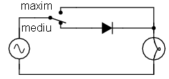
Figure 55: utilizarea redresorului monoalternanţă; comutator cu rezistenţă reglabilă cu două nivele
Când întrerupătorul este în poziţie mediu, lampa incandescentă primeşte aproximativ jumătate din puterea disponibilă la sursa de curent alternativ. Datorită faptului că forma de undă monoalternanţa pulsează mult mai rapid decât timpul necesar pentru încălzirea şi răcirea filamentului, lampa nu „clipeşte”, ci, filamentul ei pur şi simplu operează la o temperatură mai mică decât temperatura normală de funcţionare.
- Redresor dublă alternanţă cu punct median
Pentru redresarea şi folosirea ambelor alternanţe a undelor sinusoidale, avem nevoie de o altă configuraţie a circuitului redresor, şi anume, un redresor dublă alternanţă. Una dintre posibilităţi este realizarea redresorului cu punct median, folosind un transformator cu priză mediană pe înfăşurarea secundară şi două diode:
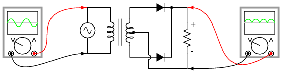
Figure 56: redresor dublă alternanţă cu punct median
Putem înţelege mult mai bine funcţionarea acestui redresor dacă luăm pe rând fiecare jumătate de perioadă (semi-perioadă). Să cosiderăm de exemplu prima jumătate a perioadei, când polaritatea tensiunii de alimentare este pozitivă (+) sus şi negativă (-) jos. În această situaţie, doar dioda de sus va conduce, iar dioda de jos este blocată. Sarcina „vede” prima jumătate a formei de undă sinusoidale, pozitiv sus şi negativ jos. Doar partea de sus a înfăşurării secundare a transformatorului conduce curent în acest caz:
jumătăţi a periodei tensiunii de alimentare alternative 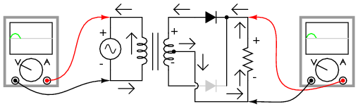
În a doua parte a perioadei, polaritatea tensiunii alternative se inversează. În acest caz, cealaltă diodă, cea de jos, şi cealaltă jumătate a secundarului transformatorului, vor conduce curent, iar celelalte porţiuni ale circuitului ce au fost active la pasul precedent, nu vor conduce curent. Sarcina „vede” şi în acest caz o jumătate de formă de undă sinusoidală, de aceeiaşi polaritate ca şi în cazul precedent: pozitiv în partea de sus şi negativ în partea de jos:
de a doua jumătăţi a periodei tensiunii de alimentare alternative 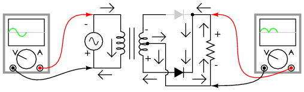
Un mare dezavantaj al acestei configuraţii este necesitatea folosirii unui transformator cu priză mediană pe înfăşurarea secundară. Dacă circuitul în cauză este un circuit de putere mare, mărimea şi costul unui asfel de transformator pot fi suficient de mari. Prin urmare, redresorul dublu alternanţa cu punct median este folosit doar în aplicaţiile de putere mică.
Polaritatea sarcinii poate fi inversată prin inversarea direcţiilor diodelor. Mai mult, diodele inversate pot fi conectate în paralel cu configuraţia pozitivă deja existentă. Rezultatul este un redresor dublă alternanţă cu polaritate dublă. Modul de conectare al diodelor este acelaşi ca şi la redresorul în punte.

Figure 57: redresor dublă alternanţă cu punct median cu polaritate dublă
- Redresor dublă alternanţă în punte
Probabil că cel mai popular redresor este cel dublă alternanţă în punte. Aceste utilizează patru diode conectate în punte:

Figure 58: Redresor dublă alternanţă în punte
Direcţia curentului pentru semi-perioadele pozitive este prezentată în figura de mai jos:

Figure 59: Redresor dublă alternanţă în punte; direcţia curentului pentru semi-perioadele pozitive
Direcţia curentului pentru semi-perioadele negative este prezentată în figura de mai jos:

Figure 60: Redresor dublă alternanţă în punte; direcţia curentului pentru semi-perioadele negative
Indiferent de polaritatea intrării, curentul prin sarcină are aceeiaşi direcţie de curegere. Cu alte cuvinte, o semi-perioadă negativă la sursă este o semi-perioadă pozitivă pe sarcină. Curgerea curentului are loc prin două diode serie, pentru ambele polarităti. Asfel, căderea de tensiune pierdută dinspre sursă spre sarcină datorită diodelor este dublă (0.7 · 2 = 1.4 V pentru Si) faţa de redresorul dubă alternanţă cu punct median. Acest dezavantaj reprezintă însă o problemă doar pentru sursele cu o tensiune de alimentarea foarte scăzută.
Modul corect de aşezare în punte al diodelor poate prezenta pentru începători unele dificultăţi. O reprezentare alternativa, dar echivalentă, a acestui circuit este mult mai uşor de ţinut minte şi de înţeles. Este exact acelaşi circuit, doar că toate diodele sunt poziţionate orizontal, şi toate indică în aceeiaşi direcţie:
- toate diodele sunt poziţionate orizontal şi indică aceeiaşi direcţie
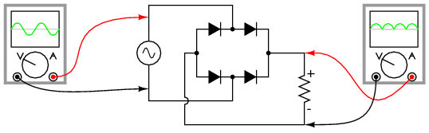
Un avantaj al acestei notaţii este că poate fi uşor aplicată unei versiuni trifazate a redresorului:
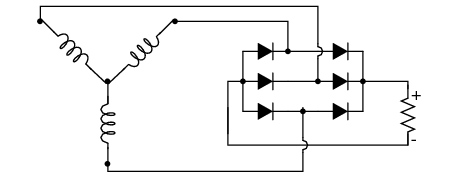
Figure 62: redresor trifazat dublă alternanţă în punte;
…sau oricărei configuraţii polifazate:

Figure 63: redresor cu 6 faze dublă alternanţă în punte;
- Forma de undă a tensiunii redresate
În cazul redresării unui circuit de curent alternativ polifazat, suprapunerea pulsurilor defazate produc o tensiune de curent continuu mult mai „netedă” (cu un conţinut mai mic de curent alternativ) decât cea produsă prin redresarea unei singure faze de curent alternativ. Acesta este un avantaj important în circuitele redresoare de putere, unde doar mărimea fizică a componentelor necesare pentru realizarea filtrării ar impune unele limite.

Figure 64: forma de undă de curent continuu redresată pentru o sursă de tensiune trifazată
Indiferent de tipul redresării - monofazată sau polifazată - cantitatea de tensiunea alternativă „amestecată” cu tensiunea de curent continuu de ieşire a redresorului, poartă numele de tensiune de riplu, sau simplu riplu. În majoritatea cazurilor, din moment ce la ieşire dorim o tensiune de curent continuu pură, riplul reprezintă o tensiune nedorită. Dacă puterile implicate nu sunt foarte mari, se pot folosi reţele de filtrare pentru reducerea riplului tensiunii de ieşire.
Câteodată, metoda rectificării este descrisă numărând „pulsurile” tensiunii de curent continuu pentru fiecare 360o electrice. Un redresor monofazat, monoalternanţă, este prin urmare un redresor cu un puls, deoarece produce un singur puls într-o perioadă completă (360o) a formei de undă alternative. Un redresaor monofazata, dublă alternanţă (indiferent dacă este cu punct median sau în punte), poate fi numit redresor cu două pulsuri, deoarece produce două pulsuri de tensiune continuă într-o perioadă a tensiunii de curent alternativ. Un redresor trifazat, dublă alternanţă poate fi denumit redresor cu şase pulsuri.
Notaţie 1Ph1W1P ?!?!?! – ro?!!?
Este posibilă obţinerea unui număru dublu de pulsuri faţă de numărul fazelor cu ajutorului unui redresor. Folosind transformatoare, putem conecta în paralel un set de redresoare dublă alternanţă în punte asfel încât să rezultă mai mult de 6 pulsuri de tensiune continuă pentru cele trei faze ale curentului alternativ. Se introduce un defazaj de 30o între primarul şi secundarul transformatorului trifazat atunci înfăşurările nu sunt de acelaşi tip. Cu alte cuvinte, un transformator în configuraţie Y-Δ (stea-triunghi) sau Δ-Y (triunghi-stea), va prezenta acest defazaj de 30o, dar nu şi un transformator în configuraţie Y-Y sau Δ-Δ. Acest fenoment poate fi exploatat prin utlizarea unui transformator în configuraţie Y-Y conectat la un redresor în punte, iar un alt transformator în configuraţie Y-Δ conectat la un al doilea redresor în punte; cele două punţi redresoare le conectăm apoi în parelel. Din moment de tensiunea de riplu dintre cele două redresoare este defazată cu 30o, tensiunea de riplu rezultată prin superpoziţia lor va fi mai mică decât tensiunea de riplu luată individual pentru cele două redresoare: 12 pulsuri pentru o perioadă (360o) în loc de 6.
punte conectate în paralel, folosind un transformator primar şi două

Figure 65: secundare în configuraţie Y-Y, respectiv Y-Δ
Sumar:
- Redresarea este transformarea curentului alternativ în curent continuu
- Un redresor monoalternanţa este un circuit ce permite aplicarea doar a unei semiperioade (o jumătate de perioadă) a tensiunii de curent alternativ asupra sarcinii, rezultând într-o polaritate non-alternantă a căderii de tensiune a sarcinii. Tensiunea de curent continuu rezultată prezintă o „pulsaţie” semnificativă
- Un redresor dublă alternanţă este un circuit ce transformă întreaga perioadă (ambele semiperioade) a tensiunii de curent alternativ într-o serie de pulsuri neîntrerupte de tensiune de aceeiaşi polaritate. Tensiunea de curent continuu rezultată prezintă un număr mai mic de pulsuri
- Redresarea tensiunii de curent alternativ polifazate rezultă într-o formă de undă de curent continuu mult mai „netedă” (tensiune de riplu mult mai scăzută) decât redresarea tensiunii monofazate
3.5 Dioda Zener
La conectarea unei diode în serie cu un rezistor într-un circuit de curent continuu, asfel încât dioda să fie polarizată direct, căderea de tensiune la bornele diodei va rămâne aproximativ constantă pentru o plajă largă de tensiuni de alimentare (figura de mai jos (a).
Conforma ecuaţiei diodei, curentul printr-o joncţiune P-N polarizată direct este direct proporţională cu e ridicat la puterea tensiunii directe (tensiunea de polarizare directă). Deoarece ecuaţia este exponenţială, curentul creşte foarte repede pentru creşteri modeste ale căderii de tensiune. Cu alte cuvinte, căderea de tensiune la bornele unei diode polarizate direct variază foarte puţin pentru variaţi mari ale curentului prin diodă. În circuitul din figura de mai jos (a), curentul prin diodă este limitate de tensiunea sursei de alimentare, de rezistorul conectat în serie şi de căderea de tensiune la bornele diodei, care după câte ştim, nu se îndepărtează foarte mult de valoarea de 0.7 V. Dacă am fi să creştem tensiunea generată de sursă, căderea de tensiune pe rezistor ar creşte cu aproape aceeiaşi valoare, iar căderea de tensiune pe diodă ar creşte doar foarte puţin. Invers, o scădere a tensiunii generată de sursă, rezultă într-o descreştere aproape identică a căderii de tensiune pe rezistor şi doar într-o mică descreştere a căderii de tensiune pe diodă. Pe scurt, putem spune că dioda stabilizează tensiunea la valoarea de 0.7 V.
Stabilizarea tensiunii este o proprietatea foarte folositoare. Să presupunem că am construi un circuit, al cărei sarcini nu ar tolera variaţii ale tensiunii sursei de alimentare, dar că acest circuit trebuie să fie alimentat de o baterie, a cărei tensiune, după câte se ştie, variază pe durata sa de funcţionare. Am putea folosi în acest caz circuitul din figura de mai jos (a), iar circuitul în cauză să-l conectăm la bornele diodei, asfel încât tensiunea de alimentare a noului circuit să rămână stabilă la valoarea de 0.7 V.
Majoritatea circuitelor reale necesită însă o sursă de tensiune stabilizată cu o valoare de peste 0.7 V. O modalitate de creştere a tensiunii stabilizate este conectarea mai multor diode în serie, asfel încât tensiunile de polarizare directă să se însumeze. De exemplu, dacă am conecta zece diode în serie, valoarea tensiunii stabilizate ar fi de zece ori mai mare faţă de cazul precedent, adică 7 V.
diodă (0.7 V); (b) zece diode conectate în serie (7 V) 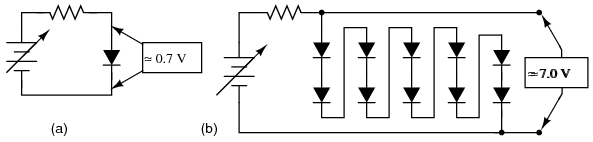
Atâta timp cât tensiunea bateriei nu scade sub 7 V, vor exista tot timpul 7 V (tensiune stabilizată) între bornele celor diode conectate în serie.
Dacă avem nevoie de tensiuni stabilizate şi mai mari, putem folosi şi mai multe diode în serie, sau putem încerca o altă complet diferită, folosindu-ne tot de diode. Ştim că tensiunea de polarizare a diodei este o valoare aproximativ constantă pentru o plajă largă de condiţii, dar acelaşi lucru este valabil şi pentru tensiune (inversă) de străpungere, iar valoarea acestei tensiuni de străpungere este de obicei mult mai mare decât tensiunea directă. Dacă inversăm polaritatea diodei în circuitul stabilizator de mai sus, şi creştem tensiunea sursei de alimentare până în punctul de străpungere al diodei, dioda va stabiliza şi în acest caz tensiunea la acel punct de străpungere, nepermiţând tensiunii să crească peste această valoare (figura de jos (a)).
siliciu este aproximativ 100 V; (b) simbolul diodei Zener

Din păcate, când diodele redresoare normale ating punctul de stăpungere, acest faptul duce şi la distrugerea acestora. Totuşi, se pot construi diode speciale ce pot suporta tensiunea de străpungere fără distrugerea completă a acestora. Acest tip de diodă poartă numele de diodă Zener, iar simbolul este cel din figura de sus (b).
La polarizarea directă, diodele Zener se comportă precum diodele redresoare standard: tensiunea direcţa are valoarea de 0.7 V, conform ecuaţiei diodei. La polarizarea inversă însă, acestea nu conduc curentul decât peste o anumită valoare a tensiunii de alimentare, valoare denumită tensiune Zener; după atingerea acestei valori, dioda Zener va putea să conducă un curent substanţil, dar va limita căderea de tensiune la bornele sale la acea tensiune zener. Atâta timp când puterea disipată sub formă de căldură nu depăşeşte limita termică a diodei, aceasta nu va fi afectată în niciun fel.
Diodele zener sunt confencţionate cu tensiuni zener de câţiva volţi până la sute de volţi. Tensiunea zener variază uşor cu temperatura, dar acestea pot fi folosite cu succes ca dispozitive de stabilizare a tensiunii datorită stabilităţii şi acurateţii lor în funcţionare.

Figure 66: circuit de stabilizare a tensiunii cu diodă zener; tensiunea zener este de 12.6 V
Observaţie! Orientarea diodei zener faţă de sursa de tensiune în circuit de mai sus, este asfel încât dioda să fie polarizată invers. Acesta este modul corect de conectare a diodelor zener în circuit! Dacă am fi să conectăm dioda zener invers, asfel încât să fie polarizată direct, aceasta s-ar comporta precum o diodă „normală”, iar tensiune de polarizare directă ar avea o valoare de doar 0.7 V.
Ca şi oricare dispozitiv semiconductor, dioda zener este sensibilă la temperatură. O temperatură excesivă poate duce la distrugerea diodei, asfel că va trebui să se ţină seama de puterea maximă permisă a diodei la proiectarea circuitelor. Interesant este faptul că, la distrugerea diodei zener, datorită căldurii excesive, distrugerea rezultată duce la scurt-circuitarea diodei, nu la deschiderea. O asfel de diodă „stricată” poate fi detectată foarte uşor, întrucât se comportă precum un conductor electric: căderea de tensiune este aproape zero atât la polarizarea directă cât şi la polarizarea inversă.
- Exemplu practic de utilizare a diodei zener
Considerând circuitul precedent, vom rezolva matematic circuitul, determinând toate tensiunile, curenţii şi puterile disipate, pentru o tensiune zener de 12.6 V, o sursă de tensiune de 45 V şi o valoare a rezistorului de 1.000 Ω (figura de mai jos (a)).
1.000 Ω; (b) calcularea căderilor de tensiune şi ale curenţilor

Să calculăm prima dată puterile pe rezistor şi pe diodă:
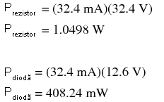
Figure 67: calcule matematice
O diodă zener cu o putere de 0.5 W şi un rezistor cu o putere de 1.5 sau 2 W sunt suficiente pentru această aplicaţie.
Dacă puterea excesivă disipată este atât de importanţa, de ce nu am proiecta un circuit asfel încât să existe o putere disipată minimă? De ce nu am introduce un rezistor cu o valoare foarte mare a rezistenţei, limitând prin urmare curentul şi menţinând puterea disipată la valori foarte scăzute? Să luăm, de exemplu, următorul circuit cu un rezistor de 100 kΩ în loc de rezistorul de 1 kΩ din circuitul precedent. Atât tensiunea de alimentarea cât şi tensiunea zener sunt cele din exemplul precedent.
100 kΩ

Având un curent de 100 de ori mai mic decât inainte (324 µA în loc de 32.4 mA), ambele valori ale puterilor disipate ar trebui să fie de 100 de ori mai mici:
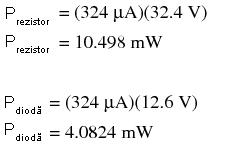
Figure 68: calcule matematice
Acestă configuraţie pare ideală. O putere disipată mai mică înseamnă temperaturi de funcţionare mai mici atât pentru dioda zener cât şi pentru rezistor şi o pierdere de energie mai mică în sistem. Într-adevăr, o rezistenţă mai mare reduce puterile disipate din circuit, dar, introduce o altă problemă. Scopul unui stabilizator de tensiune este alimentarea unui alt circuit cu o tensiune stabilă. Va trebui până la urmă să alimentăm un alt circuit cu 12.6 V, iar acest circuit legat la bornele diodei zener va necesita şi el un anumit curent. Să considerăm primul circuit, conectat de această dată la o sarcină de 500 Ω în paralel cu dioda zener:
1.000 Ω; conectarea unei sarcini de 500 Ω în paralel cu dioda zener

Dacă se menţine o tensiune de 12.6 V pe sarcina de 500 Ω, aceasta va „trage” un curent de 25.2 mA. Pentru ca rezistorul de 1 kΩ în serie cu sursa de tensiune, să aibă o cădere de tensiune de 32.4 V (45 V, tensiunea sursei - 12.6 V, căderea de tensiune pe diodă), acesta va trebui să conducă un curent de 32.4 mA. Acest lucru înseamnă ca prin dioda zener va trece un curent de 7.2 mA.
Să considerăm acum al doilea circuit de stabilizare a tensiunii cu un rezistor de 100 kΩ, alimentând aceeiaşi sarcină de 500 Ω. Ceea ce ar trebui să facă acest circuit, este să menţină o cădere de tensiune de 12.6 V la bornele sarcini, la fel ca în circuitul precedent. Dar, după cum putem vedea, circuitul stabilizator nu poate realiza acest lucru:
100 kΩ în serie; conectarea unei sarcini de 500 Ω în paralel cu dioda

Figure 69: zener
Datorită prezenţei rezistorului foarte mare în serie cu sursa de tensiune, pe sarcină va exista o cădere de tensiune de doar 224 mV, mult mai puţin decât valoarea dorită de 12.6 V. De ce se întâmplă acest lucru? Dacă am fi să avem 12.6 V pe sarcină, curentul prin sarcină ar fi de 25.2 mA, la fel ca înainte. Acest curent de sarcină ar trebui să treacă şi prin rezistorul serie de valoare mult mai mare faţă de cazul precedent, iar căderea de tensiune necesară pentru susţinerea unui asfel de curent de 25.2 mA ar trebui să fie de 2.520 V! Din moment ce nu avem o tensiune aşa de mare la bornele sursei de alimentare, acest lucru nu este posibil. De asemenea, putem observa, că în circuitul de mai sus dioda este blocată.
Putem înţelege mai uşor situaţia de mai sus dacă îndepărtăm temporar dioda zener din circuit şi analizăm doar comportamentul celor doi rezistori:
100 kΩ în serie; conectarea unei sarcini de 500 Ω în paralel cu dioda
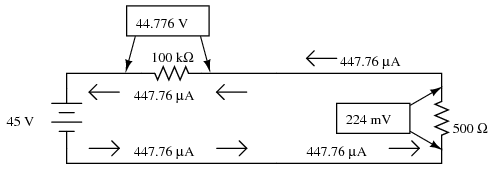
Figure 70: zener; îndepărtarea temporară a diodei zener
Circuitul stabilizator cu rezistorul de 100 kΩ are totuşi o anumită valoare a rezistenţei sarcinii pentru care tensiunea la bornele sale este de 12.6 V. Putem afla această valoare făcând un mic calcul. Introducem toate valorile cunoscute într-un tabel, de forma celui de mai jos:
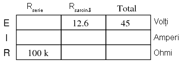
Figure 71: tabel
Căderea de tensiune pe rezistorul serie de 100 kΩ este diferenţa căderilor de tensiune dintre sursă (coloana total) şi sarcină:

Figure 72: tabel
Putem calcula curentul prin rezistorul serie folosind legea lui Ohm (I = E/R):
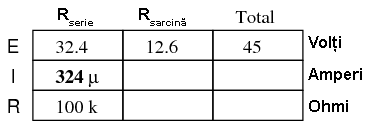
Figure 73: tabel
Fiind un circuit serie, curentul este acelaşi prin toate componentele:

Figure 74: tabel
Putem acum calcula rezistenţa sarcinii folosind legea lui Ohm (R = E/I):
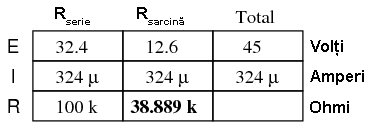
Figure 75: tabel
Prin urmare, dacă rezistenţa sarcini este exact 38.889 kΩ, vom avea o cădere de tensiune de 12.6 V la bornele sale, cu sau fără diodă. Orice rezistenţa de sarcină mai mică decât această valoare va duce la o cădere de tensiune mai mică de 12.6 V, cu sau fără diodă. Dacă inserăm şi dioda zener conform configuraţiei iniţiale, căderea de tensiune maximă pe sarcină va fi stabilizată la o valoare maximă de 12.6 V pentru oricare sarcină mai mare decât 38.889 kΩ.
Cu valoarea iniţială a rezistorului serie de 1 kΩ, circuitul putea să stabilizeze tensiunea chiar şi pentru o sarcină mult mai mică, de 500 Ω. Ceea ce vedem este un compromis între puterea disipată şi valoarea acceptabilă a sarcinii. Cu cât rezistorul serie este mai mare şi puterea disipată este mai mică, cu atât valoarea minimă a rezistenţei sarcinii trebuie să fie mai mare. Dacă vrem să stabilizăm tensiunea pentru o sarcină mică (rezistenţă mică), circuitul trebuie asfel conceput încât să suporte puteri mari de disipaţie.
- Circuit limitator cu diode zener
Un circuit limitator ce „taie” vârfurile formei de undă aproximativ la tensiunea zener a diodelor, este prezentat în figura de mai jos. Circuitul este format din două ziode zenere conectate spate-în-spate. Rolul rezistorului este de limitare a curentului prin diode, pentru protecţia acestora:
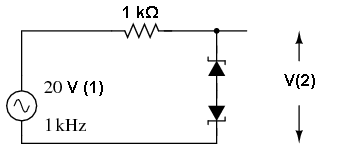
Figure 76: circuit limitator cu diode zener
Tensiunea de străpungere pentru cele două diode este fixată la 10 V. Acest lucru duce la tăierea formei de undă la aproximativ 10 V. Diodele, puse spate-în-spate, taie ambele vârfuri. Pentru semialternanţa pozitivă, dioda de sus este polarizată invers. Caderea de tensiune pe dioda de jos este 0.7 V, fiind polarizată direct. Asfel, tăierea exactă a formei de undă se realizează în jurul valorii de 10.7 V. Acelaşi lucru este valabil şi pentru semialternanţa negativă (-10.7 V):
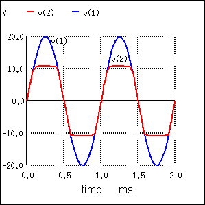
Figure 77: circuit limitator cu diode zener; formele de undă a tensiunii de alimentare şi a tensiunii de ieşire
Sumar:
- Diodele zener sunt proiectate să funcţioneze polarizate invers. Tensiunea la care aceste diode încep să conducă este denumită tensiune zener
- Dioda zener poate funcţiona pe post de stabilizator de tensiune
4 Tranzistorul
4.1 Introducere
Un tranzistor bipolar cu joncţiune (BJT) este alcătuit din trei straturi de materiale semiconductoare, fie de tipul PNP, fie de tipul NPN. Fiecare strat are un nume specific şi un contact pentru conexiunea la circuit:
secţiune transversală PNP; (c) simbolul NPN; (d) secţiune transversală
NPN 
Diferenţa funcţională dintre tranzistorul PNP şi NPN, este modul de polarizare corectă a joncţiunii. Indiferent de starea în care se află, direcţiile curenţilor şi polarităţile tensiunii sunt exact invers la cele două tipuri de tranzistoare.
Tranzistorii sunt regulatori de curent controlaţi în curent. Cu alte cuvinte, tranzistorii limitează valoarea curentului prin ei cu ajutorul unui curent de control mai mic. Curentul principal, cel controlat, pleacă dinspre emitor spre colector (tipul NPN), iar curentul mai mic de control, pleacă dinspre emitor spre bază (tipul NPN). Pentru tranzistorul de tip PNP, direcţia curenţilor este exact inversă. Atenţie, folosim sensul real de deplasare al electronilor, prin urmare, săgeţile indicate pe simbolurile elementelor semiconductoare vor indicat tot timpul împotriva direcţiei de deplasare al electronilor.

Figure 78: controlul tranzistorului bipolar cu joncţiune
Denumirea tranzistoarelor bipolare vine de la faptul că deplasarea electronilor prin ele are loc prin două tipuri de material semiconductor: P şi N. Cu alte cuvinte, există două tipuri de purtători de sarcină, electroni şi goluri.
După cum se poate observa, curentul de control şi curentul controlat se însumează tot timpul pe emitor, iar deplasarea electronilor are loc tot timpul împotriva direcţiei săgeţii. Aceasta este prima şi cea mai importantă regulă a tranzistoarelor: toţi curenţii trebuie să meargă în direcţiile corecte pentru ca dispozitivul să funcţioneze ca şi regulator de curent. De obicei, curentul de control este denumit curent de bază, iar curentul controlat este denumit curent de colector, deoarece sunt singurii curenţii ce trec pe la aceste terminale. Curentul pe emitor este suma curenţilor de bază şi colector, în conformitatea cu legea lui Kirchhoff pentru curent.
Atunci când nu există niciun curent prin bază, tranzistorul se comportă precum un întrerupător deschis, iar trecerea curentului prin colector nu este posibilă. Un curent de bază porneşte tranzistorul, acesta comportându-se precum un întrerupător închis şi permiţând trecerea unui curent proporţional prin colector. Curentul de colector este limitat de curentul bazei, indiferent de valoarea căderii de tensiune pe colector.
Sumar:
4.2 Tranzistorul pe post de întrerupător
Doarece curentul colectorului tranzistorului este limitat proporţional de curentul bazei, acesta poate fi folosit pe poste întrerupător controlat în curent. O cantitate relativ mică de electroni, prin bază, poate exercita un control asupra unei cantităţi mult mai mari de electroni prin colector.
Să presupunem că avem o lampă pe care vrei să o pornim/oprim cu ajutorul unui întrerupător (figura de mai jos (a)):
introducerea în circuit a unui tranzistor NPN în locul întrerupătorului; (c) introducerea în circuit a unui tranzistor PNP în locul

Figure 79: întrerupătorului;
Pentru exemplificare, să inserăm acum un tranzistor (b) în locul întrerupătorului mecanic de la punctul (a). Ţineţi minte, curentul controlat trebuie să treacă prin tranzistor de la colector spre emitor. Din moment ce curentul controlat este cel prin lampă, trebuie să poziţionăm colectorul şi emitorul tranzistorului în locul contactelor întrerupătorului (a). Trebuie de asemenea să ne asigurăm că direcţia curentului prin tranzistor este împotriva săgeţii emitorului, pentru a ne asigura că joncţiunea tranzistorului este polarizată corect (direct).
Putem de asemenea să folosim şi un tranzistor PNP pentru realizarea acestui circuit (figura de mai sus(c)). Alegerea făcută între PNP şi NPN este complet arbitrară, deşi, pentru exemplificarea funcţionării tranzistoarelor, vom folosi în continuare cele de tipul NPN.
Întorcându-ne la exemplu cu tranzistorul NPN (b), ne găsim în situaţia în care mai trebuie să adăugăm ceva în circuit pentru a avea un curent de bază prin tranzistor. Fără o conexiune la terminalul bazei, curentul prin aceasta va fi zero, iar tranzistorul va fi închis, ceea ce înseamnă că lampa va fi tot timpul oprită. Ţineţi minte, că pentru un tranzistor NPN, direcţia curentului de bază trebuie să fie dinspre emitor spre bază (împotriva direcţiei săgeţii). Probabil că cel mai simplu lucru ar fi să conectăm un întrerupător între baza şi colector, precum în figura de mai jos (a):
tranzistor blocat; (b) tranzistor în stare de conducţie

Dacă întrerupătorul este deschis (a), baza tranzistorului nu va fi conectată la baterie şi nu va exista niciun curent prin ea. În această situaţie, spune că tranzistorul este blocat. Dacă întrerupătorul este închis (b), va exista un curent dinspre emitor spre bază, prin întrerupător şi prin lampă (partea stângă) înapoi la terminalul pozitiv al bateriei. Acest curent de bază va permite trecerea unui curent mult mai mare dinspre emitor spre colector, iar lampa se va aprinde. În această situaţie, în care curentul prin circuit este maxim, spunem că tranzistorul este saturat.
Putem însă folosi ceva total diferit pentru a controla lampa (pornit/oprit). De exemplu, putem folosi o pereche de celule solare pentru generarea unei tensiuni de 1 V, pentru depăşirea tensiunii directe de 0.7 V (VBE) între bază şi emitor, tensiune necesară pentru apariţia curentului de bază şi pornirea tranzistorului.
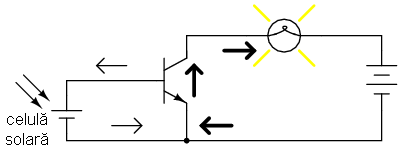
Figure 80: controlul unei lămpi cu ajutorul unui tranzistor acţionat de o celulă solară
Sau putem folosi mai multe termocuple conectate în serie pentru generarea curentului bazei necesar pornirii tranzistorului:

Figure 81: controlul unei lămpi cu ajutorul unui tranzistor acţionat de o termocuplă
Putem folosi chiar şi un microfon, care cu o tensiune şi un curent (printr-un aplificator) suficient de mari, ar putea pune tranzistorul în funcţiune. Desigur, ieşirea microfonului va trebui redresată din curent alternativ în curent continuu, pentru ca joncţiunea emitor-bază să fie tot timpul polarizată direct:
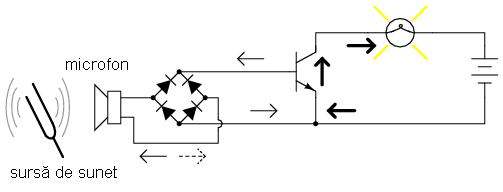
Figure 82: controlul unei lămpi cu ajutorul unui tranzistor acţionat de un microfon
Ceea ce vrem să demonstrăm, este că orice sursă de tensiune în curent continuu, capabilă să pornească tranzistorul, poate fi folosită pentru controlul lămpii, iar puterea acestei surse de tensiune trebuie să fie doar o fracţiune din puterea circuitului controlat. Tranzistorul în acest caz nu se comportă doar ca un întrerupător, ci şi ca un amplificator: folosind un semnal de putere relativ mică pentru controlul unui semnal de putere relativ mare. Atenţie, puterea necesară aprinderii lămpii este furnizată de bateria din circuitul principal, şi nu de celula solară, termocuplă sau microfon. Acestea din urmă doar controlează puterea bateriei pentru aprinderea lămpii.
Sumar:
- Tranzistoarele pot fi folosite ca şi întrerupătoare pentru controlul puterii de curent continuu asupra sarcinii. Curentul controlat trece prin emitor-colector; curentul de control trece prin emitor-bază
- Când curentul printr-un tranzistor este zero, spunem că acesta este blocat
- Când curentul printr-un tranzistor este maxim, spunem că acesta este saturat
4.3 Verificarea tranzistorului cu ohmmetrul
Tranzistorii se comportă precum două diode puse spate-în-spate atunci când sunt verificaţi cu ajutorul multimetrului pe post de ohmmetru sau cu funcţie „verificare diodă”, datorită celor trei straturi PNP sau NPN. Tranzistorul de mai jos este de tip PNP; sonda neagră este terminalul negativ (-) iar cea roşie corespunde terminalului pozitiv (+)
joncţiunile bază-emitor şi bază-colector sunt polarizate direct, rezistenţa este mică; (b) joncţiunile bază-emitor şi bază-colector sunt
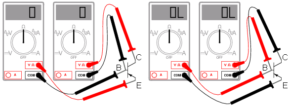
Figure 83: polarizare invers, rezistenţa este infinită
Dacă multimetrul este echipat cu funcţia „verificare diodă”, putem folosi acea funcţie pentru aflarea tensiunii de polarizare directă a joncţiunii P-N. În cazul unui tranzistor NPN, indicaţia aparatului de măsură va fi exact invers.
- Determinarea tipului şi contactelor unui tranzistor bipolar nemarcat
Dacă folosim funcţia „verificare diodă”, vom vedea că joncţiunea emitor-bază are o tensiune directă mai mare decât joncţiunea colector-bază. Această diferenţa a tensiunii directe se datorează diferenţei concentraţiilor de dopaj dintre regiunile emitorului şi colectorului: emitorul este un material semiconductor dopat mult mai puternic decât colectorul, ceea ce duce la producerea unei tensiuni directe mult mai mari a joncţiunii cu baza.
Cunoscând acest lucru, putem determina contactele unui tranzistor nemarcat. Acest lucru este important deoarece nu există un standar cu privire la modul de împachetare al tranzistorilor. Desigur, toţi tranzistorii bipolari au trei contacte, dar poziţie lor fizică în cadrul tranzistorului poate fi diferită de la un producător la altul.
Să presupunem că luăm un tranzistor la întâmplare, nemarcat, şi începem să măsurăm cu ajutorul multimetrului setat pe funcţie „verificare diodă”. După măsurarea tuturor combinaţiilor de contacte, ajungem la următoarele rezultate:

Figure 84: tranzistor bipolar nemarcat
**
între punctele 1(+) şi 2(-): OL
între punctele 1(-) şi 2(+): OL
între punctele 1(+) şi 3(-): 0.655 V
între punctele 1(-) şi 3(+): OL
între punctele 2(+) şi 3(-): 0.621 V
între punctele 2(-) şi 3(+): OL
Singurele combinaţii de contacte pe care putem măsura tensiunea sunt 1 şi 3 (sonda roşie pe 1 şi sonda neagră pe 3), şi 2 şi 3 (sonda roşie pe 2 şi sonda neagră pe 3). Aceste două citiri trebuie să indice tensiunea de polarizare directă a joncţiunii emitor-bază (0.655 V) şi a joncţiunii colector-bază (0.621).
Putem acum căuta contactul comun ambelor seturi de măsurători „conductive”. Acest contact trebuie să fie baza tranzistorului, deoarece acesta este singurul strat, al dispozitivului format din trei straturi, ce este comun ambelor seturi de joncţiuni PN (emitor-bază şi colector-bază). În acest exemplu, contactul căutat este numărul 3, fiind comun combinaţiilor 1-3 şi 2-3. În ambele măsurători, sonda neagră (-) a aparatului de măsură a venit în contact cu contactul 3, ceea ce ne spune că baza acestui tranzistor este realizată dintr-un material semiconductor de tip N. Prin urmare, tranzistorul în cauză este un tranzistor bipolar de tip PNP, cu baza - contactul 3, emitor - contactul 1 şi colector - contactul 2.
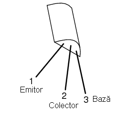
Figure 85: tranzistor bipolar nemarcat; contactele determinate cu ajutorul multimetrului
După cum putem observa, baza tranzistorului în acest caz nu este contactul din mijloc al tranzistorului, aşa cum ne-am aştepta. Acest lucru se întâmplă foarte des în practică. Singura modalitate prin care ne putem asigura de corectitudinea contactelor este prin verificarea cu ajutorului unui multimetru, sau cu ajutorul catalogului producătorului.
- Determinarea integrităţii unui tranzistor
Ştiind faptul că un tranzistor se comportă precum două diode aşezate spate-în-spate la testarea conductivităţii cu un aparat de măsură, dacă în urma măsurătorilor descoperim că există continuitate în mai mult sau mai puţine de două dintre cele şase combinaţii de contate, putem spune cu singuranţă că tranzistorul este defect, sau ca dispozitivul aflat sub inspecţie nu este un tranzistor şi un cu totul alt dispozitiv!.
- Modul de funcţionare al tranzistorului
Totuşi, modelul „celor două diode” nu poate explica funcţionarea tranzistorului ca şi dispozitiv de amplifcare a semnalului.
Pentru ilustrarea acestui paradox, putem examina următorul circuit, folosind diagrama fizică a tranzistorului pentru uşurarea explicaţiilor:

Figure 86: tranzistor bipolar pe post de întrerupător; diagrama fizică
Săgeatea diagonală gri are direcţia deplasării electronilor prin joncţiunea emitor-bază. Acest lucru este clar, din moment ce electroni se deplasează dinspre emitorul de tip N spre baza de tip N: joncţiunea este polarizată direct. Totuşi, joncţiunea bază-colector se comportă mai ciudat. Săgeata îngroşată vericală indică direcţia de deplasare a electronilor dinspre bază spre colector. Din moment ce baza este realizată dintr-un material de tip P iar colectorul dintr-un semiconductor de tip N, direcţia de deplasare a electronilor este inversă faţă de direcţia normală de deplasare printr-o joncţiune P-N! În mod normal, o joncţiune P-N nu ar permite deplasarea inversă a electronilor, cel puţin nu fără a oferi o opoziţie extrem de mare. Totuşi, un tranzistor saturat prezintă o opoziţie foarte mică faţă de deplasarea electronilor de la emitor la colector, lucru demonstrat şi prin faptul că lampa este aprinsă!
Prin urmare, modelul celor două diode puse spate-în-spate poate fi folosit doar pentru înţelegerea modului de verificare al tranzistorilor cu ajutorul aparatului de măsură, nu şi pentru înţelegerea funcţionării acestora în circuitele practice.
folosi pentru explicare funcţionării tranzistorilor în circuitele reale 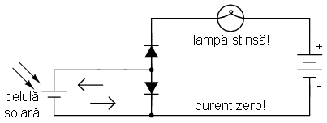
Sumar:
- Tranzistorul se comportă precum o pereche de diode conectate spate-în-spate atunci când este verificat cu ajutorul unui multimetru pe post de ohmmetru sau cu funcţia „verificare diodă”
- Joncţiunea emitor-bază de tip P-N, are o tensiune directă puţin mai mare decât joncţiunea colector-bază de tip P-N, datorită dopajului mai puternic al emitorului. Acest lucru poate fi exploatat pentru identificarea tranzistorilor
4.4 Zona activă de funcţionare a tranzistorului
Când baza nu este polarizată, şi prin urmare nu există curent între emitor şi colector, spunem că tranzistorul este blocat. Invers, când între emitor şi colector trece cantitatea maximă de curent permisă de colector şi de sursa de putere, spunem că tranzistorul este saturat. Dar, în cazul în care curentul controlat este mai mare decât zero dar este sub valoarea maximă admisă de sursă şi de circuit, tranzistorul va funcţiona între zonele de blocare şi saturare; în acest caz, spune că tranzistorul funcţionează în zona activă.
Să considerăm următorul circuit teoretic:
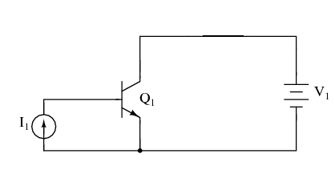
Figure 87: circuit pentru exemplificarea zonei active de funcţionare a tranzistorului
Circuitul este format dintr-un tranzistor (Q1) de tip NPN, alimentat de o baterie (V1) şi controlat printr-o sursă de curent (I1). Sursa de curent va genera un curent fix, generând o tensiune mai mică sau mai mare pentru asigurarea acestui curent prin ea.
În această simulare, vom seta valoarea sursei de curent la 20 µA şi vom varia tensiunea sursei (V1) între 0 V şi 2 V; vom observa apoi curentul ce trece prin sursă.
tranzistorului între 0 V şi 2 V şi un curent de alimentare constant de 20 µA; curentul prin colector este un curent constant de 2 mA 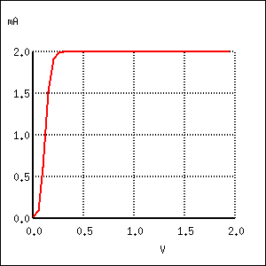
Un curent de bază constant de 20 µA controlează un curent maxim de 2 mA prin colector, de exact 100 de ori mai mare. Pentru această valoare a curentului de baza, curentul prin colector nu poate creşte mai mult. Putem observa de pe grafic că forma curbei este plată în afară de prima porţiune, porţiune unde tensiunea bateriei (V1) creşte de la 0 V la 0.25 V. În acest interval, curentul prin colector creşte rapid de la 0 A la 2 mA.
Să observăm ce se întâmplă dacă lărgim plaja valorilor de tensiune a bateriei, de la intervalul 0 - 2 V, la intervalul 0 - 50 V, menţinând un curent de bază constant de 20 µA:
tranzistorului între 0 V şi 50 V şi un curent de alimentare constant de 20 µA; curentul prin colector este şi de această dată un curent constant

Figure 88: de 2 mA
După cum era de aşteptat, rezultatul este acelaşi. Curentul prin colector nu poate trece de 2 mA (de exact 100 de ori valoarea curentului bazei!), cu toate că tensiunea bateriei (V1) variază de la 0 V până la 50 V. Putem trage concluzia că tensiunea dintre colector şi emitor nu are niciun efect asupra curentului din colector, decât la valori foarte mici (puţin peste 0 volţi). Peste această tensiune „critică”, valoarea tensiunii nu mai are nicio importanţă pentru valoarea curentului colectorului. Tranzistorul se comportă în acest caz precum un regulator de curent, permiţând un curent de exact 2 mA prin colector, şi nu mai mult.
Urmarea evidentă este creşterea curentului bazei, de la 20 µA la 75 µA, menţinând tensiunea bateriei în intervalul 0 - 50 V:
tranzistorului între 0 V şi 50 V şi un curent de alimentare variabil între 15 µA şi 75 µA; în acest caz există şi alte curbe de variaţie
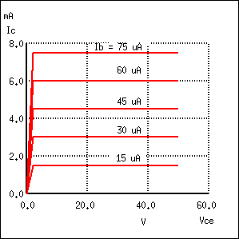
Figure 89: curent-tensiune
Pentru curentul maxim de bază, 75 µA, curentul prin colector este (din nou) de 100 de ori mai mare, 7.5 mA şi din nou curba curent-tensiune este plată, cu excepţia primei părti. Putem trage concluzia că factorul decisiv ce contribuie la valoarea curentului prin colector este curentul bazei, tensiunea bateriei (V1) fiind irelevantă atâta timp cât se situează peste o anumită valoare minimă.
4.4.1 Curbele caracteristice
Această relaţie dintre curent şi tensiune este fundamental diferită faţă de relaţia curent-tensiune a rezistorului. În cazul rezistorului, curentul creşte liniar pe măsură ce căderea de tensiune la bornele sale creşte. În cazul tranzistorului, curentul dinspre emitor spre colector are o valoare limită fixă, valoare peste care nu poate creşte, indiferent de căderea de tensiune dintre emitor şi colector.
O reprezentare a tuturor acestor curbe (variaţii) curent-tensiune pe un singur grafic, pentru un anumit tranzistor, poartă numele de curbe caracteristice:
Figure 90: curbele caracteristice ale tranzistorului bipolar cu joncţiune
Trebuie înţeles faptul foarte important, că în graficul de mai sus, avem trei variabile: tensiunea colector emitor (Ecolector-emitor), curentul de la emitor la colector (Icolector) şi curentul bazei (Ibază). Pentru fiecare variaţie a curentului de bază, de la 5 µA la 20 µA la 40 până la 75 µA, vom avea o altă curbă caracteristică, şi practic, pot exista o infinitate de curbe între aceste valori.
4.4.2 Factorul beta (factorul de amplificare în curent)
Din moment ce tranzistorul se comportă precum un regulator de curent, limitând curentu colectorului printr-o proporţie fixă faţă de curentul bazei, putem exprima această caracteristică standar a tranzistoarelor printr-un raport, cunoscut sub numele de factor beta sau factor de amplificare în curent, şi simbolizat prin litera grecească β, sau prin hfe:

Figure 91: factorul beta
Factorul β al oricărui tranzistor este determinat de modul său de fabricare, şi este o mărime ce nu poate fi modificată după confecţionarea acestuia. Este foarte greu să găsim doi tranzistori, de acelaşi tip, care să posedă un factor beta identic, datorită variabilelor fizice ce afectează valoarea acestuia. Dacă vrem să construim un circuit în care avem nevoie de tranzistori cu β egali, aceştia se pot cumpăra în seturi, la un preţ mai mare. Dar, construirea unor circuite electronice cu asfel de dependinţe nu este indicată.
β nu rămâne constant pentru toate condiţiile de operare. Pentru un tranzistor fizic, raportul beta poate varia cu un factor mai mare decât trei între limitele curentului de operare. De exemplu, un tranzistor marcat cu β = 50, poate în realitate să prezinte un raport Ic / Ib de 30 sau chiar de 100, în funcţie de valoarea curentului prin colector, temperatura tranzistorului, frecvenţa semnalului amplificat, plus alte variabile. Deşi teoretic vom considera β ca fiind constant pentru oricare tranzistor, în realitate acest lucru nu este valabil!
4.4.3 Modelul diodă-potenţiometru al tranzistorului
Pentru a înţelege mai uşor modul de funcţionare al tranzistorului, putem considera următorul model teoretic:

Figure 92: modelul diodă-potenţiometru al tranzistorului (tip NPN)
Conform acestui model, tranzistorul este o combinaţie dintre o diodă şi un potenţiometru. Curentul prin dioda bază-emitor controlează rezistenţa potenţiometrului colector-emitor, lucru evidenţiat prin linia întreruptă dintre cele două componente, ceea ce duce la controlul curentului prin colector. Tranzistorul de sus este de tipul NPN. Tranzistorul de tipul PNP, va avea dioda bază-emitor inversată.
4.4.4 Modelul diodă-sursă-de-curent al tranzistorului
Un model mult mai precis însă, este cel din figura de mai jos:
Figure 93: modelul diodă-sursă-de-curent al tranzistorului (tip NPN)
Conform acestui model, tranzistorul este o combinaţie dintre o diodă şi o sursă de curent, ieşirea sursei de curen fiind un multiplu (raportul beta) al curentului de bază. Acest model descrie mult mai precis caracteristica intrare/ieşire al tranzistorului: curentul de bază stabileşte o un anumit curent în colector, şi nu o anumită rezistenţă colector-emitor, precum în cazul precedent. Din păcate, folosirea unei surse de curent îi poate duce pe cei mai ne-experimentaţi în eroare; un tranzistor nu este în niciun caz o sursă de energie electrică, dar pe model, faptul că sursa de energie este externă tranzistorului, nu este aparentă.
Sumar:
- Tranzistorul se află în zona activă de funcţionare, atunci când funcţionează între starea de blocare şi cea de saturaţie
- Curentul bazei regulează curentul colectorului. Acest lucru înseamnă că prin colector nu poate trece un curent mai mare decât valoarea permisă de câtre curentul bazei
- Raportul dintre curentul colectorului şi curentul bazei poartă numele de factor beta sau factor de amplificare în curent al tranzistorului, şi se notează cu β sau hfe)
- β variază pentru fiecare tranzistor în parte
- β variază pentru diferite condiţii de operare
4.5 Amplificator cu tranzistor în conexiune emitor comun
Să reluăm exemplu studiat în secţiunile precedente, unde tranzistorul a fost folosit pe post de întrerupător:
Figure 94: tranzistor NPN pe post de întrerupător
Această configuraţie poartă numele de conexiune emitor comun datorită faptului că, ignorând bateria de alimentare, atât pentru sursa de semnal (celula solară) cât şi pentru sarcină, contactul emitorului reprezintă un punct comun celor două.
Figure 95: amplificator emitor comun: semnalele de intrare şi de ieşire au ca punct comun contactul emitorului
În exemplele precedente, am considerat că tranzistorul funcţionează saturat (la capacitate maximă). Cunoscând faptul că, curentul prin colector poate varia în funcţie de curentul bazei, putem controla luminozitatea lămpii din acest circuit în funcţie de expunerea celulei solare la lumină. Când intensitatea luminoasă ce cade pe celula solară este minimă, lampa va lumina foarte slab. Pe măsură ce intensitatea luminoasă ce cade pe celula solară creşte, va creşte şi intensitatea luminoasă a lămpii.
Să presupunem acum că am dori să măsurăm intensitatea luminoasă cu ajutorul celulei solare. Vrem să măsurăm de fapt intensitatea razei incidente pe celula solară folosind curentul său de ieşire conectat la un instrument de măsură (ampermetru). Una dintre soluţii ar consta în conectarea ampermetrului direct la celula solară:
format dintr-o celulă solară şi un ampermetru pentru măsurarea

Figure 96: curentului de la ieşirea celulei
Cu toate că această metodă funcţionează pentru măsurători moderate al intensităţilor, ea nu poate fi folosită atunci când intensitatea luminoasă scade sub o anumită valoare, datorită faptului că celula solară trebuie să alimenteze şi ampermetrul iar precizia sistemului scade foarte mult în acest caz. Să presupunem în continuare că în exemplul de mai sus, suntem interesaţi de măsurători extrem de scăzute ale intensităţilor luminoase. În acest caz, trebuie să căutăm o altă soluţie.
Soluţia cea mai la îndemână este utilizarea unui tranzistor pentru amplificarea curentului generat de celula solară. Acest lucru înseamnă că va exista o cantitate mult mai mare de curent disponibilă pentru deviaţia acului indicator al aparatului de măsură, pentru o valoare mult mai mică a curentului generat de celula solară.
ajutorului unui tranzistor în conexiune emitor-comun
De această dată, curentul prin circuit (şi prin aparatul de măsură) va fi de β ori mai mare decât curentul prin celula solară. Pentru un tranzistor cu β = 100, aceast lucru reprezintă o creştere substanţială a preciziei măsurătorii. Atenţie însă, puterea adiţională necesară funcţionării aparatului de măsură este „colectată” de la bateria din dreapta, nu de către celula solară. Tot ceea ce realizează celula solară este controlul curentului bateriei pentru furnizarea unei puteri mai mari necesară funcţionării aparatului de măsură, puterea ce nu ar fi putut fi generată de către celula solară însăşi.
Deoarece tranzistorul este un dispozitiv de regulare a curentului, iar indicaţia aparatului de măsură depinde doar de curentul ce trece prin bobina acestuia, indicaţia aparatului de măsură va depinde doar de celula solară şi nu de valoarea tensiunii generată de baterie. Acest lucru înseamnă că acurateţea măsurătorii realizată de acest circuit va fi independentă de condiţiile bateriei, un lucru extrem de important! Tot ceea ce trebuie bateria să facă, este să genereze o anumită tensiune minimă şi un curent suficient pentru funcţionarea ampermetrului.
Configuraţia emitor comun mai poate fi folosită şi pentru producerea unei tensiuni dependente de semnalul de intrare, în loc de curent. Să înlocuim aşadar aparatul de măsură cu un rezistor şi să măsurăm tensiunea dintre colector şi emitor:

Figure 97: căderea de tensiune dezvoltată pe un tranzistor în conexiune emitor comun datorită curentului prin sarcină
Când intensitatea luminoasă pe celula solară este zero, tranzistorul va fi blocat şi se va comporta precum un întrerupător deschis între colector şi emitor. Acest lucru va duce la apariţia unei căderi de tensiune maxime între colector şi emitor, Vieşire, tensiune egală cu tensiunea de la bornele bateriei.
Când intensitatea luminoasă pe celula solară este maximă, celula solară va duce tranzistorul în zona de saturaţie; acesta se va comporta precum un întrerupător închis între colector şi emitor. Rezultatul va fi o cădere de tensiune minime între colector şi emitor. Totuşi, această tensiune de saturaţie dintre colector şi emitor este destul de mică, câteva zecimi de volţi, în funcţie de tranzistorul folosit.
Pentru intensităţi luminoase ce se găsesc între aceste valori (minim/maxim), tranzistorul va funcţiona în zona activă, iar tensiunea de ieşire va fi undeva între zero volţi şi tensiunea bateriei. De menţionat că tensiunea de ieşire a tranzistorului în configuraţie emitor comun este invers proporţională cu intensitatea semnalului de intrar. Cu alte cuvinte, tensiunea de ieşire scade cu creşterea semnalului de intrare. Din acest motiv, amplificatorul (cu tranzistor) în configuraţie emitor comun poartă numele de amplificator inversor.
Să considerăm circuitul:

Figure 98: schema amplificatorului cu tranzistor în conexiune emitor comun
Graficul variaţiei tensiune-curent arată asfel (căderea de tensiune dintre colector şi emitor şi curentul bazei):
Figure 99: amplificator cu tranzistor în conexiune emitor comun; graficul variaţiei tensiune-curent
La începutul simulării, curentul generat de sursă (celula solară) este zero, tranzistorul este blocat iar căderea de tensiune între colector şi emitor este maximă, şi anume 15 V, tensiunea bateriei. Pe măsură ce curentul generat de celula solară începe să crească, tensiunea de ieşire începe să scadă proportional, până când tranzistorul intră în starea de saturaţie la curentul de bază de 30 µA. Putem observa foarte clar de pe grafic că variaţia tensiunii este perfect liniară, până în momentul saturării, unde nu atinge de fapt niciodată valoarea zero. Un tranzistor saturat nu poate atinge niciodată o cădere de tensiune de exact 0 volţi între colector şi emitor datorită efectelor joncţiunii sale interne.
4.5.1 Amplificarea semnalelor alternative
Adesea avem nevoie însă de un amplificator în curent alternativ. O aplicaţia practică este utilizarea acestui tip de amplicare în sistemele audio. Să reluăm circuitul cu microfon (figura de mai jos), dar să încercăm de data aceasta să-l modificăm asfel încât să alimenteze un difuzor în loc de lampă.
Figure 100: activarea tranzistorului cu ajutorul unei surse de sunet
În circuitul original (cel de sus), am folosit o punte redresoare pentru transformarea semnalului de curent alternativ al microfonului în tensiune de curent continuu pentru polarizarea bazei tranzistorului. În acel caz ne-a interesat doar să pornim lampa cu un semnal venit din partea microfonului, iar această configuraţie şi-a îndeplinit scopul. De data aceasta însă, vrem să reproducem un semnal de curent alternatv pe difuzor. Acest lucru înseamnă ca nu mai putem redresa semnalul de ieşire al microfonul, deoarece avem nevoie de semnalul de curent alternativ nedistorsionat la intrarea tranzistorului. Să îndepărtăm aşadar puntea redresoare din circuit şi să înlocuim lampa cu un difuzor:
Figure 101: amplificator cu tranzistor în conexiune emitor comun legat la difuzor şi acţionat cu ajutorul unui semnal audio
Fiindcă microfonul poate produce tensiuni mai mari decât tensiunea de polarizare directă a joncţiunii bază-emitor, vom conecta şi un rezistor în serie cu microfonul. Circuitul practic pe care îl vom analiza arată asfel:
difuzor şi acţionat cu ajutorul unui semnal audio; circuitul practic

Graficul variaţiei tensiune-curent, tensiunea de alimentare, V1 (1,5 V, f = 2.000 Hz) cu roşu, curentul prin difuzor (mai mare de 10 ori pe grafic decât curentul real, pentru observarea mai clară a acestuia), cu albastru, este prezentat mai jos:
difuzor şi acţionat cu ajutorul unui semnal audio; formele de undă ale
tensiunii de intrare şi a curentului emitor-colector (prin difuzor)

Curentul prin difuzor este acelaşi cu cel prin baterie. Putem vedea că semnalul de tensiune de intrare este un semnal sinusoidal cu semiperioda pozitivă şi negativă, iar semnalul de curent de ieşire pulsează doar într-o singură direcţie (semiperioda negativă). Sunetul reprodus de difuzor în acest caz va fi extrem de distorsionat.
Ce s-a întâmplat cu circuitul în acest caz? De ce nu reproduce în totalitate semnalul de tensiune în curent alternativ de la intrare? Să revenim la modelul diodă-sursă-de-curent al tranzistorului pentru a încerca elucidarea problemei:
Figure 102: modelul diodă-sursă-de-curent al tranzistorului
Curentul pron colector este regular, sau controlat, printr-un mecanism de curent constant ce depinde de curentul prin dioda bază-emitor. Observaţi că ambele direcţii ale curentului sunt uni-direcţionale! În ciuda faptului că se încearcă o amplificare de semnal în curent alternativ, acesta este de fapt un dispozitiv de curent continuu, fiind capabil să conducă curenţi doar într-o siungură direcţie. Chiar dacă aplicăm o tensiune alternativă între bază şi emitor, electronii nu se pot deplasa prin circuit în semi-perioada negativă a semnalului ce polarizează invers joncţiunea bază-emitor (dioda). Prin urmare, tranzistorul va fi blocat în acea porţiune a perioadei, şi va intra în conducţie doar când polaritatea tensiunii de intrare este corectă, asfel încât să polarizeze direct dioda bază-emitor, şi doar dacă acea tensiune este suficient de mare pentru a depăşi tensiune de polarizare directă a diodei. Reţineţi, tranzistorii sunt dispozitive controlate în curent: aceştia controlează curentul prin colector în funcţie de existenţa curentului între bază şi emitor (curentul de bază), şi nu în funcţie de tensiunea bază-emitor.
Singura modalitate prin care tranzistorul poate reproduce întreaga formă de undă pe difuzor, este menţinerea acestuia în zona activă pe întreaga perioadă a undei, adică, trebuie să menţinem un curent prin bază în toată această perioadă. Prin urmare, joncţiunea bază-emitor trebuie polarizată direct tot timpul. Din fericire, acest lucru se poate realiza prin conectarea unei surse de curent continuu în serie cu semnalul de intrare:
polarizarea directă a jocţiunii bază-emitor pe toată perioada semnalului

Figure 103: de intrare
Graficul variaţiei tensiune-curent arată de data aceasta asfel:

Figure 104: graficul variaţiei tensiune-curent
Cu sursa de tensiune de polarizare (Vpolarizare) conectată în serie cu sursa de semnal, tranzistorul rămâne în zona activă de funcţionare pe toată perioada undei, reproducând cu exactitate forma de undă de la intrare pe difuzor. Observaţi că tensiunea de la intrare variază între valorile de 0.8 V şi 3.8 V, o amplitudine vârf-la-vârf de exact 3 volţi (2 * amplitudinea de vârf a sursei = 2 * 1,5 = 3 V). Curentul de ieşire, pe difuzor, variază între zero şi aproximativ 300 mA, fiind defazat cu 180o cu semnalul de intrare (al microfonului).
Dacă am conecta simultan mai multe osciloscoape în circuitul de mai sus, formele de undă ale tensiunilor ar arăta asfel:
puncte critice ale unui amplificator cu tranzistor în conexiune
Figure 105: emitor-comun
Amplificarea în curent al circuitului de mai sus este dată de factorul beta β al tranzistorului, în acest caz particular, 100, sau 40 dB. Amplificarea în tensiune însă, este puţin mai complicat de determinat. Să urmărim graficul tensiunii pe difuzor (albastru) şi al tensiunii de intrare pe tranzistor (roşu, bază-emitor):

Figure 106: graficul formelor de undă a tensiunii pe difuzor (albastru) şi al tensiunii de intrare a tranzistorului (roşu)
Dacă am lua aceeiaşi scală, de la 0 la 4 V, putem vedea că forma de undă a tensiunii de ieşire are o amplitudine vârf-la-vârf mai mică decât tensiunea de intrare. Dim moment ce amplificarea în tensiune a unui amplificator este definită ca şi raportul dintre amplitudinile semnalelor de curent alternativ, putem igonar componenta de curent continuu ce separă cele două forme de undă. Chiar şi asa, tensiune de intrare este mai mare decât cea de ieşire, ceea ce înseamnă ca amplificarea în tensiune este sub-unitară.
Această amplificare mică în tensiune nu este caracteristică tuturor amplificatoarelor emitor-comun, ci este consecinţa diferenţei mari dintre rezistenţele de intrare şi ieşire. Rezistenţa de intrare (R1) în acest caz este de 1.000 Ω, iar rezistenţa sarcinii (difuzor) este de doar 8 Ω. Deoarece amplificarea în curent a amplifiatorului este determinată doar de factorul beta (β) al tranzistorului, şi deoarece acest factor este fix, amplificarea în curent nu se va modifica odată cu variaţia nici uneia dintre cele două rezistenţe. Totuşi, amplificarea în tensiune depinde de aceste rezistenţe. Dacă mărim rezistenţa sarcinii, căderea de tensiune pe aceasta va fi mai mare pentru aceleaşi valori ale curenţilor, rezultând o formă de undă de ieşire mai mare. Să urmărim şi graficul formelor de undă pentru sarcina de 30 Ω:
şi al tensiunii de intrare a tranzistorului (roşu), pentru o sarcină de 30 Ω în loc de 8 Ω
De data aceasta, amplitudinea formei de undă a tensiunii de ieşire (albastru) este mult mai mare decât tensiunea de intrare. Dacă ne uităm mai atent, putem vedea că amplitudinea vârf la vârf este de 9 V, de 3 ori mai mare decât amplitudinea tensiunii de intrare. Mai exact, tensiunea de intrare este de 1.5 V, iar cea de ieşire de 4.418 V. Să calulăm aşadar raportul (factorul) de amplificare în tensiune (AV):

Figure 107: calcule matematice
Deoarece amplificarea în curent a amplificatorului emitor comun este fixată de factorul β, iar tensiunile de intrare şi ieşire vor fi egale cu produsul dintre curenţii de intrare şi ieşire şi rezistenţele rezistorilor respectivi, putem scrie următoarea ecuaţie pentru aproximarea amplificării în tensiune:
Figure 108: ecuaţia amplificării în tensiune a amplificatorului în conexiune emitor comun
Diferenţa dintre amplificarea reală (2.94) şi cea ideală (3), se datorează imperfecţiunilor tranzistorilor în general.
4.5.2 Amplificator emitor comun cu tranzistor PNP
Până acum am folosit doar tranzistori de tipul NPN, dar putem la fel de bine utiliza tranzistori NPN în orice tip de configuraţie, atâta timp cât polaritatea şi direcţiile curenţilor sunt cele corecte. Factorii de amplificare în curent şi tensiune sunt aceeiaşi şi pentru amplificatorul cu tranzistor PNP, doar polarităţile bateriilor sunt diferite:

Figure 109: amplificator în configuraţie emitor comun cu tranzistor de tipul PNP
Sumar:
- Denumirea de emitor-comun vine de la faptul că tensiunile de intrare şi de ieşire ale tranzistorului au ca şi punct comun contactul emitorului, neluând în considerare alte surse de putere
- Tranzistorii sunt în principiu dispozitive de curent continuu: nu pot conduce curenţi în direcţie inversă la polarizarea inversă. Pentru a funcţiona cu semnale de curent alternativ, semnalul de intrare (alternativ) trebuie să conţină şi o componentă de curent continuu pentru menţinerea tranzistorului în zona activă de functionare pe toată durata perioadei semnalului de intrare
- Tensiunea de ieşire, între emitor şi colector, a unui amplificator în conexiune emitor comun, este defazată cu 180o faţă de tensiunea de intrare. Amplificatorul emitor comun mai este cunoscut din această cauză şi ca amplificator inversor
- Amplificarea în curent a tranzistorului emitor-comun, cu sarcina conectată în serie cu colectorul, este egală cu β
- Amplificarea în tensiune a tranzistorului emitor-comun este dată de relaţia AV = β (Rieşire / Rintrare), unde Rieşire reprezintă rezistorul conectat în serie cu colectorul, iar Rintrare reprezintă rezistorul conectat în serie cu baza tranzistorului
4.6 Amplificator cu tranzistor în conexiune colector comun
Configuraţa amplificatorului colector comun arată asfel:

Figure 110: configuraţia amplificatorului cu tranzistor în conexiune colector comun
Denumirea de colector comun vine de la faptul că, ignorând sursa de alimentare (bateria), sursa de semnal şi sarcina au ca punct comun contactul colectorului:

Figure 111: configuraţia amplificatorului cu tranzistor în conexiune colector comun
Se poate observa că prin rezistorul de sarcină trece atât curentul colectorului cât şi curentul bazei, fiind conectat în serie cu emitorul. Amplificarea în curent a amplificatorului colector comun este cea mai mare dintre toate configuraţiile, deoarece într-un tranzistor, cel mai mare curent se regăseşte pe emitor, fiind suma dintre curentul bazei şi al colectorului. Să analizăm însă circuitul de mai jos pentru a descoperi particularităţile acestei configuraţii:
colector comun; circuit practic

Graficul variaţiei căderii de tensiune de ieşire - cădere de tensiune de intrare, este următorul:
colector comun; variaţia tensiune ieşire - tensiune intrare

Faţa de conexiunea emitor comun, amplificatorul colector comun produce la ieşire o cădere de tensiune de aceeiaşi polaritate cu tensiunea de intrare. Pe măsură ce tensiunea de intrare creşte, creşte şi cea de ieşire. Mai mult, tensiunea de ieşire, este aproape identică cu tensiunea de intrare, minus căderea de 0.7 V a joncţiunii P-N. Indiferent de factorul beta al tranzistorului, sau de valoarea sarcinii, amplificatorul colector comun are un factor de amplificare în tensiune (AV) extrem de apropiat de valoarea 1. Din această cauză, conexiunea colector comun mai este denumită şi repetor pe emitor.
4.6.1 Explicaţie
Este relativ uşor de înţeles motivul pentru care căderea de tensiune pe sarcina amplificatorului în colector comun este aproximativ egală cu tensiunea de intrare. Dacă ne referim la modelul diodă-sursă-de-curent al tranzistorului, putem vedea că, curentul bazei trebuie să treacă prin joncţiunea P-N bază-emitor, joncţiune echivalentă unei diode redresoare. Dacă această joncţiune este polarizată direct, va exista o cădere de tensiune de aproximativ 0,7 V (siliciu) între terminalele acestia. Această cădere de tensiune de 0,7 V nu depinde de amplitudinea curentului de bază, asfel că putem considera această cădere de tensiune ca fiind constantă:
colector comun; modelul diodă-sursă-de-tensiune pentru explicarea
comportamentului amplificatorului

Cunoscând polarităţile tensiunilor joncţiunii P-N bază-emitor şi a rezistorului de sarcină, putem vedea că tensiunea de intrare trebuie să fie egală cu suma celor două, în conformitatea cu legea lui Kirchhoff pentru tensiune. Cu alte cuvinte, tensiunea sarcinii va fi tot timpul cu aproximativ 0.7 V mai mică decât tensiunea de intrare, atunci când tranzistorul se află în stare de conducţie.
4.6.2 Utilizarea unei surse de curent continuu
Pentru amplficarea semnalelor de curent alternativ cu ajutorul configuraţiei colector comun, este nevoie de utilizarea unei surse de tensiune în curent continuu (tensiune de polarizare), la fel cum a fost cazul configuraţiei emitor comun. Rezultatul este însă de această dată un amplificator ne-inversor.
colector comun; adăugarea sursei de tensiune în curent continuu pentru
polarizarea corectă a tranzistorului

Formele de undă a tensiunii de ieşire (albastru) şi a tensiunii de intrare (roşu) sunt prezentate în graficul de mai jos:
amplificatorului colector comun

Dacă ar să conectăm mai multe osciloscoape în circuit, vom vedea că formele de undă ale tensiunilor arată asfel:
colector comun; conectarea osciloscoapelor pentru vizualizarea formelor

Figure 112: de undă
4.6.3 Factorul de amplificare în curent
Din moment ce această configuraţie nu oferă nicio amplificare în tensiune, singura amplificare realizată este în curent. Configuraţia anterioară, emitor comun, oferea un factorul de amplificare în curent egal cu factorul β al tranzistorului, datorită faptului că, curentul de intrare trecea prin bază, iar curentul de ieşire (sarcină) trecea prin colector, iar β este prin definiţie raportul dintre curentul de colector şi curentul de bază. În configuraţia colector comun însă, sarcina este conectată în serie cu emitorul, prin urmare, curentul de ieşire este egal cu acest curent al emitorului. Dar curentul prin emitor este curentul colectorului plus curentul bazei. Acest lucru înseamnă o amplificare în curent (AI) egală cu β plus 1:
colector comun; calcularea factorului de amplificare în curent

4.6.4 Amplificator colector comun cu tranzistor PNP
Şi în acest caz, se pot utiliza tranzistori de tip PNP pentru realizarea amplificatorului colector comun. Toate calculele sunt identice. Singura diferenţă este inversarea polarităţii tensiunilor si a direcţiei curenţilor:
conexiune colector comun;

4.6.5 Stabilizarea tensiunii cu tranzistor în conexiune colector comun
O aplicaţie populară a tranzistorului colector comun constă în stabilizarea surselor de putere în curent continuu. Una dintre soluţii utilizează diode zener pentru tăierea tensiunilor mai mari decât tensiunea zener:

Figure 113: stabilizarea tensiunii cu ajutorul diodelor zener
Totuşi, curentul ce poate fi transmis sursei este destul de limitat în această situaţie. În principiu, acest circuit regulează tensiunea la bornele sarcinii prin menţinerea curentului prin rezistorul serie la valori suficient de mari pentru ca întreaga putere în exces a sursei de tensiune şa cadă pe rezistor; dioda zener va „trage” un curent necesar menţinerii unei căderi de tensiune constante la bornele sale. Pentru sarcini mari, ce necesită un curent mare pentru acţionarea lor, un stabilizator de tensiune cu diodă zener ar trebui să şunteze un curent mare prin diodă pentru a putea stabiliza tensiunea pe sarcină.
O metodă de rezolvare a acestei probleme constă în utilizarea unui tranzistor în conexine colector comun pentru amplificarea curentului prin sarcină, asfel ca dioda zener să nu fie nevoită să conducă decât curentul necesar bazei tranzistorului.
tranzistor în conexiune colector comun pentru acţionarea sarcinii

Singura problemă este că tensiunea pe sarcină va fi cu aproximativ 0.7 V mai mică decât căderea de tensiune pe dioda zener. Acest lucru poate fi însă corectat prin utilizarea unei diode zener cu o tensiune zener mai mare cu 0.7 V decât tensiunea necesară pentru aplicaţia în cauză.
4.6.6 Tranzistor Darlington
În unele aplicaţii, factorul de amplificare în curent al unui singur tranzistor în configuraţie colector comun nu este suficient. În acest caz, se pot conecta (etaja) mai mulţi tranzistori într-o configuraţie Darlington:

Figure 114: tranzistori în configuraţie Darlington
Configuraţia Darlington constă în conectarea pe sarcina unui tranzistor colector comun a unui alt tranzistor, multiplicând asfel factorii de amplificare în curent al celor doi:
AI = (β1 + 1)(β2 + 1), unde:
β1 - factorul beta al primul tranzistor
β2 - factorul beta al celui de al doilea tranzistor
Amplificarea în tensiune va fi şi de această dată apropiată de 1, cu toate că tensiunea de ieşire va fi mai mică cu 1,4 V decât tensiunea de intrare:

Figure 115: amplificator cu tranzistori în configuraţie Darlington
Tranzistorii în configuraţie Darlington pot fi cumpăraţi ca şi dispozitive discrete, sau pot fi construiţi din tranzistori individuali. Desigur, dacă se doreşte obţinerea unor curenţi şi mai mari, se pot conecta chiar şi trei sau patru tranzistori în configuraţie Darlington.
Sumar:
- Denumirea de colector comun vine de la faptul că tensiunea de intrare şi cea de ieşire au ca şi punct comun terminalul colectorului tranzistorului, neluând în considerare sursele de putere din circuit
- Amplificator colector comun mai este cunoscut şi sub numele de repetor pe emitor
- Tensiunea de ieşire a unui amplificator în configuraţie colector comun este în fază cu tensiunea de intrare, ceea ce înseamnă că acest tip de amplificator este ne-inversor
- Factorul de amplificare în curent (AI) al amplificatorului colector comun este egal cu β plus 1, iar factorul de amplficare în tensiune (AV este foarte aproape de 1
- Conectarea în serie a mai multor tranzistori în configuraţie colector comun, poartă numele de configuraţie Darlington. Factorul de amplificare în curent rezultat este produsul dintre factorii de amplificare a fiecărui tranzistor din configuraţie
4.7 Amplificator cu tranzistor în conexiune bază comună
Această configuraţie este mai complexă decât celelalte două, emitor comun şi colector comun, şi este mai puţin folosită datorită caracteristicilor ciudate de funcţionare:

Figure 116: amplificator în conexiune bază comună
Denumirea de bază comună vine de la faptul că semnalul sursei de alimentare şi sarcina au ca şi punct comun baza tranzistorului:

Figure 117: amplificator în conexiune bază comună; intrarea între emitor şi bază, ieşirea între colector şi bază
Probabil că cea mai ciudată caracteristică a acestui tip de configuraţie constă în faptul că sursa de semnal de intrare trebuie să conducă întreg curentul de pe emitor al tranzistorului, după cum este indicat în prima figură prin săgeţile îngroşate. După câte ştim, curentul emitorului este mai mare decât oricare alţi curenţi ai tranzistorului, fiind suma curenţilor de bază şi de colector. În celelalte două configuraţii, sursa de semnal era conectată la baza tranzistorului, curentul prin sursă fiind asfel cel mai mic posibil.
Deoarece curentul de intrare este mai mare decât toţi ceilalţi curenţi din circuit, inclusiv curentul de ieşire, amplificarea în curent a acestui tip de amplificator este în realitatea mai mică de 1. Cu alte cuvinte, acest amplificator atenuează curentul, nu-l amplifică. În configuraţiile emitor şi colector comun, parametrul folosit pentru amplificarea în curent este β, dar în configuraţie bază comună, avem nevoie de un alt parametru de bază al tranzistorului: raportul dintre curentul colectorului şi curentul emitorului, raport ce este tot timpul mai mic decât 1, şi poartă numele de factorul alfa (α).
4.7.1 Circuitul practic
Circuitul practic pe care îl vom studia, arată asfel:
Figure 118: amplificator în conexiune bază comună
Graficul variaţiei tensiunii de ieşire cu tensiune de intrare arată asfel:

Figure 119: amplificator în conexiune bază comună
Putem observa din graficul de mai sus că tensiune de ieşire creşte de la 0 (tranzistor blocat) la 15.75 V (tranzistor saturat) pe câd tensiunea de intrare creşte de la 0.6 V până la doar 1.2 V. Mai precis, tensiunea de ieşire nu începe să crească decât după ce tensiune de intrare a depăşite valoarea de 0.7 V, iar nivelul de saturaţie este atins pentru o tensiune de intrare de 1.12. Acest lucru reprezintă o amplificare în tensiune destul de mare, de 37.5. Putem observa de asemenea, că tensiunea de ieşire (măsurată la bornele rezistorului de sarcină, Rsarcină) creşte peste valoarea sursei de tensiune (15 V) la saturaţie, datorită conectării în serie a celor două surse de putere.
O nouă analiză a circuitului, de data aceasta cu o sursă de semnal în curent alternativ legată în serie cu o sursă de polarizare de curent continuu, dezvăluie încă odată factorul mare de amplificare în tensiune:
Figure 120: amplificator în conexiune bază comună; adăugarea unei surse de semnal în curent alternativ
După cum se poate observa în figura de mai jos, semnalul de intrare (roşu, mărit de 10 ori pentru uşurinţa vizualizării) este în fază cu cel de ieşire (albastru), ceea ce înseamnă că amplificatorul bază comun este non-inversor:
Figure 121: amplificator în conexiune bază comună; graficul formelor de undă ale tensiunilor de intrare şi de ieşire
Putem vizualiza formele de undă ale amplificatorului conectând mai multe osciloscoape, simultan, în punctele de interes:
Figure 122: amplificator în conexiune bază comună; vizualizarea formelor de undă ale tensiunilor
Acelaşi lucru este valabil şi pentru un tranzistor PNP:
Figure 123: amplificator în conexiune bază comună; vizualizarea formelor de undă ale tensiunilor; tranzistor tip PNP
4.7.2 Calcularea factorului de amplificare în tensiune
Calcularea factorului de amplificare în tensiune pentru configuraţie bază comună este destul de dificilă şi presupune aproximări ale comportamentului tranzistorului ce sunt greu de măsurat direct. Fată de celelalte configuraţii, unde amplificarea era determinată fie de raportul dintre doi rezistori (emitor comun), fie avea o valoare fixă (colector comun), în cazul de faţă această valoare depinde în mare măsură de valoarea tensiunii de polarizare în curent continuu a semnalului de intrare. Rezistenţa internă a tranzistorului între emitor şi bază joacă un rol major în determinarea factorului de amplificare în tensiune, iar această rezistenţă variază odată cu variaţia curentului prin emitor.
Prin urmare, un factor de amplificare în curent subunitar şi un factor de amplificare în tensiune imprevizibil, fac ca această configuraţie să ofere puţine aplicaţii practice.
Sumar:
- Denumirea de bază comună vine de la faptul că tensiunile de intrare şi de ieşire ale amplificatorului au ca şi punct comun baza tranzistorului, neluând în considerare sursele de putere
- Factorul de amplificare în curent al amplificatorului bază comună este tot timpul mai mic decât 1
- Factorul de amplificare în tensiune depinde de rezistenţele de intrare şi de ieşire, cât şi de rezistenţa internă a joncţiunii emitor-bază a tranzistorului, rezistenţa ce variază cu variaţia tensiunii de polarizare în curent continuu. Această amplificare este însă foarte mare
- Raportul dintre curentul colectorului şi curentul emitorului unui tranzistor, poartă numele de factor alfa (α). Pentru orice tranzistor, factorul alfa este subunitar (mai mic decât 1)
4.8 Amplificatoare clasa A, B, AB, C şi D
După modul de reproducere la ieşire a formei de undă de la intrare, amplificatoarele pot fi împărţite pe clase. Aceaste clase sunt desemnate cu literele A, B, AB, C şi D.
4.8.1 Amplificator clasa A
În cazul amplificatoarelor de clasă A, întreg semnalul de intrare este reprodus la ieşire. Acest mod de operare al tranzistorului poate fi atins doar atunci când acest funcţionează tot timpul în zona activă, neatingând niciodată punctul de saturaţie sau de blocare. Pentru realizarea acestui lucru, este nevoie de o tensiune de polarizare de curent continuu suficient de mare pentru funcţionarea tranzistorului între zona de blocare şi cea de saturaţie. În acest fel, semnalul de intrare în curent alternativ va fi perfect „centrat” între limita superioară şi cea inferioară a nivelului de semnal al amplificatorului.

Figure 124: amplificator clasa A
4.8.2 Amplificator clasa B. Configuraţia contratimp
Amplificatorul de clasă B este ceea ce am obţinut în cazul amplificatorului emitor comun, cu semnal de intrare în curent alternativ dar fără nicio tensiune de polarizare în curent continuu conectată la intrare. În acest caz, tranzistorul petrece doar o jumătate de timp în zona activă de funcţionare, iar în cealaltă jumătate de timp este blocat, datorită faptului că tensiune de intrare este prea mică, sau chiar de polaritate inversă, pentru a putea polariza direct joncţiunea bază-emitor.

Figure 125: amplificator clasa B
Folosit individual, amplificatorul de clasă B nu este foarte folositor. De cele mai multe ori, distorsiunile foarte mari introduse în forme de undă, prim eliminarea unei semialternanţe, nu sunt acceptabile. Totuşi, această modalitate de polarizare a amplificatoarelor este folositoare dacă se folosesc două amplificatoare de clasă B în configuraţie contratimp (push-pull), fiecare amplificator reproducând doar o jumătate a formei de undă .
(push-pull)
Un avantaj al amplificatorului de clasă B (contratimp) faţă de cel de clasă A, constă într-o capacitate mai mare a puterii de ieşire. În clasa A, tranzistorul disipă o putere considerabilă sub formă de căldură datorită faptului că acesta se află tot timpul în zona activă de funcţionare. În clasa B, fiecare tranzistor conduce doar jumătate din timp, iar în cealaltă jumătate este blocat, nu conduce curent electric, şi prin urmare, puterea disipată sub formă de căldură este zero. Asfel, fiecare tranzistor are timp de „odihnă” şi de răcire, atunci când celălalt tranzistor se află în conducţie. Amplificatoarele de clasă A sunt mai simplu de construit, dar sunt limitate doar la aplicaţiie de putere joasă datorită căldurii generate.
4.8.3 Amplificator clasa AB
Amplificatoarele de clasă AB sunt undeva între clasa A şi clasa B; tranzistorul conduce mai mult de 50% din timp, dar mai puţin de 100%.
4.8.4 Amplificator clasa C
Dacă semnalul de intrare al amplificatorului este uşor negativ (sursa de tensiune în curent alternativ inversată), semnalul de ieşire va fi tăiat şi mai mult faţă de semnalul de ieşire al amplificatorului de clasa B. Tranzistorul va petrece majoritatea timpului în stare blocată:

Figure 126: amplificator clasa C
Deşi această configuraţie nu pare practică, dacă se conectează un circuit rezonant condensator-bobină la ieşire, semnalul ocazional produs de amplificator la ieşire este suficient pentru punerea în funcţionare a oscilatorului:
Figure 127: amplificator clasa C cu ieşire rezonantă
Datorită faptului că tranzistorul este în mare parte a timpului blocat, puterea la bornele sale poate fi mult mai mare decât în cazul celorlalte două configuraţii văzute mai sus. Datorită dependenţei de circuitul rezonante de la ieşire, acest amplificator poate fi folosit doar pentru semnale de o anumită frecvenţă fixă.
4.8.5 Amplificator clasa D
Acest tip de amplificator este total diferit fată de amplificatoarele de clasă A, B, AB sau C. Acesta nu este obţinut prin apliocarea unei anumite tensiune de polarizare, precum este cazul celorlalte clase, ci necesită o modificare a circuitului de amplificare. Nu vom intra pentru moment în detaliile construirii unui asfel de amplificator, dar vom discuta în schimb principiul său de funcţionare.
Un amplificator clasa D reproduce profilul formei de undă în tensiune de la intrare prin generarea unui semnal de ieşire dreptunghiular cu o rată de pulsaţie mare. Factorul de umplere reprezintă raportul dintre durata în care semnalul este maxim durata în care semnalul este zero. Cu alte cuvinte, reprezintă durata de funcţionare al unui dispozitiv, în general. Factorul de umplere variază odată cu amplitudinea instantanee a semnalului de intrare.
Figure 128: principiul de funcţionare al amplificatorului clasă D; formele de undă de intrare şi ieşire nefiltrată
Cu cât amplitudinea instantanee a semnalului de intrare este mai mare, cu atât factorul de umplere a formei de undă dreptunghiulare este mai mare. Singurul motiv pentru folosirea amplificatorului de clasă D, este evitarea funcţionării tranzistorului în zona activă de funcţionare; tranzistorul va fi tot timpul fie blocat fie saturat. Puterea disipată de tranzistor va fi foarte mică în acest caz. Dezavantajul metodei constă în prezenţa armonicilor la ieşire. Din fericire, din moment ce frecvenţa acestor armonici este mult mai mare decât frecvenţa semnalului de intrare, acestea pot fi filtrate relativ uşor cu ajutorul unui filtru trece-jos, rezultând un semnal de ieşire mult mai asemănător cu semnalul de intrare original. Amplificatoarele de clasă D sunt folosite de obicei în locurile unde este nevoie de puteri mari la frecvenţe raltiv joase, precum invertoarele industriale (dispozitive ce transformă curentul continuu în curent alternativ) şi amplificatoarele audio de înaltă performanţă.
Sumar:
- Amplificatorul clasa A se află în zona activă de funcţionare pe întreaga perioadă a formei de undă de la intrare, prin urmare, aceasta este reprodusă în totalitate la ieşire
- Amplificatorul clasa B reproduce la ieşire doar o jumătate din forma de undăde la intrare: fie jumătatea pozitivă, fie pe cea negativă. Tranzistorul se află doar o jumătate din timp în zona activă de funcţionarea, iar în rest este blocat
- Amplificatorul clasa AB este o configuraţie ce se află între amplficatorul de clasa A şi cel de clasă B în ceea ce priveşte timpul petrecut de acesta în zona activă de funcţionare
- Clasa D presupune (re)-proiectarea amplificatorului, şi nu se bazează doar pe tensiunea de polarizare în curent continuu, aşa cum este cazul claselor precedente. Forma semnalului de ieşire este dreptunghiulară, iar factorul de umplere al acestuia depinde de amplitudinea instantanee a semnalului de intrare. Tranzistorii unui asfel de amplificator nu se află niciodată în zona activă de funcţionare, ei sunt fie blocaţi fie saturaţi. Eficienţa acestui tip de amplificator este mare datorită puterii dispiate sub formă de căldură foarte scăzută
4.9 Punctul static de funcţionare al tranzistorului
O stare de repaus se caracterizează prin faptul că semnalul de intrare al circuitului este zero. Curentul de repaus, de exemplu, este valoarea curentului dintr-un circuit, atunci când tensiunea aplicată la intrare este zero. Tensiunea de polarizare directă (curent continuu) forţează un nivel diferit al curentului colector-emitor prin tranzistor pentru un semnal de intrare zero, faţă de cazul în care tensiunea de polarizare directă nu ar exista. Prin urmare, valoarea tensiunii de polarizare într-un circuit de amplificare, determină valorile de repaus ale acestuia.
Punctul static de funcţionare al unui tranzistor reprezintă coordonatele de funcţionare ale tranzistorului în zona activă de funcţionare (vezi secţiunea precedetă).
Pentru un amplificator de clasa A, curentul de repaus trebuie să fie exact între valoarea sa de saturaţie şi valoarea sa de blocare. Amplificatoarele de clasa B şi C au un curent de repaos zero, din moment ce acestea sunt proiectate pentru funcţionarea în zona de blocare, atunci când nu este aplicat niciun semnal la intrare. Amplificatoarele de clasa AB, au un curent de repaus foarte mic, puţin peste zona de blocare. Pentru a ilustra grafic acest lucru, se trasează o dreaptă de sarcină peste curbele caracteristice ale tranzistorului, pentru ilustrarea modului de funcţionare atunci când tranzistorul este conectat la o sarcină de o anumită valoare:

Figure 129: trasarea dreptei de sarcină pe curbele caracteristice ale tranzistorului
O dreaptă de sarcină reprezintă graficul tensiunii colector-emitor pentru un anumit domeniu al curenţilor de colector. În partea din dreapta jos, tensiunea este maximă şi curentul este zero, reprezentând o condiţie de blocare. În stânga sus, tensiunea este zero, iar curentul este maxim, reprezentând o condiţie de saturaţie. Punctele de intersecţie ale dreptei cu, curbele caracteristice, reprezintă condiţii de operare reale al tranzistorului pentru acei curenţi de bază.
Punctul static de funcţionare poate fi reprezentat pe acest grafic printr-un siplu punct la intersecţia unei curbe caracteristice cu dreapta de sarcină. Pentru un amplificator de clasa A, punctul static de funcţionare se va situa pe mijlocul dreptei de sarcină.

Figure 130: punctul static de funcţionare al amplificatorului clasa A
În acest caz particular, punctul static de funcţionare se află pe curba de 40 µA a curentului de bază. Dacă schimbăm însă rezistenţa sarcinii acestui circuit cu o rezistenţă mai mare, acest lucru va afecta panta dreptei de sarcină, întrucât o rezistenţă de sarcină mai mare va limite curentul maxim prin colector la saturaţie, dar nu va modifica tensiunea de blocare colector-emitor. Grafic, rezultatul este o dreaptă de sarcină cu un punct de saturaţie (stânga sus) diferit, dar cu un punct de blocare (dreapta jos) identic:
modificarea pantei dreptei de sarcină prin creşterea valorii rezistenţei

Figure 131: sarcinii
Putem observa că în această situaţie, dreapta de sarcină nu mai intersectează curba caracteristică de 75 µA pe porţiunea sa orizontală. Acest lucru este foarte important de realizat, deoarece porţiunea ne-orizontală a curbei caracteristice reprezintă, după cum am mai menţionat, o condiţie de saturaţie a tranzistorului (curentul colector-emitor nu mai poate fi controlat prin intermediul curentului bazei). Prin urmare, pentru un curent al bazei de 75 µA, tranzistorul (amplificatorul) va fi saturat.
Pentru menţinerea funcţionării liniare (fără distorsiuni), amplificatoarele cu tranzistori nu ar trebui să funcţioneze în zona de saturaţie, adică, acolo un dreapta de sarcină nu intersectează curbele de sarcină pe porţiunea lor orizontală. Vom mai adăuga câteva curbe caracteristice pe grafic, pentru a putea observa până unde putem „impinge” tranzistorul prin creşterea curentului bazei fără ca acesta să intre în zona de saturaţie.
adăugarea unor curbe de sarcină suplimentară pentru observarea intrării

Figure 132: în zona de saturaţie
Se poate vedea de pe grafic că cel mai înalt punct de pe dreapta de sacină ce intersectează curbele de sarcină ale tranzistorului pe porţiunea orizontală, este pentru curba de 50 µA (curentul de bază). Acest punct ar trebui considerat nivelul maxim al semnalului de intrare pentru funcţionarea amplificatorului de clasă A. De asemenea, tot pentru funcţionarea corectă a amplificatorului de clasă A, tensiunea de polarizare ar trebui să fie astfel încât punctul static de funcţionare să se regăsească la mijlocul drumului între punctul maxim de funcţionare şi punctul de blocare:
Figure 133: noul punct static de funcţionare al amplificatorului clasa A;
Asfel, noul punct static de funcţionare, ales pe cale grafică, ne spune că, pentru funcţionarea corectă a amplificatorului de clasă A, pentru sarcina în cauză, curentul bazei trebuie să aibă o valoare de aproximativ 25 µA. Cunoscând această valoare, putem determina mai apoi şi tensiune de polarizare directă în curent continuu.
Sumar:
- Punctul static de funcţionare reprezintă valoarea curentului bazei pentru care tranzistorul funcţionează corect
- Pentru amplificatorul de clasă A, punctul static de funcţionare se află la jumătatea distanţei dintre punctul de blocare şi zona de saturaţie a dreptei de sarcină
4.10 Metode de polarizare ale tranzistorului
Până în acest moment, am folosit o sursă de tensiune de curent continuu (baterie) conectată în serie cu semnalul de intrare în curent alternativ pentru polarizarea tranzistorului, indiferent de clasa de funcţionare din care făcea parte. În realitate, conectarea unei baterii cu o tensiune precisă la intrarea amplificatorului nu este o soluţie deloc practică. Chiar dacă am putea găsi o baterie care să producă exact cantiatea de tensiune necesară pentru o anumită polarizare, acea tensiune nu poate fi menţinută pe toată durata de funcţionare a bateriei. Când aceasta începe să se descarce, tensiunea sa de ieşire scade, iar amplificatorul se ve îndrepta spre clasa de funcţionare B.
Să (re)-considerăm acest circuit, de exemplu:
în curent alternativ pentru polarizarea tranzistorului
Includerea unei baterii cu o tensiune de polarizare (Vpolarizare) într-un circuit de amplficare, nu este practică în realitate. O metodă mult mai practică pentru obţinerea tensiunii de polarizare este folosirea unei reţele divizoare de tensiune conectată la bateria de 15 V, baterie care oricum este necesară pentru funcţionarea amplificatorului. Circuitele divizoare de tensiune sunt şi ele uşor de proiectat şi construit, prin urmare, să vedem cum arată o asfel de configuraţie:
Figure 134: folosirea unui circuit divizor de tensiune pentru polarizarea tranzistorului
Dacă alegem o pereche de rezistori R2 şi R3 a căror rezistenţe să producă o tensiune de 2.3 V pe rezistorul R3 dintr-o tensiune totală disponibilă de 15 V (R2 = 8.644 Ω, R3 = 1.533 Ω, de exemplu), vom obţine o tensiune de polarizare în curent continuu de 2.3 V între baza şi emitorul tranzistorului, atunci când nu există semnal de intrare. Singura problemă este că, această configuraţie conectează sursa de semnal de curent alternativ direct în paralel cu rezistorul R3 al divizorului de tensiune. Acest lucru nu este acceptabil, deoarece sursa de curent alternativ va „învinge” tensiunea de curent continuu de la bornele rezistorului R3. Componentele conectate în paralel trebuie să posede acelaşi tip de tensiune la bornele lor; prin urmare, dacă o sursă de curent alternativ este conectată direct la bornele unui rezistor dintr-un divizor de tensiune de curent continuu, sursa de curent alternativ va „învinge” tot timpul, prin urmare, nu va exista nicio componentă de curent continuu în forma de undă a semnalului.
O modalitate prin care această configuraţie poate funcţiona, deşi este posibil să nu fie evident de ce, este prin conectarea unui condensator de cuplaj între sursa de curent alternativ şi divizorul de tensiune, asfel:
de curent alternativ şi circuitul divizor de tensiune pentru polarizarea

Figure 135: tranzistorului
Condensatorul formează un filtru trece-sus între sursa de tensiune în curent alternativ şi divizorul de tensiune în curent continuu; întregul semnal (aproximativ) de curent alternativ va trece înspre tranzistor, iar tensiunea de curent continuu nu va putea ajunge la sursa de semnal. Acest lucru este mult mai clar dacă ne folosim de teorema superpoziţiei, conform căreia, orice circuit liniar poate fi analizat considerând că doar o singură sursă de alimentare funcţionează în acelaşi timp în circuit. Rezultatul/efectul final poate fi aflat prin însumarea algebrică a efectelor tuturor surselor de putere luate individual. Dacă am separa condensatorul şi divizorul de tensiune R2–R3 de restul amplificatorului, am înţelege mai bine cum funcţionează această superpoziţie între curentul continuu şi cel alternativ.
Dacă luăm în considerare doar sursa de semnal de curent alternativ, şi un condensator cu o impedanţă arbitrară mică la frecvenţa semnalului, majoritatea semnalului de curent alternativ se va regăsi pe rezistorul R3. Datorită impedanţei foarte mici a condensatorului de cuplaj la frecvenţa de semnal, acesta se comportă precum un scurt-circuit (fir simplu), prin urmare, poate fi omis din figura de mai jos:
intrare al amplificatorului atunci când doar sursa de semnal de curent

Figure 136: alternativ este conectată în circuit
Dacă ar fi să conectăm doar sursa de tensiune de curent continuu (bateria de 15 V), condensatorul se va comporta precum un circuit deschis, prin urmare nici acesta şi nici sursa de semnal de curent alternativ nu vor avea niciun efect asupra modului de funcţionare al divizorului de tensiune R2–R3:
intrare al amplificatorului atunci când doar sursa de tensiune de curent
continuu (bateria de 15 V) este conectată în circuit

Folosind teorema superpoziţiei, şi combinând cele două analize separate ale circuitului, obţinem o tensiune (de superpoziţie) de aproximativ 1.5 V curent alternativ şi 2.3 V curent continuu, tensiuni ce vor fi aplicate la intrarea tranzistorului. Observaţi în circuitul considerat mai jos, că tranzistorul nu a fost conectat:

Figure 137: aplicarea teoremei superpoziţiei; efectele combinate ale celor două surse de tensiune
Folosind un condensator de 100 µF, putem obţine o impedanţă de 0.8 Ω la frecvenţa de 2.000 Hz:

Figure 138: aplicarea teoremei superpoziţiei; efectele combinate ale celor două surse de tensiune
Putem observa că acest circuitu distorsionează puternic forma undei curentului de ieşire (albastru). Unda sinusoidală este tăiată pe majoritatea semi-alternanţei negativă a semnalului de tensiune de intrare (roşu). Acest lucru ne spune că tranzistorul intră în starea de blocare, deşi nu ar trebui. De ce se întâmplă acest lucru? Această nouă metodă de polarizare ar trebui să genereze o tensiune de polarizare în curent continuu de 2.3 V.
Dacă în circuit avem doar condensatorul şi divizorul de tensiune format din R2–R3, acesta va furniza o tensiune de polarizare de exact 2.3 V. Totuşi, dupa ce conectăm tranzistorul la acest circuit, lucrurile se schimbă. Curentul existent prin baza tranzistorului se va aduna la curentul deja existent prin divizor şi va reduce tensiunea de polarizare disponibilă pentru tranzistor. Folosind modelul diodă-sursă-de-curent al tranzistorului, problema polarizării devine mai clară:
şi divizorul de tensiune; analiza circuitului folosind modelul
Figure 139: diodă-sursă-de-curent al tranzistorului
Ieşirea unui divizor de tensiune depinde nu doar de mărimea rezistorilor săi componenţi, ci şi de cantitatea de curent „divizată” de aceasta spre o sarcină. Joncţiunea P-N a tranzistorului reprezintă o sarcină datorită căreia tensiunea de curent continuu la bornele rezistorului R3 scade; curentul de polarizare se însumează cu cel de pe rezistorul R3, modificând raportul rezistenţelor calculat înainte, când am luat în considerare doar cei doi rezistori, R2 şi R3. Pentru obţinerea unei tensiuni de polarizare de 2.3 V, valorile rezistorilor R2 şi/sau R3 trebuiesc ajustate pentru compensarea efectului curentului de bază. Pentru creşterea tensiunii de polarizare de pe R3, putem scădea valoarea lui R2, creşte valoarea lui R3, sau ambele.
Folosind noi valori pentru cei doi rezistori (R2 = 6 kΩ, R3 = 4 kΩ), graficul formelor de undă corespunde unui amplificator de clasă A, exact ceea ce urmăream:
curent de ieşire nedistorsionat, semnal tipic pentru un amplificator de

Figure 140: clasa A
Sumar:
- Tensiunea de polarizare în curent continuu, necesară pentru funcţionarea amplificatoarelor de clasă A şi C, poate fi obţinută prin utilizarea unui divizor de tensiune şi un condensator de cuplaj. Această configuraţie este folosită practic în locul bateriei conectate în serie cu sursa de semnal de curent alternativ de la intrare
4.11 Cuplajul de intrare şi cuplajul de ieşire
4.11.1 Cuplaj de intrare
- Cuplaj capacitiv
Pentru a rezolva problemele de polarizare în curent continuu ale amplificatorului, fără utilizarea unei baterii conectată în serie cu sursa de semnal de curent alternativ, am folosit un divizor de tensiune conectat la sursa de tensiune de curent continuu deja existentă în circuit. Pentru a putea folosi această configuraţie cu semnale de curent alternativ, am „cuplat” semnalul de intrare la divizor printr-un condensator (cuplaj capacitiv), condensator ce s-a comportat precum un filtru trece-sus. Folosind acest filtru, impedanţa foarte scăzută a sursei de semnal de curent alternativ nu a putut scurt-circuite căderea de tensiunea de curent continuu de pe rezistorul de jos al divizorului de tensiune. O soluţie simplă la prima vedere, dar care prezintă şi dezavantaje.
Cea mai evidentă problemă este că, amplificatorul poate acum să amplifice doar semnale de curent alternativ. O tensiune constantă de curent continuu, aplicată la intrare, va fi blocată de către condensatorul de cuplaj. Mai mult, din moment ce reactanţa condensatorului este dependentă de frecvenţa, semnalele de curent alternativ de frecvenţe joase nu vor fi amplificate la fel de mult precum semnalele de frecvenţe înalte. Semnalele ne-sinusoidale vor fi distorsionate, din moment ce condensatorul va răspunde diferit la fiecare dintre armonicele sale constituente. Un exemplu extrem ar fi un semnal dreptunghiular de frecvenţa joasă:
conectat la intrarea unui amplifcator folosind un condensator de cuplaj
Figure 141: la intrare, este puternic distorsionat la ieşire
- Cuplaj direct
În situaţiile în care problemele ridicate de cuplajul capacitiv nu pot fi tolerate, se poate folosi un cuplaj direct. Cuplajul direct foloseşte rezistori în locul condensatorilor.

Figure 142: folosirea cuplajului direct la intrarea tranzistorului/amplificatorului
Această configuraţie nu este dependentă de frecvenţa, fiindcă nu avem niciun condensator pentru filtrarea semnalului de intrare.
Dacă un cuplaj direct amplifică atât semnale de curent continuu cât şi semnale de curent alternativ, de ce să folosim cuplaje capacitive în primul rând? Unul dintre motive ar fi evitarea tensiunii naturale de polarizare în curent continuu prezentă în semnalul de amplificat. Unele semnale de curent alternativ conţin şi o coponentă de curent continuu direct de la sursă, ce nu poate fi controlata, iar această tensiune necontrolată înseamnă ca polarizarea tranzistorului este imposibilă.
Un alt motiv pentru utilizarea unui cuplaj capacitiv este lipsa atenuării semnalului de la intrare. În cazul cuplajului direct printr-un rezistor, atenuarea semnalului de intrare, asfel că doar o parte din acesta mai ajunge la baza tranzistorului, este un dezaventaj demn de luat în considerare. Unele aplicaţii necesită atenuarea semnalului de intrare într-o oarecare măsură, pentru prevenirea intrării tranzistorului în zona de saturaţie sau de blocare, asfel că o atenuare existentă pe cuplajul de intrare este oricum folositoare. În alte situaţii însă, nu este permisă atenuarea semnalului de intrare sub ncio formă , pentru obţinerea unei amplificării în tensiunea cât mai bune; în acest caz, un cuplaj direct nu este o soluţie foarte bună.
4.11.2 Cuplaj de ieşire
În circuitul din exemplu, sarcina este reprezentată de un difuzor. Majoritatea difuzoarelor sunt electromagnetice: acestea folosesc forţa generată de un electromagnet uşor, suspendat într-un câmp magnetic permanent, pentru deplasarea unui con de plastic sau hârtie, deplasare ce produce vibraţii în aer, care mai apoi sunt interpretate de sistemul auditiv ca fiind sunete. Aplicând o tensiune de o singură polaritate, conul se deplasează spre exterior; dacă inversăm polaritatea tensiunii, conul se deplasează spre interior. Pentru a putea utiliza întreaga libertate de mişcare a conului, difuzorul trebuie să primească o tensiune de curent alternativ pură (să nu conţină curent continuu). O componentă de curent continuu va tinde să deplaseze permanent conul de la poziţia sa naturală din centru, iar deplasarea sa înainte-înapoi va fi limitată la aplicarea unei tensiuni de curent alternativ ca urmare a acestui fapt.
Dar în circuitul nostru de mai sus, tensiunea aplicată la bornele difuzorului este de o singură polaritate (tensiune alternativă + componentă de curent continuu), deoarece difuzorul este conectat în serie cu tranzistorul, iar tranzistorul nu poate conduce curent decât într-o singură direcţie. Acest lucru nu este acceptabil pentru niciun amplificator audio.
- Transformator de cuplaj
Prin urmare, trebuie să izolăm difuzorul faţă de componenta de curent continuu a curentului de colector, asfel încât acesta să primească doar tensiune de curent alternativ. O modalitate de realizare a acestui lucru, este cuplarea circuitului de colector al tranzistorului la difuzor prin intermediul unui transformator:

Figure 143: conectarea colectorului tranzistorului la difuzor prin intermediul unui condensator de cuplaj
Tensiunea indusă în secundarul transformatorului (legat la difuzor) se va datora strict variaţiilor curentului de colector, datorita faptului că inductanţa mutuală a unui transformator funcţionează doar la variaţiile curentului prin înfăşurare. CU alte cuvinte, doar componenta de curent alternativ al curentul de colector va fi cuplată la secundar pentru alimentarea difuzorului.
Această metodă funcţionează foarte bine, dar, transformatoarele sunt de obicei mari şi grele, mai ales în aplicaţiile de putere mare. De asemenea, este dificil de proiectat nu transformator care să fie folosit într-o plajă largă de frecvenţe, ceea ce este şi cazul amplifcatoarelor audio. Mai rau decât atât, curentul continuu prin înfăşurarea primară duce la magnetizarea miezului doar într-o singură polaritate, ceea ce înseamnă ca transformatorul se va satura mult mai uşor într-una dintr-e polarităţile semnalului de curent alternativ decât în cealaltă.
- Cuplaj capacitiv
O altă metodă de izolare a componentei de curent continuu din semnalul de ieşire, este utilizarea unui condensator de cuplaj pe ieşire, într-o manieră similară cuplajului capacitiv de intrare:
pentru eliminarea componentei de curent continuu pe sarcină

Circuitul de mai sus seamănă foarte bine cu un amplificator în conexiune emitor comun, având colectorul tranzistorului conectat la baterie printr-un rezistor. Condensatorul se comportă precum un filtru trece-sus; majoritatea semnalului de curent alternativ se va regăsi pe difuzor, dar tensiunea de curent continuu va fi blocată de către filtru. Din nou, valoarea acestui condensator de cuplaj este aleasă asfel încât impedanţa la frecvenţa semnalului să fie cât mai mică.
4.11.3 Conectarea etajelor
Blocarea tensiunii de c.c. de la ieşirea unui amplificator, fie prin utilizarea unui transformator sau a unui condensator, este folositoare nu doar în cazul conectării unui amplificator la o sarcină, ci şi la cuplarea unui amplificator la un alt amplificator. Amplificatoarele cu mai multe etaje sunt folosite adesea pentru obţinerea unor factori de amplificare mult mai mari decât este posibil utilizând un singur tranzistor.
Figure 144: amplificator cu trei etaje în configuraţie emitor comun, conectate prin condensatori de cuplaj
Deşi fiecare etaj se poate cupla direct cu următorul, prin intermediul unui rezistor în loc de condensator, acest lucru face ca întreg amplificatorul să fie foarte sensibil la variaţiile tensiunii de polarizare în c.c., datorită faptului că această tensiune va fi amplificată în fiecare etaj odată cu semnalul de c.a. Dar, dacă etajele sunt cuplate capacitiv între ele, tensiunea de c.c. al unui etaj nu influenţează tensiune de polarizare al următorului etaj, deoarece trecerea acestuia este blocată.
De asemenea, etajele pot fi cuplate prin intermediul transformatoarelor, dar acest lucru nu se relalizează prea des în practică, datorită problemelor menţionate mai sus. O excepţie o reprezintă amplificatoarele de radio-frecvenţă, unde se utilizează transformatoare de cuplaj mici, cu miez de aer (fiind asfle imuni la efectele de saturaţie), ce fac parte dintr-un circuit rezonant pentru blocarea trecerii armonicilor de frecvenţe nedorite dintr-un etaj la celălalt. Circuitele rezonante se folosesc doar atunci când frecvenţa semnalului rămâne constantă, ceea ce este valabil în cazul circuitelor de radio frecvenţă.

Figure 145: amplificator de radio-frecvenţă; ilustrarea folosirii cuplajului cu transformator
Trebuie menţionat că este posibilă cuplarea directă a amplificatoarelor. În cazurile în care circuitul trebuie să amplifice şi semnale de c.c., aceasta este singura alternativă.
4.12 Amplificatoare cu reacţie
Dacă un anumit procent din semnalul de ieşire al amplifiatorului este conectat la intrarea acestuia, asfel încât amplificatorul amplifică o parte din propriul său semnal de ieşire, rezultatul va fi un amplificator cu reacţie. Prin reacţie pozitivă se înţelege creşterea amplitudinii semnalului de intrare, iar o reacţie negativă duce la scăderea semnalului de intrare.
4.12.1 Amplificator cu reacţie negativă
Un amplificator echipat cu reacţie negativa este mai stabil, distorsionează mai puţin semnalul de intrare şi, în general, este capabil de amplificarea unor frecvenţe mai largi. Dezavantajul este un factor de amplificare mai scăzut.
Să examinăm un amplificator simplu, iniţial fără reacţie:

Figure 146: amplificator emitor comun, fără reacţie
Configuraţia amplificatorului de mai sus este emitor comun, cu o reţea de polarizare formată din divizorul de tensiune R1–R2. Condensatorul cuplează semnalul de intrare în c.a., asfel încât sursa de semnal să nu conţină o componentă de c.c. datorită divizorului de tensiune R1–R2. Rolul rezistorului R3 este de a controla amplificarea în tensiune, şi l-am putea îndepărta pentru o amplificare în tensiune maximă.
La fel ca în cazul tuturor amplificatoarelor emitor comun, şi acesta inversează semnalul de intrare. Putem vedea mai jos formele de undă ale tensiunilor de intrare şi ieşire:
Figure 147: amplificator emitor comun, fără reacţie; observarea formelor de undă de la intrare şi ieşire
- Reacţia negativă între colector şi bază
Datorită faptului că semnalul de ieşire este inversat (defazat cu 180o (antifază)), orice conxiune între ieşirea (colector) şi intrarea (bază) tranzistorului va duce la apariţia unei reacţii negative:

Figure 148: introducerea reacţiei negative pe colector duce la descreşterea semnalului de ieşire
Rezistenţele R1, R2, R3, şi Rreacţie funcţionează împreună precum o reţea de semnale, asfel că tensiunea de la baza tranzistorului (faţă de pământ) reprezintă o medie o tensiunii de intrare şi a tensiunii de reacţie negativă, rezultând un semnal de o amplitudine redusă la intrarea amplificatorului. Asfel, amplificatorul de mai sus, va avea un factoru de amplificare mai redus, dar o liniaritate îmbunătăţiă (reducerea distorsiunilor) şi o bandă de frecvenţe mărită.
- Reacţia negativă între emitor şi împământarea circuitului
Aceasta nu este însă singura modalitate de introducere a reacţiei negative într-un amplificator emitor comun. O altă metodă, deşi mai greu de înţeles la început, constă în introducerea unui rezistor între terminalul emitorului şi împământarea circuitului:

Figure 149: introducerea reacţiei negative pe emitor în configuraţia amplificatorului emitor comun
În acest caz, căderea de tensiune pe rezistorul de reacţie va fi direct proporţională cu valoarea curentului prin emitorul tranzistorului, opunându-se în acest fel influenţei semnalului de intrare asupra joncţiunii bază-emitor a tranzistorului. Să ne uităm mai atent la joncţiunea emitor-bază pentru a ne da seama de efectele introducerii acestui rezistor în circuit:
Figure 150: amplificator emitor comun fără reacţie
Atunci când nu avem rezistorul de reacţie în circuit (Rreacţie), tensiunea de intrare (Vintrare) ce trece de condensatorul de cuplaj şi de reţeaua formată din rezistorii R1/R2/R3, se va regăsi în totalitate pe joncţiunea bază-emitor a tranzistorului sub forma tensiunii de intrare (VB-E). Cu alte cuvinte, fără Rreacţie, VB-E = Vintrare. Prin urmare, dacă Vintrare creşte cu 100 mV, atunci şi VB-E creşte cu 100 mV: variaţia uneia este egală cu variaţia celeilalte, din moment ce ambele tensiunii sunt egale.
Să examinăm acum efectele introducerii rezistorului Rreacţie între emitor şi împământare:

Figure 151: amplificator emitor comun cu reacţie între emitor şi împământare
De data aceasta, Vreacţie + VB-E = Vintrare. Odată cu introducerea rezistenţei de reacţie în bucla (Vintrare, VB-E), VB-E nu va mai fi egală cu Vintrare. Ştim faptul că rezistorul Rreacţie va avea o cădere de tensiune la bornele sale proporţională cu valoarea curentului prin emitor, valoare ce este controlată de curentul de bază, curent ce este la rândul lui controlat de căderea de tensiune pe joncţiunea bază emitor (VB-E) a trnazistorului. Asfel, dacă tensiunea de intrare creşte, acest lucru va duce la creşterea lui VB-E, ce duce la creşterea curentului bazei, ce duce la creşterea curentului prin colector (sarcină), ce cauzează creşterea curentului prin emitor, care la rândul lui va determina creşterea căderii de tensiune pe rezistorul de reacţie Rreacţie. Dar această creştere a căderii de tensiune pe Rreacţie se scade din tensiune de intrare (Vintrare), lucru ce duce la reducerea căderii de tensiune între bază şi emitor (VB-E); creşterea reală a lui VB-E va fi de fapt mai mică decât creşterea lui Vintrare. O creştere de 100 mV a tensiunii de intrare nu va mai duce la o creştere de 100 mV a tensiunii de polarizare bază-emitor, întrucât cele două tensiuni nu sunt egale între ele.
Ca urmare, tensiunea de intrare exercită un control mai redus asupra tranzistorului faţă de cazurile precedente, iar amplificarea în tensiune este şi ea redusă ca urmare a introducerii rezistorului de reacţie.
4.12.2 Deriva termică
În circuitele emitor comun practice, reacţia negativă nu este doar un lux, ci o necesitate pentru funcţionarea stabilă a circuitului. Într-o lume perfectă, am putea construi şi utiliza un amplificator emitor comun fără reacţie negativă, iar acest lucru ne-ar furniza o amplificare mare în tensiune. Din păcate însă, relaţia dintre tensiunea bază-emitor şi curentul bază-emitor variază cu temperatura, acest lucru fiind descris de „ecuaţia diodei”. Pe măsură ce tranzistorul se încălzeşte, căderea de tensiune pe joncţiunea bază-emitor necesară pentru aceeiaşi valoare a curentului va fi tot mai mică. Acest lucru nu este de dorit, întrucât divizorul de tensiune R1–R2 este proiectat să furnizeze curentul corect pentru funcţionarea tranzistorului la punctul static de funcţionare. Dacă relaţia curent/tensiune a tranzistorului variază cu temperatură, valoarea tensiunii de polarizare în c.c, necesară pentru operarea tranzistorului în clasa dorită, se va modifica. Un tranzistor încălzit va conduce un curent şi mai mare pentru aceeiaşi valoare a tensiunii de polarizare, ducând la o încălzire şi mai mare a acestuia şi la un curent şi mai mare de polarizare. Efectul este cunoscut sub numele de derivă termică.
Amplificatoarele colector comun nu sunt afectate de deriva termică. De ce? Răspunsul este strâns legat de reacţia negativă:
Figure 152: amplificator colector comun (repetor pe emitor) fără reacţie
Putem observa că sarcina amplificatorului colector comun este conectată în exact acelaşi loc în care am introdus Rreacţie în circuitul precedent, şi anume, între emitor şi împământare. Acest lucru înseamnă că singura cădere de tensiune pe joncţiunea bază-emitor este reprezentată de diferenţa dintre Vintrare şi Vieşire, rezultatul fiind o amplificare în tensiune foarte mică (de obicei aproape de 1). Apariţia derivei termice este imposibilă pentru acest tip de amplificator: în cazul în care curentul bazei ar creşte datorită încălzirii tranzistorului, curentul emitorului va creşte şi el, rezultând o cădere de tensiune mai mare pe sarcină, cădere de tensiune ce se scade din tensiunea de intrare (Vintrare); acest lucru duce la descreşterea căderii de tensiune între bază şi emitor.
4.12.3 Dependenţa amplificării în tensiunea de factorul beta este redusă cu
ajutorul reacţiei negative
Prin adăugarea unui rezistor de reacţie între emitor şi împământare în cazul unui amplificator emitor comun, amplificatorul se va comporta mai puţin precum un amplificator emitor comun „pur” şi puţin mai mult precum un amplificator colector comun. Valoarea acestui rezistor de reacţie este în general mult mai mică decât valoarea sarcinii, minimizând cantiatea de reacţie negativă şi menţinând amplificarea în tensiune destul de ridicată.
Un alt beneficiu al reacţiei negative constă în faptul că scade dependenţa amplificării în tensiune faţă de caracteristicile tranzistorului. Observaţi că în cazul amplificatorului colector comun, amplificarea în tensiune este aproximativ egală cu 1, indiferent de factorul beta (β) al amplificatorului. Acest lucru înseamnă, printre altele, că putem schimba tranzistorul din configuraţie colector comun cu un alt tranzistor al cărui factor beta este diferit, fără a vedea modificări semnificative faţa de amplificarea tensiunii. Într-un amplificator emitor comun, amplificarea în tensiune depinde foarte mult de β. Dacă ar fi să înlocuim un tranzistor dintr-o configuraţie emitor comun, cu un tranzistor al cărui β este diferit, amplificarea în tensiune ar suferi modificări substanţiale. Într-un amplificator emitor comun cu reacţie negativă, amplificarea în tensiune va fi de asemenea dependentă de factorul beta într-o oarecare măsură, dar nu într-o asemenea măsură precum fără reacţie; circuitul va fi în acest caz mult mai previzibil, în ciuda variaţiilor factorului β al tranzistorilor folosiţi.
4.12.4 Condensatorul de decuplare
Faptul că trebuie să introducem o reacţie negativă într-un amplificator emitor comun pentru evitarea derivei termice nu este o soluţie satisfăcătoare. Putem evita deriva termică fără a fi nevoiţi să suprimăm factorul de amplificare în tensiune ridicat al acestui tip de amplificator? Putem găsi o soluţie dacă analizăm îndeaproape această problemă: tensiunea amplificată care trebuie minimizată pentru evitarea derivei termice, este cea de c.c., nu cea de c.a. Nu semnalul de intrare în c.a. este cel care duce la apariţia derivei termice, ci tensiunea de polarizare în c.c., tensiune necesară pentru o anumită clasă de funcţionare; este acea tensiune de c.c. folosită pentru a „păcăli” tranzistorul (un dispozitiv de c.c.) săamplifice şi semnale de c.a. Putem suprima amplificarea în c.c. fără ca acest lucru să afecteze amplificare în c.a., dacă putem găsi o cale prin care reacţia negativă să funcţioneze doar în c.c. Cu alte cuvinte, dacă semnalul reintrodus de la ieşire la intrare este un semnal de c.c., nu de c.a.
Dacă vrem ca reacţia negativă să conţină doar semnale de c.c., dar nu şi semnale de c.a., avem nevoie de o impedanţa mare pentru c.c. dar mică pentru c.a. Ce tip de circuit prezintă o impedanţa mare la c.c. dar o impedanţă mică la c.a.? Desigur, un filtru trece-sus!
Prin conectarea unui condensator în paralel cu rezistorul de reacţie, putem crea exact situaţia de care avem nevoie: o cale dinspre emitor spre împământare ce este mai uşor de parcurs pentru semnalele de c.a. decât cele de c.c.
Figure 153: amplificator emitor comun cu reacţie negativă pe emitor şi condensator de decuplare al emitorului
Noul condensator decuplează semnalele de c.a. dinspre emitor spre împământare, asfel încât să nu existe o cădere de tensiune apreciabilă (impedanţă mică, cădere de tensiune mică) între emitor şi împământare, tensiunea care ar putea duce la suprimarea amplificării în tensiune a circuitului. Curentul continuu, pe de altă parte, nu poate trece prin condensatorul de decuplare (impedanţă mare în c.c.) şi trebuie să treacă prin rezistorul de reacţie; acest lucru duce la apariţia unei căderi de tensiune între emitor şi împământare ce afectează amplificarea în tensiune a circuitului şi stabilizează răspunsul amplificatorului în c.c. prevenind astfel deriva termică. Deoarece vrem ca reactanţa (XC) acestui condensator să fie cât mai mică posibilă, acesta ar trebui să fie cât mai mare. Deoarece polaritatea acestui condensator nu se va modifica niciodată, putem folosi un condensator polarizat (electrolitic) în această situaţie.
4.12.5 Folosirea amplificatoarelor etajate pentru reducerea pierderilor de
amplificare în tensiune
O altă abordare a problemei reducerii amplificării în tensiune datorită utilizării reacţiei negative, este folosirea mai multor etaje de amplificare în loc de unul singur. În cazul în care amplificarea atenuată în tensiune a unui singur tranzistor nu este suficientă pentru aplicaţia respectivă, putem folosi mai mulţi tranzistori pentru compensarea reducerii cauzate de reacţia negativă. Circuitul de mai jos constă dint trei etaje de amplificare în conexiune emitor comun cu reacţie negativă:
Figure 154: amplificator emitor comun în trei etaje cu reacţie negativă
Reacţia negativă de la etajul final înspre intrare se realizează prin intermediul unui singur rezistor, Rreacţie. Din moment ce fiecare etaj este un amplificator emitor comun (inversor), numărul impar de etaje dinspre intrare spre ieşire va inversa semnalul de ieşire, iar reacţia va fi negativă. Se pot folosi valori relativ mari de reacţie fără a sacrifica amplificarea în tensiune, deoarece această amplficare este foarte mare de la bun început.
La o privire de ansamblu, poate părea că această filozofie nu este elegantă şi este chiar contra-productivă. Nu este adăugarea de etaje unul după altul o metodă cam grosolană de evitare a pierderilor de amplificare în tensiune, datorită utilizării reacţiei negative? Ce rost are să creăm o amplificare în tensiune foarte mare, folosind trei etaje de amplificare, dacă vom atenua oricum această amplificare prin intermediul reacţiei negative? „Rostul” acestei configuraţii este creşterea stabilităţii şi a predicabilităţii circuitului, luat ca întreg. Dacă cele trei etaje de amplificare sunt proiectate pentru furnizarea unei amplificări în tensiune foarte mari (zeci de mii, sau chiar mai mult), fără reacţie, vom descoperi că adăugarea reacţiei negative în circuit se traduce printr-o dependenţă mult mai mică a amplificării în tensiune faţă de amplificările fiecărui etaj în parte; amplificarea în tensiune va fi aporiximativ egală cu simplul raport Rreacţie/Rintrare. Cu cât circuitul prezintă o amplificare în tensiune mai mare (fără reacţie), cu atât amplificarea în tensiune va fi mai apropiată de Rreacţie/Rintrare odată ce este introdusă şi reacţia în circuit. Cu alte cuvinte, amplificarea în tensiune a acestui circuit depinde doar de valorile celor doi rezistori, şi de nimic altceva.
Acest lucru este un avantaj imens pentru produţia de serie a circuitelor electronice: dacă se pot construi amplificatoare cu o amplificare previzibilă folosind tranzistori cu factori beta diferiţi între ei, selecţia şi înlocuirea componentelor este foarte uşoară. Înseamnă de asemenea că amplificarea variază foarte puţin cu temperatura. Acest principiu de stabilizare a amplificării este dus la extrem în cazul amplificatoarelor operaţionale.
Sumar:
- Reacţia înseamnă cuplarea ieşiri unui amplificator la intrarea acestuia
- Reacţia pozitivă produce oscilaţii într-un circuit, asfel că acesta devine instabil
- Reacţia negativă tinde să stabilizeze amplificatorul, asfel încât variaţia semnalului de ieşire este mai mică pentru o anumită variaţie a semnalui de intrare
5 Dispozitive multijonctiune
5.1 Histerezis
Dispozitivele multijoncţiune sunt o clasă de componente semiconductoare cu histereză, o proprietate prin care un sistem nu se reîntoarce la starea sa iniţială după ce acţiunea perturbatoare este îndepărtată. Un exemplu foarte simplu de histereză îl constituie un întrerupător mecanic: atunci când braţul este apăsat, acesta se va poziţiona în una din cele două poziţii extreme şi va rămâne în acestă poziţie chiar şi după ce forţa exterioară este indepărtată.
Tranzistoarele bipolare cu joncţiune, cele cu efect de câmp şi cele cu efect de câmp cu poartă izolată sunt toate dispozitive fără histereză. Acest lucru înseamnă că ele nu se „prind” într-o anumită stare după ce aplicarea tensiunii sau a curentului exterior încetează. Oricare ar fi semnalul de intrare al dispozitivului într-un anumit moment, acesta va prezenta un răspuns de ieşire previzibil, aşa cum este el definit de curba sa caracteristică. Dispozitivele multijoncţiune, pe de altă parte, sunt dispozitive semiconductoare ce tind să rămână pornite odată ce au fost pornite şi invers, oprite odată ce au fost oprite. O acţiune momentană poate duce la trecerea dispozitivelor dintr-o stare în alte, stare în care vor rămână şi după ce acţiunea externă încetează. Prin urmare, aceste dispozitive sunt folositoare doar ca şi întrerupătoare şi nu pot fi folosite pe post de amplificatoare.
Dispozitivele multijoncţiune sunt construite folosind aceeiaşi tehnologie precum a tranzistoarelor bipolare, şi pot fi de fapt analizate ca şi circuite compuse din perechi de tranzistoare. Cum poate atunci un dispozitiv cu histereză să fie construit din dispozitive ce nu prezintă această proprietate? Răspunsul este de data de reacţia pozitivă. Acestă reacţie tinde să satureze dispozitivul.
Sumar:
5.2 Tuburi electronice cu descărcare în gaze
Înainte de a studia însă Dispozitivele multijoncţiune, este indicat să luăm în considerare şi predecesorul tehnologic al acestora, şi anume, tuburile electronice cu descărcare în gaze.
Putem vedea histereza electrică pe viu în cazul fulgerelor. Acţiunea vântului puternic şi a ploii duce la acumularea de sarcini electrice imense între nori şi pământ şi chiar şi între nori. Dezechilibrul de sarcină electrică se manifestă sub formă de diferenţa de potenţial, sau tensiune electrice, iar când rezistenţa electrică a aerului nu mai poate face faţă acestor tensiuni înalte, vor apărea cantităţi mari şi de scurtă durată de curent între polii opuşi ai sarcinilor electrice, fenoment ce poartă numele de fulger.
Acumularea tensiunilor înalte sub acţiunea vântului şi a ploii este un proces aproximativ continuu, rata acumulărilor de sarcină crescând atunci când condiţiile atmosferice sunt prielnice. Cu toate acestea, fulgerele nu sunt un fenomen continuu: acestea există sub forma curenţilor mari şi de scurtă durată. De ce se întâmplă acest lucru? De ce nu vedem arcuri electrice de lungă durată dar de o intensitate mai redusă? Răspunsul se regăseşte în rezistenţa neliniară a aerului.
În condiţii normale, aerul posedă o rezistenţa electrică extrem de mare, atât de mare încât o considerăm de obicei ca fiind infinită iar conductivitatea prin aer aproape neglijabilă. Prezenţa apei şi a prafului scade rezistenţa acestuia, dar practic, acesta rămâne tot un dielectric. Atunci când se aplică o tensiune suficient de mare între două puncte separate de aer, proprietăţile electrice ale acestuia suferă unele modificări: electronii sunt „smulşi” de pe poziţiile lor normale şi de pe atomii lor respetivi, eliberarea lor constituind un curent. În această stare, aerul este considerat ca fiind ionizat şi poartă numele de plasmă şi nu de gaz, a patra stare a materiei, pe lângă cea solidă, lichidă şi gazoasă. Plasma este un conductor relativ bun de electricitate, rezistivitatea acestia fiind mult mai mică decât cea a aceleiaşi substanţe sub formă gazoasă.
Pe măsură ce curentul trece prin plasmă, va exista o energie disipată prin plasmă sub formă de căldură, la fel ca şi în cazul curentului printr-un rezistor solid. În cazul fulgerelor, temperaturiile sunt extrem de mari. Aceste temperaturi ridicate sunt la rândul lor suficiente pentru transformarea aerului din forma gazoază în plasmă sau pentru menţinerea plasmei în acea stare fără prezenţa tensiunilor înalte. Pe măsură ce diferenţa de potenţial dintre nori sau dintre nor şi pământ scade datorită echilibrării sarcinilor electrice, căldura degajată de fulger menţine drumul dintre cele două acumulări de sarcină în stare de plasmă, iar rezistenţa este prin urmare scăzută. Fulgerul rămâne sub formă de plasmă până în momentul în care tensiunea scade suficient de mult încât să nu mai poată susţine un curent necesar disipării unei călduri suficient de mari. În final, aerul se reîntoarece în starea sa gazoasă iar curentul încetează; din acest moment, va reîncepe acumularea sarcinilor.
Putem observa că în acest caz, aerul prezintă histereză. Atunci când nu conduce electricitate, tinde să rămână un dielectric până în momentul în care acumularea de sarcini (tensiunea) trece de un anumit prag critic. După acest punct, aerul tinde să rămână un conductor (sub formă de plasmă) până când tensiune scade sub un anumit prag critic minim. Acest histerezis, combinat cu acumularea de tensiune datorită efectelor electrostatice ale vântului şi ploii, explică în mare comportamentul de scurtă durată şi intensitate mare a fulgerelor.
Din punct de vedere electronic, avem de a face cu un oscilator dinte de fierăstrău. Oscilatoarele sunt circuite electronice ce produc o tensiune alternativă dintr-o sursă de tensiune continuă. Un oscilator dinte de fierăstrău funcţionează pe principiul încărcării unui condensator şi descărcării bruşte ale acestuia de fiecare dată când tensiune atince un prag critic. Printre cele mai simple astfel de oscilatoare se numără un oscilator compus din trei componente (neincluzând sursa de putere de c.c): un rezistor, un condensator şi o lampă cu neon.

Figure 155: oscilator dinte de fierăstrău
Lămpile cu neon nu sunt altceva decât doi electrozi metalici într-un tub de sticlă etanş, separaţi de neonul din interior. La temperatura camerei, fără existenţa niciunei tensiuni aplicate pe cei doi electroci, lampa prezintă o rezistenţă infinită. Totuşi, dacă se depăşeşte o anumită tensiune de prag (această tensiune depinzând de presiunea gazului şi de geometria tubului), neonul se va ioniza (transforma în plasmă) iar rezistenţa sa va scădea brusc. În principiu, lampa cu neon prezintă aceleaşi caracteristici precum aerul în cazul fulgerelor.
Condensatorul din circuitul de mai sus se încarcă cu o rată exponenţială inversă, rată determinată de mărimea rezistorului. Atunci când tensiunea atunce pragul critic de tensiune al lămpii, lampa se va „aprinde” brusc şi va duce la descărcarea rapidă a condensatorului spre o tensiune mică. Odată descărcat, lampa se va „stinge” şi va permite reîncărcarea condensatorului. Rezultatul este o serie de „fulgere” de scurtă durată de la lampă, rata acestora fiind determinată de tensiunea bateriei, rezistenţa rezistorului, capacitatea condensatorului şi pragul critic de tensiune al lămpii.
Deşi lămpile cu descărcări în gaze, de genul celei de mai sus, sunt folosite de obicei ca şi surse de iluminat, proprietăţile lor de histereză pot fi folosite sub variante mult mai sofisticate, şi anume tuburile tiratron. Fiind de fapt o triodă, tiratronul poate fi pornit cu ajutorul unei tensiune de control mici aplicate între grilă şi catod, şi poate fi oprit prin reducerea tensiunii dintre anod şi catod.

Figure 156: circuit simplu cu tiratron
În principiu, tiratroanele erau versiuni controlate ale lămpilor cu neon, proiectate special pentru comutarea curentului pe sarcină. Punctul din interiorul simbolului indică faptul că acest dispozitiv este umplut cu gaz, spre deosebire de celelalte tuburi cu vid. În circuitul de sus tiratronul permite trecerea curentului prin sarcină într-o singură direcţie (observaţi polaritatea rezistorului) atunci când este pornit de către o tensiune de control de c.c. dintre grilă şi catod. Sursa de putere a sarcinii este în c.a., indicând modul în care dispozitivul este oprit: din moment ce tensiunea de c.a. trece periodic printr-o condiţie de 0 V, curentul prin sarcina alimentată în c.a. va atinge periodic o valoarea de 0 A. Această pauză scurtă dintre semi-perioade permite tubului să se răcească şi să se reîntoarcă în starea „oprit”. Conducţia va reîncepe doar dacă va exista o tensiune suficient de mare aplicată de sursa de putere în c.a. şi dacă sursa de c.c. o va permite.
Tensiunea de sarcină într-un astfel de circuit va arăta aproximativ precum în figura alăturată.

Figure 157: forma de undă a tensiunii de sarcină într-un circuit cu tiratron
Pe măsură ce tensiunea de c.a. creşte de la zero volţi spre primul vârf, tensiunea pe sarcină rămâne de zero volţi (curent de sarcină zero) până când este atinsă valoarea tensiunii de prag. În acel moment, tubul trece în starea „pornit” şi începe să conducă, tensiunea de sarcină fiind aceiaşi cu tensiunea sursei de alimentare în c.a. pentru restul perioadei. Chiar şi după ce forma de undă de c.a. scade sub valoarea tensiunii de prag, va mai exista tensiune pe sarcină, şi prin urmare şi curent. Acest lucru se datorează histerezei: dispozitivul rămâne în starea de conducţie (pornit) dincolo de punctul de pornire iniţial, continuând să conducă până în momentul în care tensiunea de alimentare scade spre aproximativ zero volţi. Datorită faptului că tiratroanele sunt dispozitive uni-direcţionale (precum diodele), căderea de tensiune pe sarcină în cazul semi-perioadei negative a semnalului de c.a. este zero. În circuitele practice, se vor folosi mai multe dispozitive aranjate sub forma unei punţi redresoare pentru a permite trecerea întregii forme de undă spre sarcină.
Tuburile tiratron au fost înlocuite complet de către componentele semiconductoare moderne, exceptând câteva aplicaţii speciale. Dispozitivele multijoncţiune moderne realizează însă acelaşi lucru precum dispozitivul prezentat mai sus: pornirea şi oprirea curenţilor prin intermediul histerezei.
5.3 Dioda Shockley
Primul dispozitiv din seria dispozitivele multijoncţiune pe care îl vom studia este o diodă cu patru straturi, cunoscută sub numele de diodă PNPN, sau dioda Shockley, după cel care a inventat-o, William Shockley. Acest dispozitiv nu trebuie confundat cu dioda Schottky, dispozitivul metal-semiconductor cunoscut pentru viteza mare de comutaţie. O reprezentare brută a diodei Shockely, reprezentare întâlnită adesea în manuale, constă din patru straturi de material semiconductor P-N-P-N, unul peste altul.

Figure 158: dioda Shockley
Din păcate, această reprezentare nu explică deloc modul de funcţionare al acestui dispozitiv. Să considerăm aşadar o reprezentare alternativă a construcţiei dispozitivului în figura alăturată.

Figure 159: dioda Shockley; reprezentarea alternativă
Sub această reprezentare, dispozitivul pare a fi un set de tranzistori bipolari interconectaţi, unul de tip PNP iar celălalt de tip NPN. Utilizând simbolurile standard şi respectând concentraţiile dopărilor, dioda Shockley arată conform figurii alăturate.
Figure 160: dioda Shockley; schemă echivalentă şi simbol
Să conectăm un astfel de dispozitiv la o sursă variabilă de tensiune pentru a observa comportamentul acestuia.
Figure 161: circuit cu dioda Shockley
Desigur, fără nicio tensiune aplicată, nu va exista niciun curent. O creştere iniţială a tensiunii nu va duce la apariţia niciuni curent datorită faptului că ambii tranzistori se vor afla în starea blocată. Pentru a înţelege motivul unui astfel de comportament, trebuie să înţelegem ce anume este necesar pentru trecerea unui tranzistor în faza de conducţie, şi anume, existenţa unui curent prin joncţiunea bază-emitor. Dar, după cum putem observa din diagramă. curentul de bază prin tranzistorul de jos este controlat de către tranzistorul de sus, iar curentul de bază al tranzistorului de sus este controlat de către tranzistorul de jos. Cu alte cuvinte, niciunl dintre tranzistori nu poate intra în starea de conducţie până când celălalt nu se află şi el în starea de conducţie.
Prin urmare, cum poate o diodă Shockley să conducă curent, dacă tranzistorii săi constituenţi se află tot timpul în starea de blocare? Răspunsul este dat de comportamentul tranzistorilor reali, spre deosebire de tranzistorii ideali. Un tranzistor bipolar real nu va conduce niciodată curent prin colecor fără existenţa unui curent de bază, indiferent de valoarea tensiunii aplicate între colector şi emitor. Tranzistorii reali pe de altă parte, posedă limite finite ale valorilor tensiunii colector-emitor pe care aceştia le pot susţine înainte de a intra în starea de conducţie. Cu alte cuvinte, peste o anumită valoare a tensiunii colector-emitor, tranzistorul va intra în starea de conducţie, indiferent de curentul de bază. Dacă doi tranzistori sunt conectaţi în acest mod pentru formarea unei diode Shockley, fiecare dintre ei va conduce dacă se va aplica o tensiune suficient de mare de către bateria dintre anod şi catod. Odată ce unul dintre tranzistori intră în starea de conducţie, acesta va duce la apariţia unui curent de bază prin celălalt tranzistor, ducând la funcţionarea normală a acelui tranzistor, ceea ce duce la apariţia unui curent de bază prin tranzistorul iniţial. Rezultatul final este că ambii tranzistori se vor satura, menţinându-se unul pe celălalt în conducţie.
Prin urmare, putem forţă intrarea în conducţie a unei diode Shockley prin aplicarea unei tensiuni suficient de mari între anod şi catod. După cum am văzut, acest lucru va duce inevitabil la pornirea unuia dintre tranzistor, ceea ce duce la rândul său şi la pornirea celuilalt tranzistor şi „agăţarea” ambilor tranzistori în starea de conducţie, acolo unde vor şi rămâne. Dar cum putem opri cei doi tranzistori acum? Chiar dacă tensiunea aplicată este redusă cu mult sub punctul necesar intrării în conducţie a diodei, aceasta va rămâne în starea de conducţie datorită faptului că prin ambii tranzistori există acum un curent de bază suficient pentru menţinerea conducţiei controlate. Răspunsul este reducerea tensiunii aplicate sub un nivel mult mai mic, astfel încât valoarea curentului să fie mai mică decât valoarea necesară polarizării directe a tranzistorilor, punct în care unul dintre tranzistori va intra în starea de blocare, ducând la oprirea curentului prin baza celulilalt tranzistori şi intrarea ambilor în starea de blocare iniţială.
Dacă trecem această serie de evenimente pe un grafic curent-tensiune, histerezisul este evident. Iniţial, observăm circuitul atunci când sursa de tensiune de c.c. (bateria) este de zero volţi.
Figure 162: circuit cu dioda Shockley; graficul curent-tensiune; sursa de c.c. de zero volţi
Următorul pas este creşterea treptată a tensiunii de c.c. aplicate. Curentul prin circuit este zero sau foarte apropiat de această valoare, datorită faptului că limita de intrare în conducţie a tranzistorului nu a fost atinsă pentru niciunul din cele două dispozitive.

Figure 163: circuit cu dioda Shockley; graficul curent-tensiune; tensiunea sursei de curent continuu creşte treptat
Atunci când limita de străpungere a unuia dintre tranzistori este atinsă, acest lucru va duce la apariţia unui curent prin colector chiar şi fără existenţa unui curent de bază prin acesta. În mod normal, un astfel de scenariu ar distruge un tranzistor bipolar cu joncţiune, dar joncţiunile PNP ale unei diode Shockley sunt proiectate să suporte acest tip de abuz, într-un mod similar diodelor Zener, ce suporta tensiuni de străpungere inverse fără a se distruge. De dragul exemplificării, vom presupune că tranzistorul inferior este cel care va intra prima dată în conducţie, ducând la apariţia unui curent de bază prin tranzistorul superior.
Figure 164: circuit cu dioda Shockley; graficul curent-tensiune; intrarea în conducţie a unuia dintre tranzistori
După ce tranzistorul de sus primeşte un curent de bază, şi acesta va intra în conducţie. Acest fapt duce la intrarea în conducţie normală (existenţa curentului de bază) şi a tranzistorului de jos, ambii tranzistori rămânând în starea de conducţie. Curentul prin circuit trece rapid la valoarea maximă.
Figure 165: circuit cu dioda Shockley; graficul curent-tensiune; intrarea în conducţie a ambilor tranzistori
Reacţia pozitivă este evidentă în această situaţie. Atunci când are loc străpungerea unuia dintre tranzistori, acest lucru duce la existenţa unui curent prin întreaga structură. Acest curent poate fi considerat semnalul de ieşire al dispozitivului. Odată ce s-a stabilit un curent de ieşire, acesta tinde să menţină ambii tranzistori în saturaţie, asigurqnd continuitatea unui curent de ieşire substanţial. Cu alte cuvinte, curentul de ieşire este reintrodus la intrare (curentul de bază al tranzistorului) pentru menţinearea ambilor tranzistori în starea de conducţie.
Cu ambii tranzistori menţinuţi într-o stare de saturaţie prin prezenţa unui curent de bază substanţial, fiecare va continua să conducă chiar şi atunci când tensiunea aplicată este redusă mult sub nivelul de străpungere iniţial. Efectul reacţiei pozitive este de menţinere a ambilor tranzistori într-o stare de saturaţie în ciuda pierderii semnalului de intrare iniţial (tensiunea necesară străpungerii unuia dintre tranzistori).
tranzistorii rămân în starea de conducţie chiar şi după ce tensiunea
iniţială scade cu mult sub valoarea de străpungere iniţială

Dacă tensiunea sursei de alimentare în c.c. scade la o valoare mult prea mică, circuitul va atinge eventual un punct în care curentul nu va fi suficient pentru menţinerea ambilor tranzistori în starea de conducţie. Pe măsură ce curentul de colector al unuia dintre tranzistori scade tot mai mult, va duce la scăderea curentului de bază prin celălalt tranzistori, fapt ce duce la reducerea curentului de bază prin primul tranzistor. Acest cerc vicios continuă rapid până în momentul în care ambii tranzistori intră în starea de blocare.
reintrarea tranzistorilor în stare de blocare pe măsură ce tensiunea
Figure 166: sursei de c.c. scade sub o anumită valoare
Din nou putem vedea efectele reacţiei pozitive: faptul că ciclul cauză-efect dintre cei doi tranzistori este „vicios” (a descreşte a curentului prin unul dintre ei duce la descreşterea curentului prin celălalt, ceea ce duce la rândul său la o nouă descreştere a curentului prin primul tranzistor) indică o relaţie pozitivă dintre ieşire (curent controlat) şi intrare (curent de control prin baza tranzistorilor).
Curba graficului rezultată este un exemplu clasic de histereză: pe măsură ce semnalul de intrare (tensiune) creşte şi descreşte, ieşirea (curent) nu urmăreşte aceiaşi cale la creşterea şi descreşterea acesteia.
Shockley 
Pe scurt, dioda Shockley tinde să rămână în stare de conducţie odată ce a fost pornită şi în stare blocată o dată ce a fost oprită. Nu există un mod de operare între aceste două extreme şi nu există o zonă activă de funcţionare precum în cazul tranzistoarelor bipolare de exemplu: acesta este undispozitiv pur oprit-pornit, asemenea tuturor dispozitivelor semiconductoare multijoncţiune.
Sumar:
- Dioda Shockley este un dispozitiv semiconductor format din patru straturi PNPN. Aceste straturi se comportă precum o pereche de tranzistori PNP şi NPN interconectaţi
- La fel ca toate dispozitivele multijoncţiune, diodele Shockely tind să rămână în stare de conducţie odată pornite şi în stare blocată odată oprite
- Pentru trecerea unei diode Shockley în stare de conducţie, este necesară depăşirea tensiunii de străpungere anot-catod
- Pentru blocarea unei diode Shockley, este necesară reducerea curentului prin această sub un anumit prag critic
5.4 DIAC-ul
Şi diodele Shockley sunt dispozitive unidirecţionale, la fel ca toate diodele: acestea conduct curentul doar într-o singură direcţie. Dacă dorim în schimb functionarea bidirectională (c.a.), putem folosi două diode Shockley, conectate în paralel şi având direcţii opuse pentru a forma un nou dip de dispozitiv multijoncţiune, şi anume, DIAC-ul.
Figure 167: DIAC-ul; circuitul echivalent şi simbol
DIACU-ul se comportă asemeni unei diode Shockley atunci când tensiunea la bornele sale este o tensiune de curent continuu. Cu o tensiuen de curent alternativ însă, comportamentul este puţin diferit. Datorită inversării periodice a direcţiei curentului alternativ, DIAC-ul nu se va agăţă într-un dintre stările pornit/oprit mai mult de o semi-perioadă. Dacă Dacă DIAC-ul va intra în starea de conducţie, acesta va continua să conducă curent atâta timp când tensiunea disponibilă este suficientă pentru susţinerea unui curent suficient de mare în acea direcţie. La inversarea polarităţii tensiunii de c.a., DIAC-ul va intra în starea de blocare datorită unui curent insuficient pentru menţinerea acestuia în starea de conducţie, necesitând o nouă străpungere înainte de a putea conduce din nou. Rezultatul este o formă de undă asemănătoarea cu cea din figura alăturată.

Figure 168: DIAC-ul; graficul formelor de undă
DIAC-ul nu este aproape niciodată folosit singur ci combinat cu alte dispozitive multijoncţiune.
5.5 Tiristorul
Diodele Shockley sunt dispozitive interesante, dar aplicaţiile lor sunt limitate. Utilitatea lor poate fi extinsă prin echiparea lor cu o altă modalitate de agăţare. Dispozitivele astfel rezultate sunt dispozitive de amplificare în adevăratul sens al cuvântului, chiar dacă singurele stări existente sunt pornit şi oprit. Aceste dispozitive poartă numele de tiristoare.
Trecerea de la dioda Shockley la tiristor se realizează cu o singură modificare, şi anume, adăugarea unui al treilea contact structurii PNPN existente.

Figure 169: tiristorul; diagrama fizică, schema echivalentă şi simbol
Dacă poartă unui tiristor nu este conectată în circuit, dispozitivul se comportă exact ca o diodă Shockley. Totuşi, datorită faptului că poarta este conectată direct la baza tranzistorului inferior, aceasta poate fi folosită ca şi alternativă la pornirea dispozitivului. Prin aplicarea unei tensiuni reduse între poartă şi catod, tranzistorul inferior va fi forţat să intre în starea de conducţie datorită curentului de bază rezultat, ceea ce va duce la intrarea în conducţie şi a tranzistorului superior ce va furniza la rândul lui un curent de bază către tranzistorul inferior, curent suficient de mare astfel încât tensiunea pe poartă nu mai este necesară pentru rămânerea dispozitivului în starea de conducţie. Curentul necesar pentru pornirea dispozitivului va fi desigur mult mai mic decât curentul prin tiristor dinspre catod spre anod, astfel încât există un anumit nivel de amplificare existent în circuit.
Această metodă de intrare a tiristorului în conducţie poartă numele de aprindere, şi este cea mai folosită metodă de „agăţare” a dispozitivului în practică. De fapt, tiristoarele sunt de obicei astfel alese încât tensiune de străpungere este mult mai mare decât cea mai mare valoare a tensiunii existente în circuit, astfel încât acestea sa nu poate fi pornite decât printr-o aprindere intenţionată.
Trebuie menţionat că în unele cazuri, stingerea tiristorului se poate realiza prin conectarea directă dintre poartă şi catod, sau prin „aprinderea inversă” a porţi cu o tensiune negativă (faţă de catod), astfel incât tranzistorul inferior este forţat să intre în starea blocată. Acest lucru este posibil doar în unele cazuri deoarece implică şuntarea întregului curent de colector al tranzistorului superior faţă de baza tranzistorului inferior. Acest curent poate să fie substanţial, implicând o stingere dificilă a tiristorului. O variaţie a tiristorului simplu o constituie tiristorul cu stingere pe poartă, sau tiristorul GTO. Dar chiar şi în acest caz, curentul pe poartă necesar stingerii dispozitivului poate urca până la o valoare de 20% din curentul sarcinii. Simbolul tiristorului GTO este prezentat în figura alăturată.

Figure 170: simbolul tiristorului cu stingere pe poartă (GTO)
Singura diferenţa dintre cele două tipuri de tiristoare sunt detaliile proiectării acestora. În cazul GTO-ului, tranzistorul NPN posedă un factor de amplificare în curent β mai mare decât tranzistorul PNP. Acest lucru permite unui curent pe poartă mult mai mic (direct sau invers) să exercită un grad de control mult mai mare asupra conducţiei dintre catod şi anod, agăţarea tranzistorului PNP fiind mult mai dependentă de tranzistorul NPN şi invers.
Un test rudimentar prin care se poate verifica un tiristor poate fi realizat cu ajutorul unui ohmmetru. Datorită faptului că intern, conexiunea dintre poartă şi catod reprezintă o singură joncţiune PN, un aparat de măsură ar trebui să indice o continuitate între aceste terminale, atunci când sonda roşie este conectată pe poartă iar sonda neagră pe catod.

Figure 171: verificarea tiristorului cu ohmmetrul
Toate celelaltă măsurători de continuiate vor indica un circuit deschis („OL” pe afişajul multimetrului). Trebuie înţeles că acesta este un test foarte crud al tiristorului. Este posibil ca indicaţia ohmmetrului să fie bună dar tiristorul să fie totuşi defect. Până la urmă, singura modalitate de testare a unui tiristor este supunerea acestuia unui curent de sarcină.
Dacă folosiţi un multimetru echipat cu funcţia „verificare diodă”, tensiunea joncţiunii poartă-catod s-ar putea să nu corespundă celei prevăzute de o joncţiune PN de siliciu (aproximativ 0,7 V), fiind mult mai mică. Acest lucru se datorează rezistorului intern conectact în cazul unor tirtistoare între poartă şi catod . Acest rezistor este introdus pentru a preveni aprinderea accidentală datorată creşterii bruşte şi de scurtă durată a tensiunii din cauza zgomotului prezent în circuit sau datorită descărcării sarcinilor electrice statice. Cu alte cuvinte, având un rezistor conectat între joncţiunea poartă-catod, necesită un semnal de aprindere mult mai mare (curent substanţial) pentru a porni tiristorulu. Această caracteristică se regăseşte în cazul tiristoarelor mari şi nu în cazul celor mici. Trebuie menţionat faptul că un tiristor echipat cu un rezistor intern între poartă şi catod va indica o continuitate în ambele direcţii ale acestor terminale.
Figure 172: tiristor cu rezistor intern conectat între poartă şi catod
Tiristoarele „normale”, fără rezistor intern, poartă câteodată numele de tiristoare cu poartă sensibilă, datorită faptului că acestea pot fi foarte uşor aprinse printr-un semnal pozitiv mic pe poartă.
Circuitul de test al tiristorului reprezintă atât un instrument de diagnosticare al tiristoarelor suspecte cât şi o modalitate excelentă de înţelegere a funcţionării de bază ale acestora. Se utilizează o sursă de tensiune de c.c. şi două butoane folosite pentru aprinderea şi stingerea tiristorului.

Figure 173: circuit de testare al tiristoarelor
Acţionarea întrerupătorului normal-deschis duce la conectarea porţii la anod, permiţând trecerea curentului dinspre terminalul negativ al bateriei, prin joncţiunea PN catod-poartă, prin întrerupător, prin rezistorul de sarcină şi înapoi la baterie. Acest curent prin poartă ar trebui să forţeze aprinderea tiristorului, permiţând trecerea curentului dinspre catod direct spre anod fără a mai fi nevoie de un curent prin poartă. Când întrerupătorul normal-deschis revine la poziţia sa iniţială (deschisă), sarcina va rămâne energizată.
Acţionarea întrerupătorului normal-închis duce la deschiderea circuitului, forţând încetarea curentului prin tiristor şi implicit stingerea acestuia.
Dacă aprinderea tiristorului nu are loc, se poate ca problema să fie sarcina şi nu tiristorul. Pentru menţinerea tiristorului în stare de conducţie este necesară o anumită valoare minimă a curentului prin acesta. Această valoare minimă poartă numele de curent de menţinere. O sarcină cu o rezistenţa mult prea mare nu va putea permite existenţa unui curent suficient de mare pentru menţinerea tiristorului în stare de conducţie la încetarea curentului pe poartă, dând impresia unui tiristor stricat în circuitul de test. Valorile curenţilor de menţinere pentru diferiţi tiristori sunt disponibile de la producători. Valorile tipice se situează în jurul a 1 mA-50 mA, sau mai mult pentru tiristorii mai mari.
Testul nu este însă complet dacă nu se verifică şi limita tensiunii de străpungere directe a tiristorului prin creşterea tensiunii sursei de c.c. (fără acţionarea întrerupătorului normal-deschis) până în momentul în care tiristorul intră în conducţie fără existenţa unui curent pe poartă. Atenţie însă, un astfel de test s-ar putea să necesite o tensiune extrem de mare: majoritatea tiristoarelor de putere au o tensiune de străpungere de 600 V sau chiar mai mult !
În această formă simplă, circuitul de test al tiristorului poate fi folosit pe post de circuit de control al pornirii/opririi unui motor, lampă sau orice altă sarcină practică.
Figure 174: circuit cu tiristor pentru controlul pornirii/opririi unui motor
5.5.1 Circuit de protecţie crowbar
O altă utilizare practică a unui tiristor într-un circuit de c.c. o reprezintă un dispozitiv crowbar pentru protecţia la supratensiune. Un circuit crowbar este compus dintr-un tiristor conectat în paralel cu ieşirea unei surse de tensiune de c.c.; scopul este plasarea unui scurt-circuit pe ieşirea sursei de tensiune pentru prevenirea unei tensiuni excesive pe sarcină. Distrugerea tiristorului şi a sursei de tensiune se poate preveni prin amplasarea unei siguranţe fuzibile sau a unei rezistentenţe serie considerabile înaintea tiristorului pentru limitarea curentului de scurt-circuit. În figura alăturată, circuitul de aprindere al tiristorului este omis pentru simplitate.

Figure 175: circuit crowbar cu tiristor pentru protecţie la supratensiune
Se poate utiliza un dispozitiv sau un circuit de detectare a tensiunii de ieşire pe poarta tiristorului, astfel încât, în momentul apariţiei unei supra-tensiuni, se va aplica o tensiune între poartă şi catod, tensiune ce duce la aprinderea tiristorului şi arderea siguranţei fuzibile. Efectul este aproximativ similar cu aşezarea unei răngi solide de fier (din engl. crowbar) direct între terminalele de ieşire ale sursei de tensiune, de aici şi denumirea circuitului.
Majoritatea aplicaţiilor tiristoarelor însă sunt pentru controlul circuitelor de putere în c.a., chiar dacă aceste dispozitive sunt uni-direcţionale (dispozitive de c.c.). În cazul curenţilor bidirecţionali, se pot utiliza mai multe tiristoare în acelaşi circuit. Principalul motiv pentru care tiristoarele sunt folosite pentru circuitele de putere în c.a. este răspunsul unic al acestora faţă de curentul alternativ. După cum am vazut şi în cazul tiratronului şi al DIAC-ului, aceste dispozitive intră în starea de conducţie peste un anumită valoare a formei de undă alternative şi rămâne în această stare pentru tot restul semi-perioadei, până în momentul în care curentul scade la zero. Cu puţin înainte de trecerea prin zero a formei de undă de curent, tiristorul va intra în starea blocată datorită curentului prea mic (acest comportament mai poartă numele şi de comunaţie naturală) şi va trebui re-pornit (re-aprins) în următoarea semi-perioadă. Rezultatul este o formă de undă a curentului echivalentă cu o undă sinusoidală „tăiată”. Graficul formei de undă al DIAC-ului ca şi răspuns la o tensiune de c.a a cărei vârf depăşeşte tensiunea de străpungere este reluat în figura alăturată.
Figure 176: graficul formei de undă a DIAC-ului
În cazul DIAC-ului, acea tensiune de străpungere are o valoare fixă. În cazul tiristoarelor, putem controla exact momentul în care dispozitivul intră în starea de conducţie prin aprinderea porţii în orice moment de-a lungul formei de undă. Prin conectarea unui circuit de control adecvat pe poarta tiristorului, putem „tăia” unda sinusoidală în orice punct; rezultatul este un tiristor comandat în timp.
Să considerăm circuitul alăturat, de exemplu. În acest caz, un tiristor este conectate într-un circuit ce controlează puterea pe o sarcină de la o sursă de curent alternativ.

Figure 177: circuit cu tiristor
Fiind un dispozitiv uni-direcţional, tot ceea ce poată să realizeze este să transmită doar o semi-perioadă spre sarcină. Totuşi, pentru a putea demonstra conceptul de comandă a tiristorului, acest circuit simplu este mai bun decât un circuit folosind două tiristoare pentru comanda întregii forme de undă.
Fără existenţa unui semnal pe poartă şi cu valoarea tensiunii c.a. mult sub tensiunea de străpungere a tiristorului, dispozitivul nu va intra niciodată în starea de conducţie. Conectând poarta tiristorului la anod prin intermediul unei diode redresoare standard (pentru prevenirea curentului invers prin poartă în cazul în care tiristorul posedă un rezistor intern între poartă şi catod), va permite pornirea tiristorului aproape instant la începutul fiecărei semi-perioade pozitive.

Figure 178: circuit cu tiristor; forma de undă
Putem întârzia pornirea tiristorului prin introducerea unei rezistenţe în circuitul porţii, rezistenţă ce creşte valoarea căderii de tensiune necesară pe poartă. Cu alte cuvinte, dacă mărim rezistenţa la care sunt supuşi electronii în drumul lor către poartă, tensiunea de c.a. va trebui să atingă un punct mai mare în cadrul semi-alternanţei pentru a crea un curent suficient de mare necesar aprinderii tiristorului.

Figure 179: circuit cu tiristor; forma de undă cu o rezistenţa introdusă în circuitul porţii
Odată cu tăierea alternanţei pozitive a undei sinusoidale la un nivel mai mare decât în cazul precedent prin îtârzierea intrării în conducţie a tiristorului, puterea medie pe sarcină este mai mică. Dacă înlocuim rezistorul fix din circuitul porţii cu un rezistor variabil, putem controla puterea pe sarcină în timp. Creşterea rezistenţei duce la creşterea pragului de aprindere, ducând la o putere mai mică pe sarcină şi invers.

Figure 180: circuit cu tiristor; rezistor variabil în circuitul porţii
Din păcate, acest circuit are un neajuns destul de mare. Folosind semnale de curent alternativ pentru aprinderea tiristorului, controlul asupra dispozitivului este limitat pe prima jumătat a alternanţei pozitive. Cu alte cuvinte, nu putem amâna pornirea tiristorului până după atingerea vârfului formei de undă. Astfel că putem opri puterea pe sarcină doar până în punctul maxim în care tiristorul intră în conducţie, punct situat spre vârful formei de undă. În figura alăturată circuitul este setat la puterea minimă la care sarcina poate fi alimentată în această configuraţie.
Figure 181: circuit cu tiristor; pragul maxim de aprindere al tiristorului
Dacă în această situaţie vom continua să mărimi pragul de aprindere, tiristorul nu va mai intra deloc în conducţie, din moment ce nici măcar vârful formei de undă de c.a. nu va mai fi necesar pentru aprinderea tiristorului. Rezultatul este lipsa totală a puterii pe sarcină.
O soluţie ingenioasă la această problemă constă în introducerea unui condensator pentru modificarea fazei în circuit.

Figure 182: circuit cu tiristor; adăugarea unui condensator de defazare
Forma de undă de amplitudine mai mică reprezintă căderea de tensiune la bornele condensatorului. Pentru simplitatea exemplificării, presupunem o rezistenţă de comandă maximă, adică tiristorul nu va intra deloc în conducţie iar curentul pe sarcină va fi zero exceptând un curent foarte mic ce trece prin rezistorul de comandă şi prin condensator. Căderea de tensiune pe acest condensator va fi defazată cu un unghi între 0o şi 90o în urma undei de c.a. Atunci când această tensiune defazată va atinge un nivel suficient de mare, tiristorul va intra în conducţie.
Cu o cădere de tensiune suficient de mare la bornele condensatorului pentru aprinderea periodică a tiristorului, rezultatul formei de undă a sarcinii va fi aproximativ cel alăturat.

Figure 183: circuit cu tiristor; adăugarea unui condensator de defazare
Datorită faptului că forma de undă a condensatorului se află în creştere chiar şi după ce forma de undă a c.a. şi-a depăşit vârful şi este în scădere, aprinderea tiristorului este posibilă la un prag ce se situează dincolo de acest vârf, reuşindu-se tăierea formei de undă dincolo de limita maximă admisă de configuraţia precedentă. În realitate, forma de undă a tensiunii condensatorului este puţin mai complexă decât este prezentat aici, forma sa sinusoidală fiind distorsionată de fiecare dată când tiristorul intră în conducţie.
Tiristoarele pot fi aprinse cu ajutorul unor circuite mult mai complexe. Chiar dacă circuitul precedent este suficient pentru o aplicaţie simplă precum comanda unei lămpi, comanda motoarelor electrice industriale necesită metode mult mai sofisticate de aprindere. Câteodată se pot folosi transformatoare de impulsuri pentru cuplarea unui circuitu de aprindere pe poarta şi catodul tiristorului pentru asigurarea izolaţiei electrice dintre aprindere şi circuitele de putere.

Figure 184: utilizarea unui transformator de impulsuri pentru separarea circuitului de aprindere de circuitul de putere
Atunci când se folosesc mai multe tiristoare pentru comanda puterii pe sarcină, adesea catozii nu sunt comuni din punct de vedere electric, făcând dificilă conectarea unui singur circuit de aprindere pentru toate tiristoarele. Un astfel de exemplu îl reprezintă un redresor în punte comandat cu tiristoare.

Figure 185: punte comandată cu tiristoare
În oricare circuit redresor în punte, diodele redresoare (în acest caz, tiristoarele) trebuie să conducă în perechi opuse: T1 şi T3 trebuie aprinse simultan; acelaşi lucru este valabil şi pentru perechea T2 - T4. După cum putem vedea însă, aceste perechi de tiristoare nu posedă aceleaşi conexiuni ale catozilor, ceea ce înseamnă că nu putem pur şi simplu să utilizăm o singură sursă de tensiune pentru aprinderea ambelor dispozitive, precum în figura alăturată.
Figure 186: punte comandată cu tiristoare
Deşi sursa de impulsuri de tensiune prezentată mai sus va produce aprinderea tiristorului T4, tiristorul T2 nu se va aprinde corespunzător datorită faptului că cele două tiristoare nu au o conexiune comună a catozilor, conexiune utilizată ca şi punct de referinţă al tensiunii de aprindere. Folosind transformatoare de impulsuri pentru conectarea porţilor celor două tiristoare la o sursă de impulsuri de tensiune continuă, va produce rezultatul aşteptat, aprinderea simultană a celor două dispozitive.
de impulsuri pentru comanda simultană a tiristoarelor
Trebuie menţionat faptul că acest circuit prezintă doar conexiunile porţilor tiristoarelor T2 şi T4. Transformatoarele de impulsuri şi sursele de tensiune pentru tiristoarele T1 şi T3, la fel şi detaliile surselor de impulsuri de tensiune, au fost omise pentru simplitatea prezentării.
Redresoarele comandate în punte cu tiristoare pot fi folosite şi pentru redresarea tensiunilor trifazate. Un astfel de redresor este prezentat în figura alăturată, fără a include şi transformatoarele de impulsuri şi circuitele de aprindere.

Figure 187: redresor comandat trifazat în punte cu tiristoare
Sumar:
- Tiristorul este practic o diodă Shockley cu un terminal în plus, terminal denumit poartă şi folosit pentru aprinderea dispozitivului folosind o tensiune mică
- Pentru aprinderea tiristorului, tensiunea trebuie aplicată între poartă şi catod, pozitivă pe poartă şi negativă pe catod
5.6 TRIAC-ul
TRIAC-ul nu este altceva decât două tiristoare în paralel aşezate spate în spate.

Figure 188: triacul; schema echivalentă şi simbol
Deoarece tiristoarele individuale sunt mult mai flexibile într-un sistem de control, acestea sunt adesea întâlnite în aplicaţiile cu motoare electrice. TRIAC-ele sunt de obicei folosite în aplicaţii mai simple, de putere mică, precum dimmer-ele. Un astfel de circuit simplu, pentru controlul unei lămpi, este prezentat în figura alăturată. De observat că acest circuit include şi condensatorul de defazare necesar pentru aprinderea dispozitivului dincolo de valoarea de vârf a formei de undă de c.a.

Figure 189: circuit dimmer cu lampă folosind triac
Triacele sunt recunoscute pentru aprinderea lor nesimetrucă. Acest lucru înseamnă că tensiunea de străpungere este diferită pentru fiecare din cele două polarităţi a formei de undă. De obicei, acest lucru nu este de dorit, datorită faptului că rezultatul aprinderii nesimetrice a dispozitivului înseamnă o formă de undă cu un conţinut armonic mai mare. Formele de undă simetrice faţă de axa orizontală sunt compuse doar din armonici impare. Formele de undă nesimetrice însă, conţin armonici pare, dar care pot fi, în funcţie de situaţie, acompaniate şi de armonici impare.
În interesul reducerii conţinutului aromoni al sistemelor de putere, cu cât numărul armonicilor este mai scăzut şi mai puţin diversificat, cu atât mai bine - un motiv în plus pentru care tiristoarele sunt preferate triacelor în sistemele de control complexe de putere mare. O modalitate de aducere a formei de undă de curent a triacului la o formă mai simetrică este utilizarea unui dispozitiv extern pentru declanşarea impulsurilor pe poartă. Acest lucru se poate realiza cu ajutorul unui diac.

Figure 190: circuit dimmer cu lampă folosind triac; conectarea unui diac în serie cu poarta triacului
Tensiunile de străpungere ale diacelor tind să fie mult mai simetrice (aceeiaşi valoare pentru ambele polarităţi ale formei de undă) faţă de tensiunile triacelor. Din moment ce diacul împiedică orice curent pe poarta triacului până în momentul în care tensiunea de străpungere a atins un anumit nivel precus, repetabil în ambele direcţii, punctul de aprindere al triacului de la o semi-alternanţă la alta tinde să fie mult mai consistent, simetria formei de undă rezultată fiind mult îmbunătăţită faţă de axa orizontală.
Practic, toate caracteristicile tiristoarelor se aplică şi triacelor, cu excepţia faptului că triacele sunt dispozitive bidirecţionale (pot conduce curenţi în ambele direcţii). Nu este necesar prin urmare să facem alte observaţii cu privire la acest dispozitiv, cu excepţia modului de numerotare al terminalelor.
Din circuitul echivalent prezentat mai sus, s-ar putea înţelege faptul că terminalii 1 şi 2 se pot interschimba între ei. Acest lucru nu este însă corect! Cu toate că ne putem imagina triacul ca fiind compus din două tiristoare, adevărul este că acest dispozitiv este construit dintr-o singură bucată de material semiconductor, cu straturi şi dopaje corespunzătoare. Caracteristicele actuale de operare pot să difere uşor faţă de modelul echivalent format din două tiristoare.
Acest lucru poate fi scos în evidenţă considerând două circuite simple, unul funcţional, celălalt nefuncţional. Circuitele considerate sunt variante uşor modificate ale circuitului cu lampă prezentat mai sus, fără a lua în considerare condensatorul de defazaj. Cu toate că circuitul rezultat nu posedă acelaşi grad de control precum versiunea mai complexă (cu condensator şi diac), acesta este funcţional.

Figure 191: circuit dimmer cu lampă folosind triac
Să presupunem acum că inversăm terminalii principali ai triacului între ei. Conform circuitului echivalent cu două tiristoare de mai sus, această modificare nu ar trebui să afecteze în niciun fel funcţionarea circuitului.
Figure 192: circuit dimmer cu lampă folosind triac; inversarea triacului
Presupunerea noastră nu este însă corectă! Dacă ar fi să construim acest circuit, vom observa că el nu funcţionează. Puterea pe sarcină va fi zero, deoarece triacul nu va intra niciodată în starea de conducţie, indiferent ed valoarea rezistenţei de comandă. Aprinderea corectă a triacului se realizează asigurându-ne că poartă primeşte curentul de comandă de la terminalul principal A2. Identificarea terminalilor A1 şi A2 se face folosind catalogul producătorului.
Sumar:
- Comportamentul triacului este asemănător unui număr de două tiristoare conectate în paralel şi în direcţii diferite
- Triacele se folosesc adesea în circuitele simple şi de puterea joasă
- Terminalii A1 şi A2 nu se pot interschimba! Pentru o aprindere corectă a triacului, curentul pe poartă trebuie să treacă prin terminalul A2
5.7 Optotiristorul
Asemenea tranzistorilor bipolari, atât tiristoarele cât şi triacele se pot construi sub forma dispozitivelor sensibile la lumină; în acest caz, tensiunea de aprindere a dispozitivelor este înlocuită de acţiunea luminii.
Tiristoarele controlate cu ajutorul luminii sunt adesea cunoscute sub acronimul LASCR (Light Activated Silicon-Controlled Rectifier). Simbolul acestora este prezentat în figura alăturată.
Figure 193: opototiristorul (LASCR); simbol
Triacele controlate cu ajutorul luminii nu au un acronim al lor, dar sunt cunoscute sub numele de opto-triace. Simbolul acestora este prezentat în figura alăturată.
Figure 194: optotriacul; simbol
6 Amplificatorul operational
6.1 Introducere
Amplificatorul operaţional (AO) este cu siguranţă cel mai folositor dispozitiv din întreaga electronică analogică. Cu doar o mână de componente, acesta poate rezolva o mare varietate de probleme. Preţul nu este nici el o problemă, majoritatea AO fiind foarte ieftine.
Un principiu foarte important pentru utilitatea acestor circuite cu AO, este utilizarea reacţiei negative, principiu ce stă la baza tuturor (aproape) proceselor de control automate. Prin urmare, principiile prezentate aici în circuitele cu amplificatoare operaţionale, se extind cu mult dincolo de aplicaţiile lor imediate în electronică.
6.2 Amplificatorul cu potenţial de referinţă şi amplificatorul
diferenţial
Pentru uşurinţa expunerii teoretice (desenării) a circuitelor electronice, amplificatoarele sunt adesea simbolizate printr-un simplu triunghi (figura de mai jos), iar componentele interne sunt „ascunse”. Această simplificare este foarte folositoare pentru cazurile în care construcţia amplificatorului este irelevantă pentru funcţionarea generală a circuitului.
Figure 195: simbolul general al amplificatorului electronic
Conexiunile +V şi -V simbolizează borna pozitivă, respectiv negativă, a sursei de alimentare în c.c. Tensiunile de intrare şi de ieşire sunt reprezentate doar ca şi conductoare individuale, deoarece se presupune că toate semnalele au ca şi referinţă o conexiune comună din circuit, denumită masă. Adesea (dar nu tot timpul!), acest punct de referinţă îl reprezintă una dintre bornele sursei de alimentare în c.c., fie cea pozitivă, fie cea negativă. Un circuit practic cu amplificator arată asfel:
Figure 196: circuit practic cu amplificator, folosind simbolul acestuia
Dacă dorim să folosm amplificatorul şi pentru semnale de c.a., va trebui să folosim două surse de c.c., iar masa să fie situată electric între +V şi -V. Această configuraţie poartă numele de sursă de tensiune duală.
Figure 197: circuit practic cu amplificator; utilizarea unei surse de tensiune duală
Tensiunea de alimentare a amplificatorului este tot 30 V, dar cădere de tensiune de pe sarcină poate lua acum valori teoretice între +15 V şi -15V, în loc de +30 V şi 0 V. Aceasta este o modalitate simplă de obţinere a c.a. la ieşirea unui amplificator fără a fi nevoiţi să folosim cumplaje capacitive sau cuplaje cu transformator la ieşire.
6.2.1 Amplificatorul diferenţial
Prin sibolizarea unui circuit complex printr-un cingur triunghi, putem studia mult mai uşor amplificatoare şi circuite mult mai complexe. Unul dintre aceste amplificatoare mai complexe pe care le vom studia, poartă numele de amplificator diferenţial. Faţă de amplificatoarele „normale” ce amplifică un singur semnal de intrare (amplificatoare cu potenţial de referinţă, cele diferenţiale amplifică diferenţa de tensiune dintre două semnale de intrare. Utilizând simboul triunghiului pentru desemnarea acestuia, un amplificator diferenţial arată asfel:

Figure 198: simbolul amplificatorului diferenţial
Ca şi în circuitul precedent, toate tensiunile au ca şi referinţă masa circuitului. Se poate observa că un terminal de intrare este marcat cu minus (-) iar celălalt cu plus (+). Întrucât un amplificator diferenţial amplifică diferenţa dintre cele două semnale de la intrare, fiecare intrare influenţează tensiunea de la ieşire în mod diferit (opus). Să considerăm următorul tabel cu tensiunile de intrare/ieşire pentru un amplificator diferenţial cu un factor de amplificare în tensiune de 4:
| (-) Intrare1 | 0 | 0 | 0 | 0 | 1 | 2,5 | 7 | 3 | -3 | -2 |
| (-) Intrare2 | 0 | 1 | 2,5 | 7 | 0 | 0 | 0 | 3 | 3 | -7 |
| Ieşire | 0 | 4 | 10 | 28 | -4 | -10 | -28 | 0 | 24 | -20 |
Unde ecuaţia tensiunii de ieşire arată astfel:
Vieşire = AV(Intrare1 - _{2}) sau Vieşire = AV(Intrare(+) - _{(-)})
O creştere a tensiunii pe intrarea pozitivă (+) duce la creşterea pozitivă a amplificării, iar o creştere a tensiunii pe intrarea negativă (-) duce la o creştere negativă a amplificării. De asemenea, o scădere a tensiunii pe (+) duce la scăderea tensiunii de ieşire, iar o creştere a tensiunii pe (-) are un rezultat opus. Datorită acestei relaţii dintre cele două terminale de intrare, intrarea negativă (-) mai poartă numele de intrare inversoare iar cea pozitivă (+) poartă numele de intrare neinversoare.
Pentru a înţelege mai bine modul de funcţionare, putem reprezenta un amplificator diferenţial ca şi o sursă variabilă de tensiune controlată de un voltmetru sensibil, asfel:

Figure 199: amplificatorul diferenţial ca şi sursă variabilă de tensiune controlată de un voltmetru sensibil
Desigur, figura de mai sus este doar un model, şi nu reprezintă schema reală de construire a amplificatorului. Simbolul „G” reprezintă un galvanometru, o deplasare sensibilă a unui voltmetru. Potenţiometrul conectat între +V şi -V furnizează o tensiune variabilă la contactul de ieşire (ce are ca şi referinţa una dintre bornele sursei de tensiune în c.c.), tensiune stabilită de indicaţia galvanometrului. Trebuie înţeles faptul că orice sursă conectată la ieşirea unui amplificator diferenţial este alimentată de sursa de tensiune de c.c. (baterie), şi nu de semnalul de intrare. Semnalul de intrare (galvanometru) doar controlează ieşirea.
Cu toate aceste polarităţi, este foarte uşor să greşim şi să nu ne dăm seama care va fi ieşirea unui amplificator diferenţial. Pentru evitarea acestor situaţii, putem observa următoarea regulă:

Figure 200: regula amplificatoarelor diferenţiale pentru identificarea ieşirii acestora
Când polaritatea tensiunii diferenţiale de la intrare este aceeiaşi cu polaritatea intrărilor (inversoare şi neinversoare) amplificatorului, tensiunea de ieşire va fi pozitivă. Când polaritatea tensiunii diferenţiale este inversă faţă de cea a intrărilor, ieşirea amplificatorului va fi negativă.
6.2.2 Utilizare
Dacă tensiunile de intrare ale amplificatorului diferenţial reprezintă cantităţi matematice (cum este cazul circuitelor analogice ale calculatoarelor), sau mărimi fizice de proces (cum este cazul circuitelor electronice de instrumentaţie), putem vedea utilitatea unui asfel de dispozitiv. Am putea folosi amplificatoare operaţionale pentru a compara două cantităţi şi a vedea care este mai mare (prin intermediul polarităţii tensiunii de ieşire), sau am putea face o comparaţie a diferenţei dintre două cantităţi (precum nivelul apei din două bazine) şi acţionarea unei alarme luminoase şi/sau sonore dacă diferenţa este prea mare (în funcţie de valoarea absolută a semnalului de ieşire). În circuitele de control automat, cantiatea controlată poartă numele de variabilă de proces şi este comparată cu o valoare fixă denumită punct de referinţă; deciziile sistemului automat sunt luate în funcţie de diferenţa dintre aceste două valori. Primul pas într-o asfel de schemă constă în amplificarea diferenţei dintre variabila de proces şi punctul de referinţă cu ajutorul unui amplificator diferenţial. În circuitele simple, ieşirea amplificatorului poate fi utilizată pentru acţionarea unui element final de control (precum o valvă) şi menţinerea procesului cât mai aproape de punctul de referinţă.
Sumar:
- Simbolul amplificatorului electronic este un triunghi, unde baza semnifică intrarea iar vârful semnifică ieşirea acestuia. Alimentarea amplificatorului este adesea omisă pentru simplificarea desenului
- Pentru amplificarea semnalelor de c.a. se poate folosi o sursă de tensiune duală, constând din două surse de c.c. conectate în serie cu punctul median conectat la masă
- Majoritatea amplificatoarelor au o singură intrare şi o singură ieşire. Amplificatoarele diferenţiale au două intrări şi o singură ieşire, semnalul de intrare fiind direct proporţional cu diferenţa dintre cele două semnale de intrare
- Tensiunea de ieşire a unui amplificator diferenţial este dată de ecuaţia Vieşire = AV(V(+) - V(-))
6.3 Amplificatorul operaţional
Cu mult înainte de apariţia tehnologiei digitale, calculatoarele erau construite electronic pentru efectuarea calculelor, folosind curenţi şi tensiuni pentru reprezentarea cantităţilor numerice. Acest lucru a fost folositor în special pentru simularea proceselor fizice. O tensiune variabilă, de exemplu, ar putea reprezenta viteza, sau forţa, într-un sistem fizic. Prin utilizarea divizorilor de tensiune rezistiv şi amplificatoare de tensiune, operaţiile matematice de înmulţire şi împărţire putea să fie foarte uşor efectuate pe aceste semnale.
Proprietăţile reactive ale condensatoarelor şi bobinelor au fost utilizate pentru simularea variabilelor folosite în funcţii ce necesitau utilizarea analzei matematice. Curentul printr-un condensator depinde de rata de variaţie a tensiunii, variaţie desemnată prin intermediul unei derivate. Prin urmare, dacă tensiunea la bornele unui condensator ar reprezenta viteza de deplasare a unui obiect, curentul prin acesta ar reprezenta forţa necesară pentru accelerarea sau decelerarea acelui obiect, capacitatea condensatorului reprezentând în acest caz masa obiectului respectiv:
Figure 201: relaţia tensiune-curent într-un condensator
unde, iC = curentul instantaneu prin condensator C = capacitatea condensatorului(F) dv / dt = variaţia curentului cu timpul

Figure 202: relaţia acceleraţie-forţa a unui obiect
unde, F = forţa aplicată obiectului m = masa obiectului dv / dt = variaţia vitezei cu timpul (acceleraţia)
Această operaţie electronică poartă numele de derivare, şi este o funcţie naturală a curentului prin condensator în relaţie cu tensiunea aplicată la bornele sale. Observaţi că acest circuit nu are nevoie de nicio „programare” pentru efectuarea acestei funcţii matematice relativ avansate, lucru care nu se întâmplă în cazul unui calculator digital.
Circuitele electronice sunt ieftine şi foarte uşor de construit în comparaţie cu sistemele fizice complexe, iar asemenea simulări electronice au fost folosite pe bandă largă pentru cercetarea şi dezvoltarea sistemlor mecanice. Pentru simulări realistice totuşi, au fost necesare circuite amplificatoare de precizie înaltă şi uşor de configurat pentru aceste prime calculatoare.
Pe parcursul dezvoltării calculatoarelor, s-a ajuns la concluzia că amplificatoarele diferenţiale cu amplificări în tensiune foarte mari, erau candidaţii perfecţi pentru aceste necesităţi. Folosind componente simple, conectate la intrarea şi la ieşirea amplificatorului diferenţial, s-a putut obţine practic orice factor de amplificare era necesar şi se putea calcula orice funcţie matematică, fără modificarea sau ajustarea circuitului intern al amplificatorului însăşi. Aceste amplificatoare diferenţiale cu amplificări foarte mari, au ajuns să fie cunoscute sub numele de amplificatoare operaţionale, pe scurt AO, datorită folosirii lor în cadrul operaţiilor matematice efectuate de calculatoarele analogice.
Amplificatoarele operaţionale moderne, precum modelul polular 741, sunt circuite integrate de o înaltă performanţă şi ieftine pe de altă parte. Impedanţele lor de intrare sunt foarte mari, curenţii pe la bornele acestora se situează în jurul valorii de 0.5 mA pentru modelul 741, şi mult mai puţin pentru AO cu tranzistori cu efect de câmp la intrare. Impedanţa de ieşire este de obicei foarte mică, aproximativ 75 Ω pentru modelul 741, multe modele având protecţie integrată la scurt-circuit, ceea ce înseamnă că ieşirile acestora pot fi scurt-circuitate fără ca acest lucru să afecteze circuitul intern al amplificatorului. Cu un cuplaj direct între etajele interne cu tranzistori ale AO, acestea pot amplifica semnale de c.c., precum şi de c.a. Costurile de timp şi de bani pentru proiectarea unui circuitu amplificator utilizând componente discrete se ridică mult peste costului unui amplificator operaţional. Din aceste motive, AO au scos aproape complet din uz amplificatoatele de semnal folosind tranzistori discreţi.
În diagrama de mai jos sunt prezentate conexiunile pinilor pentru un singur AO (la fel şi pentru modelul 741) dintr-un circuit integrat DIP (*D*ual *I*nline *P*ackage) cu 8 pini:
Figure 203: modul de conectare intern al pinilor unui amplificator operaţional într-un circuit integrat cu 8 pini
Unele circuite integrate conţin două AO într-un singur pachet, incluzând modelele polulare TL082 şi 1458. Aceste unităţi „duale” sunt împachetate tot într-un integrat DIP cu 8 pini, asfel:
8 pini 
AO practice au un factor de amplificare în tensiune în jurul a 200.000 sau chiar mai mult, ceea ce înseamnă că sunt inutile ca şi amplificatoare diferenţiale în sine. Pentru un AO cu o amplificare în tensiune, AV = 200.000, şi o tensiune maximă de ieşire între +15V şi -15V, o diferenţă de tensiune de doar 75 µV între cele două intrări este suficientă pentru intrarea amplificatorului în saturaţie sau blocare!
Înainte de a examina utilizarea componentelor externe pentru reducerea amplificării la un nivel rezonabil, putem investiga mai întâi amplicaţiile AO „pur”.
6.3.1 Comparatorul
Una dintre aceste aplicaţii o reprezintă comparatorul. Practic, putem
spune că ieşirea unui AO va fi saturată pozitiv dacă intrarea pozitivă
() este mai pozitivă decât cea negativă (-), şi saturat negativ dacă
intrarea () este mai puţin pozitivă decât intrarea (-). Cu alte
cuvinte, amplficarea foarte mare în tensiune a unui AO, înseamnă că
acesta poate fi folosit pentru a compara două tensiuni (una reprezentând
o mărime de stare şi alta un punct de referinţa), şi folosirea
semnalului de la ieşire pentru semnalizarea cazului în care există o
diferenţa între cele două semnale de intrare.

Figure 204: amplificator operaţional pe post de comparator
Comparatorul cu AO de mai sus, compară tensiunea de la intrare cu o tensiune de referinţă stabilită printr-un potenţiometru (R1). Dacă Vintrare scade sub tensiunea stabilită de R1, ieşirea AO se va satura la +V, iar LED-ul se va aprinde. Invers, dacă Vintrare se află sub valoarea tensiunii de referinţă, LED-ul va fi polarizat invers, cu -V, şi nu se va aprinde. Dacă Vintrare este un semnal de tensiune produs de un instrument de măsură, acest circuit comparator ar putea funcţiona precum o alarmă de „nivel”, nivel stabilit de R1. În loc de LED, am putea conecta un releu, un tranzistor sau orice alt dispozitiv capabil să pună în funcţiune un mecanism de acţiune în cazul unei „alarme”.
O altă aplicaţia a circuitului comparator este un convertor de semnal dreptunghiular. Presupunând că tensiunea de intrare aplicată la terminalul inversor (-) al AO ar fi o undă sinusoidală de c.a. în loc de c.c., tensiunea de ieşire ar oscila între saturaţie pozitivă şi saturaţie negativă de câte ori tensiune de intrare va fi egală cu tensiunea de referinţă produsă de potenţiometru. Rezultatul va fi un semnal drepunghiular:
Figure 205: convertor cu circuit comparator
Ajustarea potenţiometrului modifică tensiunea de referinţa aplicată la intrarea neinversoare (+), iar acest lucru modifică punctele de intersecţie a undei sinusoidale; rezultatul este o formă de undă dreptunghiulară cu un factor de umplere diferit:
tensiunii de referintă duce la modificarea factorului de umplere a undei
Figure 206: dreptunghiulare de la ieşire
Semnalul de c.a. de la intrare nu trebuie să fie neapărat un semnal sinusoidal pentru ca acest circuit să-şi îndeplinească funcţia. Semnalul de intrare ar putea la fel de bine să fie triunghiular, dinte de fierăstrău, sau orice alt semnal periodic cu semi-alternaţe pozitive şi negative. Acest circuit comparator este foarte folositor pentru formarea undelor dreptunghiulare cu factori de umplere diferiţi. Această tehnică mai este denumită şi modularea pulsurilor în durată sau PWM, adică variaţia, sau modularea unei forme de undă în funcţie de un semnal de control, în acest caz, semnalul produs de potenţiometru.
Bargraph-ul este o altă aplicaţie unde se poate folosi un comparator. Dacă conectăm mai multe AO pe post de comparatoare, fiecare având propria sa tensiune de referinţa conectată la intrarea neinversoare (+), dar fiecare primind acelaşi semnal de tensiune la intrarea neinversoare (-), putem construi un bargraf de tipul celor văzute la egalizatoarele grafice sau în sistemele stereo. Pe măsură ce semnalul de tensiune (reprezentând puterea semnalului radio sau nivelul sunetului audio) creşte, comparatoarele vor „porni” unul după altul şi vor pune în funcţiune LED-ul lor respectiv. Cu fiecare comparator pornind la un nivel diferit al sunetului audio, numărul LED-urilor aprinse va indica puterea semnalului de intrare.
Figure 207: bargraf folosind mai multe amplificatoare operaţionale pe post de comparatoare
În circuitul de mai sus LED1 va primul care se va aprinde pe măsură ce tensiunea de intrare va creşte într-o direcţie pozitivă. Pe măsură ce tensiunea va continua să crească, şi celelalte LED-uri vor începe să pornească, unul după altul, până când toate vor fi aprinse.
Aceeiaşi tehnologie este folosită şi în cazul convertorului analog-digital (CAD), pentru „traducerea” unui semnal analog într-o serie de tensiuni pornit/oprit, reprezentând un numări digital.
Sumar:
- Dacă nu este specificat altcumva, toate tensiunile din circuitele folosind amplificatoare au ca şi referinţa un punct comun, denumit masă. Acest punct este de obicei conectat la unul dintre terminalele sursei de alimentare. În acest fel, putem vorbi despre o anumită tensiune ca fiind „pe” un singur fir, dar neuitând faptul că tensiunea se măsoară tot timpul între două puncte
- Un amplificator diferenţial este un dispozitiv ce amplifică diferenţa dintre două semnale de intrare. Una dintre intrări poartă numele de intrare inversoare(-), iar cealaltă de intrare /neinversoare/(+)
- Un amplificator operaţional (AO) este un amplificator diferenţial cu o amplificare în tensiune foarte mare (AV = 200.000, sau mai mult)
- AO au de obicei impedanţe de intrare şi de ieşire foarte mari, respectiv foarte mici
- AO pot fi folosite pe post de comparatoare, funcţionând saturate sau blocate în funcţie de care dintre intrări are o tensiune mai mare
- Una dintre aplicaţiile comparatorului este modularea pulsurilor în durată (PWM), şi constă în copararea unui semnal de c.a. cu o tensiune de referinţă de c.c. Factorul de umplere a forme de undă de la ieşire poate fi controlat prin ajustarea tensiunii de c.c. de referintă, ce controlează, sau modulează durata (lăţimea) pulsului semnalului de ieşire
6.4 Reacţia negativă
Dacă ar fi să conectăm ieşirea unui AO la intrarea sa inversoare (-) şi în acelaşi timp să aplicăm un semnal te tensiune la intrarea sa neinversoare (+), vom vedea că tensiunea de ieşire a AO este foarte apropiată de cea de intrare (pentru simplitate, sursa de putere, circuitul +V/-V şi masa nu au mai fost desenate în figură):
Figure 208: amplificator operaţional; conectarea ieşirii la intrarea neinversoare
Pe măsură ce Vintrare creşte, Vieşire creşte şi ea pe măsura amplificării diferenţiale. Totuşi, pe măsură ce Vieşire creşte, această tensiune de ieşire este furnizată înapoi spre intrarea inversoare, ducât asfel la scăderea diferenţei de tensiune dintre cele două intrări şi scăderea tensiunii de ieşire prin urmare. Rezultatul este că, pentru oricare valoare a tensiunii de intrare, tensiunea de ieşire va fi aproape egală cu Vintrare, dar suficientă pentru menţinerea unei diferenţe de tensiune între Vintrare şi intrarea (-) a cărei amplificare generează tensiunea de ieşire.
Circuitul va atinge foarte repede un punct de echilibru, unde valoare tensiunii de ieşire este asfel încât să menţină o diferenţa necesară de tensiune la intrare, ce produce la rândul ei o tensiune de ieşire suficientă. Introducerea la intrarea inversoare a amplificatorului a tensiunii sale de ieşire este o tehnică numită reacţie negativă, şi este un concept fundamental şi esenţial pentru stabilizarea unui sistem în general. Această stabilitate oferă amplificatorului operaţional posibilitatea funcţionării în zona sa liniară, şi nu doar saturat sau blocat, aşa cum a fost cazul comparatorului (fără reacţie).
Deoarece amplificarea AO este atât de mare, tensiunea pe intrarea inversoare poate fi menţinuţa aproximativ egală cu Vintrare. Să presupunem de exemplu că AO din exemplu are o amplficare de 200.000. Dacă Vintrare = 6 V, tensiunea de ieşire va fi de 5.999970000149999 V. Această valoare este suficientă pentru ca tensiunea diferenţială de 6 V - 5.999970000149999 V = 29.99985 µV, amplficată cu factorul de 200.000 să producă la ieşire exact 5.999970000149999 V; sistemul este asfel în echilibru, iar valoarea tensiunii de ieşire nu se (mai) modifică. După cum se poate vedea, diferenţa de tensiune nu este prea mare (29.99985 µV); din considerente practice, putem presupune că această diferenţă de tensiune dintre cele două intrări este menţinută prin intermediul reacţiei negative la exact 0 V.
tensiune dintre cele două intrări este foarte aproape de zero volţi

Figure 209: aproximarea efectelor unui amplificator operaţional cu reacţie negativă
Un mare avantaj al utilizării AO cu reacţie negativă este că valoarea amplificării în tensiune nu este importantă, atâta timp cât este foarte mare. Dacă amplificarea diferenţială ar fi fost 250.000 în loc de 200.000, atunci tensiunea de ieşire ar fi şi mai apropiată de valoarea Vintrare. În circuitul prezentat însă, tensiunea de ieşire ar fi (din punct de vedere practic) şi în acest caz egală cu tensiunea de la intrarea neinversoare. Amplificările AO, prin urmare, nu trebuie să fie foarte precise din fabricaţie pentru a putea fi folosite cu succes în circuitele electronice. Circuitul de mai sus va urma pur şi simplu semnalul la intrare, cu o amplificare stabilă de 1.
Reîntorcându-ne la modelulu amplificatorului operaţional, putem să ne imaginăm AO ca fiind o sursă de tensiune variabilă constrolată de un detector de nul extrem de sensibil. „Potenţiometrul” din interiorul AO ce crează o tensiune variabilă, se va deplasa spre orice poziţie este nevoie, asfel încât să „balanseze” intrările inversoare şi neinversoare iar căderea de tensiune pe detectorul de nul, ca urmare a acestui fapt, să fie zero (indicaţia detectorului de nul = 0).
Figure 210: amplificator operaţional cu reacţie negativă - analogie detector de nul şi potenţiometru
Peria potenţiometrului se va mişca asfel încât tensiunea de ieşire să ducă acul indicator al detectorului de nul la zero volţi. Tensiune de ieşire va fi egală cu tensiunea de intrare, 6 V în acest caz. Dacă tensiunea de intrare se modifică, potenţiometrul din interiorul AO îşi va modifica poziţia asfel încât detectorul de nul să fie echilibrat (0 V). Rezultatul este o tensiune de ieşire aproximativ egală cu cea de intrare.
Acest lucru este valabil pentru întregul domeniu de tensiuni pe care AO îl poate susţine la ieşire. Cu o sursă de putere de +15V/-15V, şi un amplificator ideal ce poate amplfica tensiunea de la intrare între aceste limite maxime, ieşirea AO va „urmări” tot timpul intrarea sa între -15 V şi + 15 V. Din acest motiv, circuitul de mai sus poartă numele de repetor de tensiune. Amplificarea în tensiune este 1 pentru această configuraţie, impedanţa de intrare mare, cea de ieşie mică şi un factor de amplificare în curent mare.
Trebuie menţionat faptul că multe AO nu pot genera la ieşire căderi de tensiune exact cât tensiunea de alimentare. Tensiunea de ieşire a modelului 741, de exemplu, la saturaţie, este mai mică cu un volt pe partea pozitivă (+V), şi cu doi volţi pe partea negativă (-V). Asfel, cu o sursă de tensiune duală de +15/-15 V, ieşirea unui AO poate fi maxim +14 V şi minim -13 V (cu aproximare), dar nu poate creşte mai mult de atât datorită metodei de confecţionare al AO. Aceste două limite sunt cunoscute sub numele de tensiunea pozitivă de saturaţie, respectiv tensiunea negativă de saturaţie. Alte AO, precum modelul 3130, ce folosesc tranzistori cu efect de câmp pe etaju de ieşire, pot urma tensiunea de alimentare cu o aproximaţie de câţive milivolţi, în ambele părţi. Practic, tensiunile de saturaţie pozitivă, respectiv negativă, sunt egale cu tensiunile de alimentare.
Sumar:
- Comectarea ieşiri unui AO la intrarea sa inversoare (-) poartă numele de reacţie negativă
- Când ieşirea unui AO este conectată direct la intrarea inversoare (-), configuraţia creată poartă numele de repetor de tensiune. Oricare ar fi semnalul de tensiune aplicat pe intrarea neinversoare (+), valoarea semnalului de ieşire va fi egală cu acesta
- Un AO cu reacţie negativă tinde să aducă tensiunea sa de ieşire la nivelul necesar pentru ca diferenţa de tensiune dintre cele două intrări ale sale să fie practic zero. Cu cât amplficarea AO este mai mare, cu atât mai apropiată de zero va fi valoarea diferenţei de tensiune
- Unele AO nu pot produce la ieşire o tensiune egală cu tensiunea de alimentare atunci când sunt saturate. Limita superioară şi inferioară a tensiunii de saturaţie poartă numele de tensiunea pozitivă de saturaţie, respectiv tensiunea negativă de saturaţie
6.5 Reacţia prin divizor de tensiune
Dacă adăugăm un divizor de tensiune la reacţia negativă, asfel încât doar o fracţiune din tensiunea de ieşire este reintrodusă la intrarea inversoare, şi nu întreaga valoare, tensiunea de ieşire va fi un multiplu al tensiunii de intrare. Din nou, pentru simplitate, conexiunile alimentării în c.c. a AO au fost omise. Toate tensiunile au ca şi referinţă punctul de masă (0 V).
6.5.1 Sursa de semnal conectată la intrarea neinversoare (+)

Figure 211: amplificator operaţional cu reacţie negativă divizată
Dacă R1 şi R2 sunt egale, iar tensiunea de intrare este de 6 V, AO va genera o cădere de tensiune necesară pentru menţinerea unei tensiuni de 6 V pe R1 (asfel încât tensiunea la intrarea inversoare să fie egală cu 6 V, iar diferenţa de tensiune dintre cele două intrări să fie egală cu zero). Cu un raport al divizorului de tensiune R1–R2 de 2:1, acest lucru va necesita o tensiune de 12 V la ieşirea AO.
O altă metodă de analiză a acestui circuit constă în calcularea amplitudinii şi direcţiei curentului prin R1, cunoscând tensiunea pe fiecare parte (şi prin urmare pe R1), şi rezistenţa rezistorului R1. Din moment ce partea stângă a rezistorului R1 este conectată la masă (0 V), iar partea dreaptă are un potenţial de 6 V (datorită reacţiei negative ce menţine tensiune acelui punct egală cu Vintrare), putem vedea că avem 6 V la bornele lui R1. Acest lucru înseamnă un curent de 6 mA prin R1, de la stânga la dreapta. Deoarece ştim că ambele intrări ale AO au impedanţe foarte mari, putem afirma că, curentul prin acestea este zero, şi nu se comportă precum un divizor de curent în punctul de conectare cu divizorul de tensiune. Cu alte cuvinte, putem considera că R1 şi R2 sunt conectate în serie: toţi electronii ce trec prin R1 ajung în R2. Cunoscând curentul prin R2 şi rezistenţa lui R2, putem calcula căderea de tensiune la bornele acestui rezistor (6 V) şi polaritatea acestuia. Calculând tensiunea totală dintre punctul de masă (0 V) la dreapta rezistorului R2, ajungem la o valoarea de 12 V.
Dacă ne uităm pe desenul precedent, ne putem întreba „unde anume se duce curentul de 6 mA”. Figura de mai sus nu prezintă întregul drum, dar în realitate, acest curent vine de la sursa de putere de c.c., trece prin masă, R1, R2, prin ieşirea AO şi înapoi la borna pozitivă a sursei. Utilizând modelul AO - potenţiometru/detector de nul, calea curentului arată asfel:

Figure 212: modelul amplificator - potenţiometru/detector de nul; calea curentului prin circuit
Sursa de semnal de 6 V nu trebuie să furnizeze niciun curent în circuit: aceasta doar comandă amplificatorului operaţional echilibrul de tensiune dintre cele două intrări, iar ca urmare a acestui fapt, AO produce la ieşire o tensiune de două ori mai mare decât tensiunea de semnal datorită reacţiei divizate a celor doi rezistori de 1 kΩ.
Putem modifica factorul de amplificare în tensiune al acestui circuit, prin simpla modificare a valorilor celor doi rezistori. Amplificarea poate fi calculată asfel:
amplificatorului operaţional cu reacţie negativă divizată

Se poate observa că amplificarea unui asfel de amplificator nu poate să scadă sub valoarea 1. Dacă ar fi să coborâm valoarea lui R2 la zero ohmi, circuitul rezultat ar fi identic cu repetorul de tensiune, unde ieşirea este conectată direct la intrarea inversoare. Această amplificare poate fi mărită mult peste 1, prin creşterea valorii rezistorului R2 faţa de R1.
Polaritatea tensiunii de ieşire este aceeiaşi cu cea a tensiunii de intrare. O tensiune pozitivă de intrare înseamnă o tensiune pozitivă de ieşire, şi invers (faţă de masă). Din acest motiv, acest circuitu poartă numele de amplificator neinversor.
6.5.2 Sursa de semnal conectată la intrarea inversoare (-)
Să reluăm circuitul de mai sus, dar de data aceasta să aplicăm tensiunea de intrare în altă parte:

Figure 213: amplificator operaţional cu reacţie negativă divizată
Prin conectarea la masă a intrării neinversoare, reacţia negativă de la ieşire va încerca să menţină tensiunea intrării inversoare la 0 V. Din acest motiv, intrarea inversoare, în acest circuit, poartă numele de masă virtuală (având un potenţial de 0 V, dar nefiind conectată direct la masă). Tensiunea de intrare este aplicată de această dată din stânga divizorului de tensiune R1–R2 (= 1 kΩ). Prin urmare, tensiune de ieşire trebuie să ia valoarea de -6 V pentru echilibrarea punctului de mijloc la potenţialul masei (0 V). Folosind metodele amplificatorului neinversor, putem analiza funcţionarea circuitului prin determinarea amplitudinilor şi direcţiilor curenţilor.
Din nou, putem modifica amplficarea în tensiune a circuitului prin modificarea valorilor rezistorilor R1 şi R2. Amplificarea poate fi calculată cu următoarea formulă:
amplificatorului operaţional cu reacţie negativă divizată

De această dată, amplificarea în tensiune a circuitului poate fi sub 1, depinzând doar de raportul valorilor celor doi rezistori. Polaritatea ieşirii este tot timpul opusă polaritătii tensiunii de intrare. O tensiune de intrare pozitivă înseamnă o tensiune de ieşire negativă, şi invers (faţă de pământ). Din acest motiv, acest circuit este cunoscut sub numele de amplificator inversor. Semnul „-” din formula de mai sus scoate în evidenţă această inversare a polarităţilor.
Asfel de circuite studiate mai sus sunt folosite pentru efectuarea operaţiilor matematice de înmulţire şi împărţire în circuitele analogice ale calculatoarelor.
Sumar:
- Prin conectarea reacţiei negative a unui AO prin intermediul unui divizor de tensiune, tensiune de ieşire devine un multiplu al tensiunii de intrare
- Un AO cu reacţie negativă, a cărui semnal de intrare este conectat la intrarea noninversoare (+), poartă numele de amplificator neinversor. Polaritatea tensiunii de ieşire va fi aceeiaşi cu a tensiunii de intrare. Amplificarea în tensiune a circuitului este dată de următoarea formula: AV = (R2 / R1) + 1
- Un AO cu reacţie negativă, a cărui semnal de intrare este conectat în partea stângă a divizorului de tensiune, iar intrare neinversoare (+) este conectată la masă, poartă numele de amplificator inversor. Polaritatea tensiunii de ieşire va fi opusă polarităţii tensiunii de intrare. Amplificarea în tensiune a circuitului este dată de următoarea formulă: AV = -R2 / R1
6.6 Amplificatorul tensiune-curent
În circuitele de instrumentaţie, semnalele de c.c. sunt folosite adesea pentru reprezentarea analogică a unei mărimi fizice precum temperatura, presiunea, greutatea şi mişcarea. De obicei se preferă utilizarea semnalelor de curent şi nu a celor de tesniune, deoarece semnalele de curent sunt egale prin întreaga buclă a circuitului serie, de la sursă (aparatul de măsură) până la sarcină (indicator, controler), pe când semnalele de tensiune în circuitele paralel pot veria de la un capăt la celălalt datorită pierderilor rezistive din fire. Mai mult, instrumentele de măsură ale curentului posedă în general o impedanţa mică de intrare, pe când instrumentele de măsură ale tensiunii au impedanţe mari de intrare; acest lucru înseamnă că cele de curent au o imunitate crescută faţă de gzgomotul electric.
Pentru a putea folosi curentul ca şi metodă de reprezentare a mărimilor fizice, trebuie să putem genera o cantiate precisă de curent în circuitul de semnal. Dar cum putem genera o cantitate precisă de curent dacă nu cunoaştem rezistenţa buclei de circuit. Răspunsul constă în utilizarea unui amplificator cu scopul menţinerii curentului prin circuit la o valoare prestabilită, aplicând o cădere de tensiune mai mică sau mai mare pentru îndeplinirea acestui obiectiv. Un astfel de amplificator se comportă precum o sursă de curent. Un AO cu reacţie negativă este o soluţie foarte bună pentru această problemă:

Figure 214: amplificator operaţional cu reacţie negativă
Se presupune că tensiunea de intrare a acestui circuit este generată de un circuit traductor/amplificator, calibrat pentru producerea valorii de 1 V pentru 0% din mărimea de măsurat şi 5 V pentru 100% din valoarea mărimii de măsurat. Semnalul de curent analog standar este între 4 mA (0%) şi 20 mA (100%). Pentru o tensiune de intrare de 5 V, rezistorul (de precizie) de 250 Ω va avea o cădere de tensiune de 5 V la bornele sale, rezultând un curent de 20 mA prin bucla circuitului (incluzând rezistorul de sarcină, Rsarcină). Nu contează rezistenţa rezistorului Rsarcină, sau cât rezistenţa adiţională este prezentă în circuit datorită conductorilor, atâta timp cât AO are o sursă de putere suficient de mare pentru generarea celor 20 mA prin Rsarcină. Rezistorul de 250 Ω stabileşte relaţie dintre tensiunea de intrare şi curentul de ieşire, ducând în acest caz la echivalenţa 1-5 V intrare / 4-20 mA ieşire.
Acest circuit mai este cunoscut şi sub numele de amplificator de transconductanţă. În electronică, transconductanţa este raportul dintre variaţia curentului şi variaţia tensiunii (ΔI / Δ V), şi se măsoară în Siemens, aceeiaşi unitate de măsură pentru exprimarea conductanţei, reciproca matematică a rezistenţei. În acest circuit, valoarea raportului de transconductanţă este fixată de către valoarea de 250 Ω a rezistorului, asigurând o relaţie linieră curent-ieşire/tensiune-intrare.
Sumar:
- În industrie, semnalele de curent în c.c. sunt adesea folosite în dauna semnalelor de tensiune în c.c., pentru reprezentarea mărimilor fizice
- Semnalele de tensiune se pot produce relativ uşor direct de la dispozitivele traductoare, pe când semnalele de curent nu. AO pot fi folosite pentru realizarea „conversiei” unui semnal de tensiune într-un semnal de curent. În acest mod de funcţionare, AO vor genera la ieşire o cădere de tensiune necesară pentru menţinerea curentului prin circuitul de semnal la o valoarea bine stabilită
6.7 Circuite sumatoare şi de mediere
Dacă luăm trei rezistori egali şi conectăm unul din capetele fiecăruia dintre ei la un punct comun şi aplicăm apoi trei tensiuni de intrare, câte o tensiune pe fiecare din capetele libere ale rezistorilor, tensiunea văzută la punctul comun reprezintă media matematică a celor trei.

Figure 215: circuit rezistiv de mediere a tensiunilor de intrare
Acest circuit nu este altceva decât o aplicaţie practică a teoremei lui Millman:

Figure 216: circuit rezistiv de mediere a tensiunilor de intrare conform teoremei lui Millman
Dacă luăm un circuit de mediere pasiv şi îl folosm la intrarea unui AO cu un factor de amplificare de 3, putem transforma această funcţie de mediere într-o funcţie de adunare. Rezultatul este un circuit sumator neinversor:
Figure 217: circuit sumator neinversor
Cu un divizor de tensiune a cărui raport este 2 kΩ / 1 kΩ, circuitul amplificator neinversor va avea o amplificare în tensiune de 3. Având ca şi intrare media celor trei tensiuni ((V1 + V2 + V3) / 3), prin circuitul de mediere pasiv, şi înmulţind această medie cu 3, ajungem la o tensiune de ieşire egală cu suma celor trei tensiuni de intrare (V1 + V2 + V3).
Figure 218: formule matematice
Acelaşi lucru este realizabil şi cu un AO inversor, folosind un circuit de mediere pasiv ca şi componentă a circuitului de reacţie negativa. Rezultatul este cunoscut sub numele de circuit sumator inversor:

Figure 219: circuit sumator inversor
Acum, cu partea dreaptă a circuitului de mediere pasiv conectată la punctul de masă virtual al intrării inversoare, teorema lui Millman nu se mai poate aplica precum înainte. Tensiunea masei virtuale este menţinută la valoarea de 0 V de către reacţia negativă a AO, pe când înainte, această valoare putea să oscileze spre valoarea medie a celor trei tensiuni, V1, V2, V3. Totuşi, fiindcă valorile rezistorilor sunt egale între ele, curentul prin fiecare dintre cei trei va fi proporţional cu valoarea tensiunii de intrare a fiecărui rezistor. Din moment ce curentul la nodul comun va fi suma celor trei curenţi, aceast curent total prin rezistorul de reacţie va produce o tensiune de ieşire egală cu suma celor trei tensiuni, cu polaritate inversă, de aici şi denumirea de sumator inversor:
Vieşire = -(V1 + V2 + V3)
Sumar:
- Un circuit sumator realizează suma algebrică a semnalelor de tensiune de la intrare. Folosind AO, circuitele de sumare pot fi neinversoare şi inversoare
6.8 Realizarea unui amplificator diferenţial
Un aplificator fără reacţie negativă este deja un amplficator diferenţial, amplificând diferenţa de tensiune dintre cele două intrări. Totuşi, factorul său de amplificare nu poate fi controlat şi este de obicei prea mare pentru oricare aplicaţie practică. Folosirea reacţiei negative în circuitele cu AO a dus la „pierdere” unei intrări, amplificatorul rezultat putând fi folosit doar pentru amplificarea unui singur semnal de intrare. Putem însă construi un circuit cu AO, menţinând ambele intrări, dar cu un factor de amplificare controlat de elemente (rezistori) externe.
Figure 220: amplificator diferenţial folosind un AO cu divizoare de tensiune pe cele două intrări
Dacă valorile tuturor rezistorilor sunt egale, acest amplificator va avea o amplificare diferenţială a tensiunii de 1. Analiza acestui circuit este practic identică cu cea a unui amplificator inversor, cu diferenţa că tensiunea pe intrarea neinversoare (+) a AO este egală cu o fracţiune din V2, şi nu este conectată la masă cum era cazul amplificatorului inversor. Prin urmare, V2 reprezintă semnalul pe intrarea neinversoare, iar V1 reprezintă semnalul pe intrarea inversoare.
Vieşire = V2 - V1
Dacă dorim realizarea unei amplificări diferenţiale de tensiune diferită de 1, va trebui să ajustăm valorile ambelor divizorare de tensiune. Acest lucru necesită multiple schimbări ale rezistorilor şi echilibrarea celor doi divizori de tensiune pentru funcţionarea simetrică a circuitului, ceea ce nu este foarte practic.
O altă limitare a acestui circuit este faptul că impedanţele sale de intrare sunt mici în comparaţie cu alte configuraţii cu AO, în special amplificatorul neinversor (cu o singură intrare). Fiecare sursă de tensiune de intrare trebuie să genereze curenţi prin rezistori, ceea ce contribuie la o impedanţă mult mai mică decât impedanţa de intrare a unui AO „pur”. Soluţia la această problemă, din fericire, este destul de simplă. Tot ceea ce trebuie să facem este să trecem fiecare semnal de intrare print-un repetor de tensiune, asfel:
Figure 221: amplificator diferenţial folosind trei amplificatoare operaţionale
De data aceasta, semnalele de intrare V1 şi V2 sunt conectate direct la intrările celor două AO repetoare de tensiune, rezultând o impedanţă foarte mare de intrare. Cele două AO din stânga sunt folosite pentru generarea curentului (prin intermediul unei surse de tensiune de c.c. exterioare) necesar prin prin rezistori în locul surselor de tensiune de la intrare.
Sumar:
6.9 Amplificatorul de instrumentaţie
După cum am spus şi în secţiunea precedentă, este de dorit modificarea factorul de amplificare al circuitului fără a schimba mai mult de un rezistor, aşa cum era cazul exemplului precedent. Această posibilitatea se poate realiza cu ajutorul amplificatorului de instrumentaţie:
Figure 222: amplificatorul de instrumentaţie
Circuitul este construit din două amplificatoare diferenţiale şi trei rezistori ce conectează cele două amplificatoare împreună. Considerăm că toţi rezistorii din circuit sunt egali, cu excepţia rezistorului Ramplificare. Reacţia negativă a AO din stânga sus duce tensiunea din punctul 1 (deasupra lui Ramplificare) la o valoare egală cu V1. Asemănător, tensiunea la punctul 2 (sub Ramplificare este menţinută la o valoare egală cu V2. Caderea de tensiune la bornele lui Ramplificare va fi egală cu diferenţa de tensiune dintre V1 şi V2. Această cădere de tensiune duce la apariţia unui curent prin Ramplificare, şi din moment ce curentul prin buclele de reacţie a celor două amplificatoare este zero, curentul prin Ramplificare trebuie să fie egal cu valoarea curentului prin cele două rezistoare R din imediata sa vacinătate. Căderea de tensiune între punctele 3 şi 4 va fi prin urmare egală cu:
V3-4 = (V2 - V3)(1 + 2R / Ramplificare)
Amplificatorul diferenţial din dreapta va amplifica această cădere de tensiune dintre punctele 3 şi 4 cu un factor de 1 (presupunând că valorile tuturor rezistorilor R sunt egale). Deşi modul de realizare al acestui AO pare greoi, avantajul constă în impedanţele de intrare extrem de mari pentru V1 şi V2, iar amplificarea se poate ajusta prin variaţia valorii unui singur rezistor. Din formula de mai sus reiese şi factorul de amplificare în tensiune al unui amplificator de instrumentaţie:
AV = (1 + 2R / Ramplificare)
Cea mai mică amplificare posibilă cu ajutorul configuraţiei de mai sus este 1, atunci când Ramplificare este deschis (rezistenţa infinită).
Sumar:
- Un amplificator diferenţial este un circuit diferenţial cu amplificatoare operaţionale, având impedanţa de intrare foarte mari şi un factor de amplificare ajustabil prin intermediul variaţiei rezistenţei unui singur rezistor
6.10 Circuite de derivare şi integrare
Prin introducerea reactanţei electrice în buclele de reacţie ale amplificatoarelor operaţionale, ieşirea acestora va depinde de variaţie tensiunii de intrare cu timpul. Folosind nomenclatura analizei matematice, integratorul produce o tensiune de ieşire proporţională cu produsul dintre tensiunea de intrare şi timp; derivatorul produce o tensiune de ieşire proporţională cu variaţia tensiunii de intrare (dv / dt).
Putem construi un circuit cu AO ce măsoară variaţia de tensiune prin determinarea curentului printr-un condensator; tensiunea de ieşire va fi proporţională cu valoarea acelui curent:
6.10.1 Circuit de derivare

Figure 223: circuit de derivare
Partea dreaptă a condensatorului este menţinută constantă la o tensiune de 0 V, datorită efectului „masei virtuale”. Prin urmare, curentul „prin” condensator se datorează doar variaţiei tensiunii de intrare. O tensiune constantă nu va duce la apariţia unui curent prin C, ci doar o tensiune de intrare variabilă.
Curentul condensatorului va trece şi prin rezistorul de reacţie, producând o cădere de tensiune la bornele sale, tensiune ce este egală cu tensiunea de ieşire. O variaţie liniară şi pozitivă a tensiunii de intrare va rezulta într-o tensiune negativă la ieşirea AO, şi invers. Această inversare a polarităţii se datorează faptului că semnalul de intrare este trimis la intrarea inversoare a AO, iar acesta se comportă precum un amplificator inversor. Cu cât variaţia tensiunii de la intrare este mai mare (negativă sau pozitivă), cu atât tensiune de la ieşire va fi mai mare.
Formula pentru determinarea tensiunii de ieşire a derivatorului este următoarea:

Figure 224: formula pentru determinarea tensiunii de ieşire a derivatorului
Pe lângă utilizarea acestor circuite ca şi funcţie matematică de derivare în calculatoarele numerice, acestea se folosesc ca şi indicatoare de variaţie a mărimilor în instrumentaţie. O asfel de aplicatie include monitorizarea (sau controlul) ratei de variaţie a temperaturii într-un furnal, unde o creştere sau scădere prea bruscă a temperaturii poate crea probleme. Tensiunea de c.c. produsă de circuitul integrator poate fi folosită pentru acţionarea unui comparator, ce ar putea activa o alarmă sau ar putea controla rata de variaţie, dacă aceasta depăşeşte o anumită valoare prestabilită.
6.10.2 Circuit de integrare
În acest caz, AO va genera la ieşire o tensiune proporţională cu amplitudinea şi durata de timp în care semnalul a deviat de la valoarea de 0 V. Altfel spus, un semnal de intrare constat va genera o anumită variaţie a tensiunii de ieşire: inversul derivatorului. Pentru a realiza acest lucru, trebuie doar să inversăm locul rezistorului cu cel al condensatorului din circuitul precedent:
Figure 225: circuit de integrare
Ca şi în cazul precedent, AO asigură faptul că intrarea inversoare va fi menţinută la o tensiune de 0 V (masa virtuală). Dacă tensiunea de intrare este exact 0 V, nu va exista curent prin rezistor, condensatorul nu se va încărca, şi prin urmare, tensiunea de ieşire nu se va modifica. Nu putem garanta valoarea tensiunii de la ieşire faţă de masă în această situaţie, dar putem afirma că aceasta va fi constantă.
Totuşim, dacă aplicăm o tensiune constantă şi pozitivă la intrare, tensiunea de ieşire va scădea spre negativ, într-un mod liniar, în încercarea de a produce o variaţia de tensiune pe condensator necesară menţinerii curentului stabilit datorită diferenţei de tensiune la bornele rezistorului. Invers, o tensiune constantă şi negativă va duce la apariţie unei variaţii de tensiune liniară şi pozitivă la ieşire. Rata de variaţie a tensiunii de ieşire este proporţională cu valoarea tensiunii de intrare.
Formula de determinare a tensiunii de ieşire a integratorului este următoarea:

Figure 226: formula de calcul a tensiunii de ieşire a integratorului
unde,
c = tensiunea de ieşire iniţială (t = 0)
O aplicaţie a acestui circuit ar fi menţinerea expunerii totale la radiaţie, sau dozajul, în cazul în care tensiunea de intrare ar fi conectată la un detector electronic de radiaţie. Un circuit integrator trebuie să ia în calcul atât intensitatea radiaţiei (amplitudinea tensiunii de intrare) cât şi timpul de expunere, generând o tensiune de ieşire ce reprezintă expunerea totală suferita.
Circuitul de integrare poate fi folosit şi pentru integrarea unui semnal ce reprezintă curgerea unui lichid, producând la ieşire un semnal ce reprezintă cantitatea totală de lichid ce a trecut printr-un anumit punct, într-o anumită perioadă de timp.
Sumar:
- Un circuit derivator produce o tensiune constantă la ieşire pentru o tensiune variabilă la intrare
- Un circuit integrator produce o tensiune variabilă la ieşire pentru o tensiune de intrare constantă
- Ambele tipuri de dispozitive se construiesc uşor, folosind componente reactive (de obicei condensatoare şi nu bobine) în bucla de reacţia a circuitului amplificatorului operational
6.11 Reacţia pozitivă
Spre deosebire de reacţia negativă, ce conectează ieşirea amplificatorului la intrarea sa inversoare (-), reacţia pozitivă introduce semnalul de ieşire al AO la intrarea sa neinversoare (+), asfel:

Figure 227: amplificator operaţional cu reacţie pozitivă
6.11.1 Circuitul bistabil
Intrarea inversoare nu este conectată la bucla de reacţie, prin urmare, se poate aplica o tensiune externă pe aceasta. Să vedem pentru început efectele conectării intrării inversoare la masă (0 V):

Figure 228: amplificator operaţional cu reacţie pozitivă; intrarea inversoare conectată la masă
În acest caz, tensiunea de ieşire va depinde de amplitudinea şi de polaritatea tensiunii intrării neinversoare. Dacă această tensiune este pozitivă, ieşirea AO va fi şi ea pozitivă, ducând la saturaţia pozitivă a amplificatorului ca urmare a reacţiei pozitive pe intrarea neinversoare. Pe de altă parte, dacă tensiunea intrării neinvesoare porneşte de la o valoare negativă, AO se va satura negativ.
Ceea ce avem în cazul de faţă poartă numele de circuit bistabil, şi anume stabil într-una dintre cele două stări (saturat pozitiv sau saturat negativ). După atingerea uneia dintre aceste stări, circuitul tinde să rămână în acea stare, nemodificat. Pentru aducerea circuitului dintr-o stare în cealaltă, este necesară aplicarea unei tensiuni de aceeiaşi polaritate pe intrarea inversoare (-), dar de o amplitudine mai mare. De exemplu, dacă circuitul este saturat pozitiv la +12 V, va fi necesară o tensiune pe intrarea inversoare de cel puţin +12 V pentru ca AO să intre în saturaţie negativă.
Prin urmare, un AO cu reacţie pozitivă tinde să rămână în starea în care se află deja. Tehnic, acest lucru este cunoscut sub numele de histerezis.
6.11.2 Comparator cu histereză
După cum am mai văzut, comparatoarele pot fi utilizate pentru producerea unei unde dreptunghiulare folosind orice tip de undă periodică (sinusoidală, triunghiulară, dinte de fierăstrău, etc.) pe intrare. Dacă forma de undă în c.a. este pură, un comparator simplu este suficient pentru realizarea acestei transformări:

Figure 229: comparator cu amplificator diferenţial
Pe de altă parte, dacă semnalul de intrare conţine zgomot, ce cauzează creşterea sau descreşterea semnificativă a amplitudinii în decurs de o perioadă, ieşirea unui asfel de comparator poate varia neaşteptat:
Figure 230: comparator cu amplificator diferenţial
Ori de câte ori există o tranziţie a semnalului de intrare prin semnalul de referinţa, indiferent cât de mică ar fi, ieşirea comparatorului îşi va modifica starea.
Dacă adăugăm o mică reacţie pozitivă circuitului comparator, vom introduce histereză în circuit. Această histereză va determina rămânerea circuitului în starea sa actuală, modificându-şi starea doar dacă amplitudinea tensiunii de intrare în c.a. suferă o modificarea majoră.
Figure 231: comparatorul cu histereză
Acest rezistor de reacţie crează o referinţă duală pentru circuitul comparator. Tensiunea aplicată la intrarea neinversoare (+) ca şi referinţă pentru comparaţia tensiunii de c.a, depinde de valoarea tensiunii de ieşire a AO. Când ieşirea AO este saturată pozitiv, tensiune de referinţa pe intrarea neinversoare va fi mai pozitivă decât inainte. Invers, când ieşirea AO este saturată negativ, tensiunea de referinţă a intrării neinversoare va fi mai negativă decât inainte. Rezultatul poate fi transpus pe un grafic, asfel:

Figure 232: comparatorul cu histereză; formele de undă de la intrare şi ieşire
Când ieşirea AO este saturată pozitiv, tensiunea de referinţa va fi cea superioară; ieşirea nu va fi saturată pozitiv decât dacă intrarea de c.a. creşte peste această referinţă superioară. Invers, când AO este saturat negativ, tensiunea de referintă luată în considerare este cea inferioră; ieşirea nu va creşte spre saturaţie pozitivă decât dacă intrarea de c.a. scade sub nivelul de referinţă inferioară. Rezultatul este un semnal de ieşire dreptunghiular curat, în ciuda existenţei unor distorsiuni mari ale semnalului de intrare de c.a. Pentru ca ieşirea comparatorului să sară de la o stare la alta (lucru nedorit), este nevoie ca diferenţa dintre amplitudinile semnalului de intrare să fie cel puţin la fel de mare precum diferenţa dintre tensiunile de referinţa superioară şi inferioară.
6.11.3 Circuite oscilatoare
Un oscilator este un dispozitiv ce produce o tensiune de ieşire alternativă sau pulsatorie. Tehnic, este cunoscut sub numele de dispozitiv astabil: nu posedă o ieşire stabilă.
Să vedem un circuit oscilator cu AO şi reacţie pozitivă:

Figure 233: circuit oscilator cu amplificator operaţional şi reacţie pozitivă
Când ieşirea este saturată pozitiv, Vreferinţa va fi pozitivă, iar condensatorul se va încărca în direcţia pozitivă. Când Vrampă este mai mare decât Vreferinţa (chiar şi cu o valoarea foarte mică), ieşirea se va satura negativ, iar condensatorul se va încărca în direcţia (polaritatea) opusă. Oscilatia are loc datorită faptului că reacţia negativă este instantanee iar reacţia negativă este întârziată (printr-o constantă de timp RC). Frecvenţa acestui oscilator poate fi setată prin variaţia mărimii oricărui component.
Sumar:
- Reacţia pozitivă crează o condiţie de histereză: tendinţa de „agăţare” într-una dintre cele două condiţii extreme, saturaţie pozitivă sau saturaţie negativă